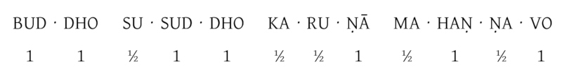
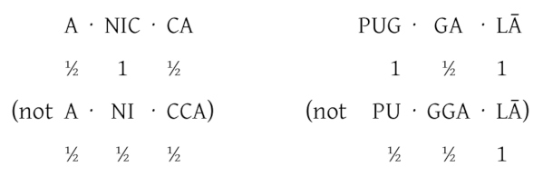

Last updated on: 2022-02-22
Downlads
(NOTE: See the Print Guide for press-quality print files and guidelines.)


Bhikkhu Manual Reference Edition
All Chants with English Translations and Vinaya Notes
Further references
Discipline and Conventions of the Theravada Forest Tradition
by Ajahn Sucitto
Rituals & Observances
by Ajahn Sucitto and Ajahn Candasiri
List of First Lines
- Adāsi me akāsi me
- Aggato ve pasannānaṃ
- A good word of the Blessed One’s reputation has spread as follows
- Ahaṃ sukhito homi niddukkho homi, avero homi, abyāpajjho homi, anīgho homi
- Ajja mayā apaccavekkhitvā yaṃ cīvaraṃ paribhuttaṃ, taṃ yāvadeva sītassa
- Ākāsatthā ca bhummatthā
- Ānāpānassati bhikkhave bhāvitā bahulīkatā
- Aneka-jāti-saṃsāraṃ
- Aniccā vata saṅkhārā
- Aññadatthu haro mitto
- Anuññāsi kho bhagavā
- Anuttaraṃ abhisambodhiṃ sambujjhitvā tathāgato
- Appamāṇo buddho
- Appasannehi nāthassa sāsane sādhusammate
- Araññe rukkha-mūle vā
- Atītaṃ nānvāgameyya
- Atthi bhikkhave ajātaṃ abhūtaṃ akataṃ asaṅkhataṃ
- Atthi loke sīla-guṇo
- Attūpamāya sabbesaṃ
- Ayaṃ kho me kāyo uddhaṃ pādatalā adho kesamatthakā
- Āyu-do bala-do dhīro
- Bāhuṃ sahassam-abhinimmita sāvudhan-taṃ
- Bahuṃ ve saraṇaṃ yanti
- Bhārā have pañcakkhandhā
- Bhāsitam idaṃ tena bhagavatā jānatā passatā
- Bhavatu sabba-maṅgalaṃ rakkhantu sabba-devatā
- Bhummānaṃ devānaṃ saddaṃ sutvā, cātummahārājikā devā
- Bhuttā bhogā bhaṭā bhaccā
- Bojjhaṅgo sati-saṅkhāto
- Born of the Dhamma, that Saṅgha which has practised well
- Buddhaṃ saraṇaṃ gacchāmi
- Buddhānussati mettā ca
- Buddho susuddho karuṇā-mahaṇṇavo
- Buddh’vārahanta-varatādiguṇābhiyutto
- Cha paññattiyo khandhapaññatti, āyatanapaññatti, dhātupaññatti, saccapaññatti
- Chinda sotaṃ parakkamma
- Dānañ-ca peyya-vajjañ-ca
- Dasa ime bhikkhave dhammā pabbajitena abhiṇhaṃ paccavekkhitabbā, katame dasa
- Devo vassatu kālena
- Dukkhappattā ca niddukkhā
- Evaṃ svākkhāto bhikkhave mayā dhammo
- Gandha-sambhāra-yuttena
- Ghana-sārappadittena
- Handa dāni bhikkhave āmantayāmi vo
- Hetu-paccayo, ārammaṇa-paccayo
- Idaṃ te/vo/no/me ñātīnaṃ hotu
- Idaṃ te/vo/no/me ñātīnaṃ hotu
- Iminā puññakammena upajjhāyā guṇuttarā
- Iti pi so bhagavā arahaṃ sammā-sambuddho
- It is excellent because it is well expounded
- I will abide pervading one quarter
- Jarā-dhammomhi jaraṃ anatīto
- Jayanto bodhiyā mūle
- Kāle dadanti sapaññā
- Karaṇīyam-attha-kusalena
- Kusalā dhammā
- Mahā-kāruṇiko nātho
- May I abide in well-being,
- Mettañ-ca sabba-lokasmiṃ
- Mettā-sahagatena cetasā ekaṃ disaṃ pharitvā viharati
- Nakkhatta-yakkha-bhūtānaṃ
- Namo arahato sammā
- Natthi me saraṇaṃ aññaṃ buddho me saraṇaṃ varaṃ
- Pañcakkhandhā
- Pasannā hontu sabbe pi
- Paṭisaṅkhā yoniso cīvaraṃ paṭisevāmi
- Puggalo upalabbhati saccikaṭṭha-paramatthenā’ti
- Puññass’idāni katassa
- Ratanattay’ānubhāvena
- Sā attha-laddhā sukhitā
- Sabba-buddh’ānubhāvena
- Sabba-pāpassa akaraṇaṃ
- Sabba-roga-vinimutto
- Sabbe saṅkhārā aniccā
- Sabbe sattā sadā hontu
- Saddhammajo supaṭipatti-guṇādiyutto
- Sakkatvā buddharatanaṃ
- Sambuddhe aṭṭhavīsañca
- Saṅgaho asaṅgaho
- Satthu-garu dhamma-garu
- Siri-dhiti-mati-tejo-jayasiddhi-mahiddhi-mahāguṇā-parimita-puññādhikarassa
- Sītaṃ uṇhaṃ paṭihanti
- So attha-laddho sukhito
- Supaṭipanno bhagavato sāvakasaṅgho
- Svākkhātat’ādiguṇa-yoga-vasena seyyo
- Svākkhāto bhagavatā dhammo
- Taṃ kho pana bhagavantaṃ evaṃ kalyāṇo kittisaddo abbhuggato
- Te attha-laddhā sukhitā
- The Buddha, absolutely pure, with ocean-like compassion
- The Buddha, the truly worthy one, endowed with
- The Dhamma is well expounded by the Blessed One
- The factors for Awakening include: mindfulness, analysis of qualities
- The Tathāgata is the Pure One, the Perfectly Enlightened One
- They are the Blessed One’s disciples, who have practised well
- This is what should be done
- Through the goodness that arises from my practice
- To the Blessed One, the Lord, who fully attained perfect enlightenment
- Udet’ayañ-cakkhumā eka-rājā
- Vadhissamenanti parāmasanto
- Vandāmi cetiyaṃ sabbaṃ
- Vaṇṇa-gandha-guṇopetaṃ
- Veneyyadamanopāye sabbaso pāramiṃ gato
- Vipassissa nam’atthu
- Vipatti-paṭibāhāya sabba-sampatti-siddhiyā
- Virūpakkhehi me mettaṃ
- Yā devatā santi vihāra-vāsinī
- Yan-dāni me kataṃ puññaṃ
- Yan-dunnimittaṃ avamaṅgalañ-ca
- Yānīdha bhūtāni samāgatāni
- Yaṅ kiñci kusalaṃ kammaṃ
- Yaṅkiñci ratanaṃ loke
- Yaṅkiñci vittaṃ idha vā huraṃ vā
- Yantaṃ sattehi dukkhena ñeyyaṃ anattalakkhaṇaṃ
- Yasmiṃ padese kappeti
- Yassa mūle nissino va
- Yassa saddhā tathāgate
- Yathā paccayaṃ pavattamānaṃ dhātu-mattam-ev’etaṃ
- Yathā pi selā vipulā
- Yathā vāri-vahā pūrā paripūrenti sāgaraṃ
- Yato’haṃ bhagini ariyāya jātiyā jāto
- Ye ca atītā sambuddhā
- Ye dhammā hetuppabhavā
- Ye keci kusalā dhammā, sabbe te kusalamūlā
- Yo cakkhumā moha-malāpakaṭṭho
- Yo so bhagavā arahaṃ sammāsambuddho
- Yo so supaṭipanno bhagavato sāvakasaṅgho
- Yo so svākkhāto bhagavatā dhammo
- Yo so tathāgato arahaṃ sammāsambuddho
Essential Chants
- Morning Chanting
- Evening Chanting
- Reflections
- Paritta Chants
- Anumodanā
- Funeral Chants
- Suttas
- Pāṭimokkha Chants
- Chants Used in Sri Lanka
Morning Chanting
Contents
- Dedication of Offerings
- Dedication of Offerings (English)
- Preliminary Homage
- Preliminary Homage (English)
- Homage to the Buddha
- Homage to the Buddha (English)
- Homage to the Dhamma
- Homage to the Dhamma (English)
- Homage to the Saṅgha
- Homage to the Saṅgha (English)
- Salutation to the Triple Gem
- Salutation to the Triple Gem (English)
- Closing Homage
- Closing Homage (English)
Dedication of Offerings
[Yo so] bhagavā arahaṃ sammāsambuddho
Svākkhāto yena bhagavatā dhammo
Supaṭipanno yassa bhagavato sāvakasaṅgho
Tam-mayaṃ bhagavantaṃ sadhammaṃ sasaṅghaṃ
Imehi sakkārehi yathārahaṃ āropitehi abhipūjayāma
Sādhu no bhante bhagavā sucira-parinibbutopi
Pacchimā-janatānukampa-mānasā
Ime sakkāre duggata-paṇṇākāra-bhūte paṭiggaṇhātu
Amhākaṃ dīgharattaṃ hitāya sukhāya
Arahaṃ sammāsambuddho bhagavā
Buddhaṃ bhagavantaṃ abhivādemi
[Svākkhāto] bhagavatā dhammo
Dhammaṃ namassāmi
[Supaṭipanno] bhagavato sāvakasaṅgho
Saṅghaṃ namāmi
Dedication of Offerings (English)
To the Blessed One, the Lord, who fully attained perfect enlightenment,
To the Teaching which he expounded so well,
And to the Blessed One’s disciples who have practised well,
To these – the Buddha, the Dhamma, and the Saṅgha –
We render with offerings our rightful homage.
It is well for us that the Blessed One, having attained liberation,
Still had compassion for later generations.
May these simple offerings be accepted
For our long-lasting benefit and for the happiness it gives us.
The Lord, the Perfectly Enlightened and Blessed One –
I render homage to the Buddha, the Blessed One.
The Teaching so completely explained by him –
I bow to the Dhamma.
The Blessed One’s disciples who have practised well –
I bow to the Saṅgha.
Preliminary Homage
[Handa mayaṃ buddhassa bhagavato pubbabhāga-namakāraṃ karomase]
Namo tassa bhagavato arahato sammāsambuddhassa (×3)
Preliminary Homage (English)
[Now let us pay preliminary homage to the Buddha.]
Homage to the Blessed, Noble, and Perfectly Enlightened One. (×3)
Homage to the Buddha
[Handa mayaṃ buddhābhitthutiṃ karomase]
Yo so tathāgato arahaṃ sammāsambuddho
Vijjācaraṇa-sampanno, sugato, lokavidū
Anuttaro purisadamma-sārathi
Satthā deva-manussānaṃ, buddho bhagavā.
Yo imaṃ lokaṃ sadevakaṃ samārakaṃ sabrahmakaṃ
Sassamaṇa-brāhmaṇiṃ pajaṃ sadeva-manussaṃ sayaṃ abhiññā sacchikatvā pavedesi
Yo dhammaṃ desesi ādi-kalyāṇaṃ majjhe-kalyāṇaṃ pariyosāna-kalyāṇaṃ
Sātthaṃ sabyañjanaṃ kevala-paripuṇṇaṃ parisuddhaṃ brahma-cariyaṃ pakāsesi
Tam-ahaṃ bhagavantaṃ abhipūjayāmi tam-ahaṃ bhagavantaṃ sirasā namāmi
Homage to the Buddha (English)
[Now let us chant in praise of the Buddha.]
The Tathāgata is the Pure One, the Perfectly Enlightened One.
He is impeccable in conduct and understanding,
The Accomplished One,
The Knower of the Worlds.
He trains perfectly those who wish to be trained.
He is Teacher of gods and humans.
He is awake and holy.
In this world with its gods, demons, and kind spirits,
Its seekers and sages, celestial and human beings, he has by deep insight revealed the Truth.
He has pointed out the Dhamma: beautiful in the beginning, beautiful in the middle, beautiful in the end.
He has explained the Spiritual Life of complete purity in its essence and conventions.
I chant my praise to the Blessed One, I bow my head to the Blessed One.
Homage to the Dhamma
[Handa mayaṃ dhammābhitthutiṃ karomase]
Yo so svākkhāto bhagavatā dhammo
Sandiṭṭhiko, akāliko, ehipassiko, opanayiko
Paccattaṃ veditabbo viññūhi
Tam-ahaṃ dhammaṃ abhipūjayāmi tam-ahaṃ dhammaṃ sirasā namāmi
Homage to the Dhamma (English)
[Now let us chant in praise of the Dhamma.]
The Dhamma is well expounded by the Blessed One,
Apparent here and now,
Timeless,
Encouraging investigation,
Leading inwards,
To be experienced individually by the wise.
I chant my praise to this Teaching, I bow my head to this Truth.
Homage to the Saṅgha
[Handa mayaṃ saṅghābhitthutiṃ karomase]
Yo so supaṭipanno bhagavato sāvakasaṅgho
Ujupaṭipanno bhagavato sāvakasaṅgho
Ñāyapaṭipanno bhagavato sāvakasaṅgho
Sāmīcipaṭipanno bhagavato sāvakasaṅgho
Yadidaṃ cattāri purisayugāni aṭṭha purisapuggalā
Esa bhagavato sāvakasaṅgho
Āhuneyyo, pāhuneyyo, dakkhiṇeyyo, añjali-karaṇīyo
Anuttaraṃ puññakkhettaṃ lokassa
Tam-ahaṃ saṅghaṃ abhipūjayāmi tam-ahaṃ saṅghaṃ sirasā namāmi
Homage to the Saṅgha (English)
[Now let us chant in praise of the Saṅgha.]
They are the Blessed One’s disciples, who have practised well,
Who have practised directly,
Who have practised insightfully,
Those who practise with integrity –
That is the four pairs, the eight kinds of noble beings –
These are the Blessed One’s disciples.
Such ones are worthy of gifts,
Worthy of hospitality,
Worthy of offerings,
Worthy of respect;
They give occasion for incomparable goodness to arise in the world.
I chant my praise to this Saṅgha, I bow my head to this Saṅgha.
Salutation to the Triple Gem
[Handa mayaṃ ratanattaya-paṇāma-gāthāyo c’eva saṃvega-parikittana-pāṭhañca bhaṇāmase]
Buddho susuddho karuṇā-mahaṇṇavo
Yo’ccanta-suddhabbara-ñāṇa-locano
Lokassa pāpūpakilesa-ghātako
Vandāmi buddhaṃ aham-ādarena taṃ
Dhammo padīpo viya tassa satthuno
Yo magga-pākāmata-bheda-bhinnako
Lokuttaro yo ca tad-attha-dīpano
Vandāmi dhammaṃ aham-ādarena taṃ
Saṅgho sukhettābhyati-khetta-saññito
Yo diṭṭha-santo sugatānubodhako
Lolappahīno ariyo sumedhaso
Vandāmi saṅghaṃ aham-ādarena taṃ
Iccevam-ekantabhipūja-neyyakaṃ vatthuttayaṃ vandayatābhisaṅkhataṃ
Puññaṃ mayā yaṃ mama sabbupaddavā mā hontu ve tassa pabhāva-siddhiyā
Idha tathāgato loke uppanno arahaṃ sammāsambuddho
Dhammo ca desito niyyāniko upasamiko parinibbāniko sambodhagāmī sugatappavedito
Mayan-taṃ dhammaṃ sutvā evaṃ jānāma
Jātipi dukkhā
Jarāpi dukkhā
Maraṇampi dukkhaṃ
Soka-parideva-dukkha-domanass’upāyāsāpi dukkhā
Appiyehi sampayogo dukkho
Piyehi vippayogo dukkho
Yamp’icchaṃ na labhati tampi dukkhaṃ
Saṅkhittena pañcupādānakkhandhā dukkhā
Seyyathīdaṃ
Rūpūpādānakkhandho
Vedanūpādānakkhandho
Saññūpādānakkhandho
Saṅkhārūpādānakkhandho
Viññāṇūpādānakkhandho
Yesaṃ pariññāya
Dharamāno so bhagavā evaṃ bahulaṃ sāvake vineti
Evaṃ bhāgā ca panassa bhagavato sāvakesu anusāsanī bahulā pavattati
Rūpaṃ aniccaṃ
Vedanā aniccā
Saññā aniccā
Saṅkhārā aniccā
Viññāṇaṃ aniccaṃ
Rūpaṃ anattā
Vedanā anattā
Saññā anattā
Saṅkhārā anattā
Viññāṇaṃ anattā
Sabbe saṅkhārā aniccā
Sabbe dhammā anattā’ti
Te mayaṃ otiṇṇāmha jātiyā jarā-maraṇena
Sokehi paridevehi dukkhehi domanassehi upāyāsehi
Dukkhotiṇṇā dukkha-paretā
Appeva nāmimassa kevalassa dukkha-kkhandhassa
antakiriyā paññāyethā’ti
Cira-parinibbutampi taṃ bhagavantaṃ uddissa arahantaṃ sammāsambuddhaṃ
Saddhā agārasmā anagāriyaṃ pabbajitā
Tasmiṃ bhagavati brahma-cariyaṃ carāma
Bhikkhūnaṃ/Sīladharānaṃ sikkhāsājīva-samāpannā
Taṃ no brahma-cariyaṃ imassa kevalassa dukkha-kkhandhassa antakiriyāya saṃvattatu
Salutation to the Triple Gem (English)
[Now let us chant our salutation to the Triple Gem and a passage to arouse urgency.]
The Buddha, absolutely pure, with ocean-like compassion,
Possessing the clear sight of wisdom,
Destroyer of worldly self-corruption –
Devotedly indeed, that Buddha I revere.
The Teaching of the Lord, like a lamp,
Illuminating the Path and its Fruit: the Deathless,
That which is beyond the conditioned world –
Devotedly indeed, that Dhamma I revere.
The Saṅgha, the most fertile ground for cultivation,
Those who have realized peace, awakened after the Accomplished One,
Noble and wise, all longing abandoned –
Devotedly indeed, that Saṅgha I revere.
This salutation should be made to that which is worthy.
Through the power of such good action, may all obstacles disappear.
One who knows things as they are has come into this world; and he is an Arahant, a perfectly Awakened being,
Purifying the way leading out of delusion, calming and directing to perfect peace, and leading to enlightenment – this Way he has made known.
Having heard the Teaching, we know this:
Birth is dukkha,
Ageing is dukkha,
And death is dukkha;
Sorrow, lamentation, pain, grief, and despair are dukkha;
Association with the disliked is dukkha;
Separation from the liked is dukkha;
Not attaining one’s wishes is dukkha.
In brief, the five focuses of identity are dukkha.
These are as follows:
Attachment to form,
Attachment to feeling,
Attachment to perception,
Attachment to mental formations,
Attachment to sense-consciousness.
For the complete understanding of this,
The Blessed One in his lifetime frequently instructed his disciples in just this way.
In addition, he further instructed:
Form is impermanent,
Feeling is impermanent,
Perception is impermanent,
Mental formations are impermanent,
Sense-consciousness is impermanent;
Form is not-self,
Feeling is not-self,
Perception is not-self,
Mental formations are not-self,
Sense-consciousness is not-self;
All conditions are transient,
There is no self in the created or the uncreated.
All of us are bound by birth, ageing, and death,
By sorrow, lamentation, pain, grief, and despair,
Bound by dukkha and obstructed by dukkha.
Let us all aspire to complete freedom from suffering.
The following is chanted only by the monks and nuns.
Remembering the Blessed One, the Noble Lord, and Perfectly Enlightened One, who long ago attained Parinibbāna,
We have gone forth with faith from home to homelessness,
And like the Blessed One, we practise the Holy Life,
Being fully equipped with the bhikkhus’/nuns’ system of training.
May this Holy Life lead us to the end of this whole mass of suffering.
An alternative version of the preceding section, which can be chanted by laypeople as well.
The Blessed One, who long ago attained Parinibbāna, is our refuge.
So too are the Dhamma and the Saṅgha.
Attentively we follow the pathway of that Blessed One, with all of our mindfulness and strength.
May then the cultivation of this practice
Lead us to the end of every kind of suffering.
Closing Homage
[Arahaṃ] sammāsambuddho bhagavā
Buddhaṃ bhagavantaṃ abhivādemi
[Svākkhāto] bhagavatā dhammo
Dhammaṃ namassāmi
[Supaṭipanno] bhagavato sāvakasaṅgho
Saṅghaṃ namāmi
Closing Homage (English)
The Lord, the Perfectly Enlightened and Blessed One –
I render homage to the Buddha, the Blessed One.
The Teaching, so completely explained by him –
I bow to the Dhamma.
The Blessed One’s disciples, who have practised well –
I bow to the Saṅgha.
Evening Chanting
Contents
- Dedication of Offerings
- Dedication of Offerings (English)
- Preliminary Homage
- Preliminary Homage (English)
- Recollection of the Buddha
- Recollection of the Buddha (English)
- Supreme Praise of the Buddha
- Supreme Praise of the Buddha (English)
- Recollection of the Dhamma
- Recollection of the Dhamma (English)
- Supreme Praise of the Dhamma
- Supreme Praise of the Dhamma (English)
- Recollection of the Saṅgha
- Recollection of the Saṅgha (English)
- Supreme Praise of the Saṅgha
- Supreme Praise of the Saṅgha (English)
- Closing Homage
- Closing Homage (English)
Dedication of Offerings
[Yo so] bhagavā arahaṃ sammāsambuddho
Svākkhāto yena bhagavatā dhammo
Supaṭipanno yassa bhagavato sāvakasaṅgho
Tam-mayaṃ bhagavantaṃ sadhammaṃ sasaṅghaṃ
Imehi sakkārehi yathārahaṃ āropitehi abhipūjayāma
Sādhu no bhante bhagavā sucira-parinibbutopi
Pacchimā-janatānukampa-mānasā
Ime sakkāre duggata-paṇṇākāra-bhūte paṭiggaṇhātu
Amhākaṃ dīgharattaṃ hitāya sukhāya
Arahaṃ sammāsambuddho bhagavā
Buddhaṃ bhagavantaṃ abhivādemi
[Svākkhāto] bhagavatā dhammo
Dhammaṃ namassāmi
[Supaṭipanno] bhagavato sāvakasaṅgho
Saṅghaṃ namāmi
Dedication of Offerings (English)
[To the Blessed One,] the Lord, who fully attained
perfect enlightenment,
To the Teaching, which he expounded so well,
And to the Blessed One’s disciples who have practised well,
To these – the Buddha, the Dhamma, and the Saṅgha –
We render with offerings our rightful homage.
It is well for us that the Blessed One, having attained liberation,
Still had compassion for later generations.
May these simple offerings be accepted
For our long-lasting benefit and for the happiness it gives us.
The Lord, the Perfectly Enlightened and Blessed One –
I render homage to the Buddha, the Blessed One.
[The Teaching,] so completely explained by him –
I bow to the Dhamma.
[The Blessed One’s disciples,] who have practised well –
I bow to the Saṅgha.
Preliminary Homage
[Handa mayaṃ buddhassa bhagavato pubbabhāga-namakāraṃ karomase]
Namo tassa bhagavato arahato sammāsambuddhassa (×3)
Preliminary Homage (English)
[Now let us pay preliminary homage to the Buddha.]
Homage to the Blessed, Noble, and Perfectly Enlightened One. (×3)
Recollection of the Buddha
[Handa mayaṃ buddhānussatinayaṃ karomase]
Taṃ kho pana bhagavantaṃ evaṃ kalyāṇo kittisaddo abbhuggato
Itipi so bhagavā arahaṃ sammāsambuddho
Vijjācaraṇa-sampanno sugato lokavidū
Anuttaro purisadamma-sārathi satthā deva-manussānaṃ buddho bhagavā’ti
Recollection of the Buddha (English)
[Now let us chant the recollection of the Buddha.]
A good word of the Blessed One’s reputation has spread as follows:
He, the Blessed One, is indeed the Pure One,
the Perfectly Enlightened One;
He is impeccable in conduct and understanding,
the Accomplished One, the Knower of the Worlds;
He trains perfectly those who wish to be trained;
he is Teacher of gods and humans; he is Awake and Holy.
Supreme Praise of the Buddha
[Handa mayaṃ buddhābhigītiṃ karomase]
Buddh’vārahanta-varatādiguṇābhiyutto
Suddhābhiñāṇa-karuṇāhi samāgatatto
Bodhesi yo sujanataṃ kamalaṃ va sūro
Vandām’ahaṃ tam-araṇaṃ sirasā jinendaṃ
Buddho yo sabba-pāṇīnaṃ saraṇaṃ khemam-uttamaṃ
Paṭhamānussatiṭṭhānaṃ vandāmi taṃ siren’ahaṃ
Buddhassāh’asmi dāso/dāsī va buddho me sāmi-kissaro
Buddho dukkhassa ghātā ca vidhātā ca hitassa me
Buddhass’āhaṃ niyyādemi sarīrañ-jīvitañ-cidaṃ
Vandanto’haṃ/Vandantī’haṃ carissāmi buddhass’eva subodhitaṃ
Natthi me saraṇaṃ aññaṃ buddho me saraṇaṃ varaṃ
Etena sacca-vajjena vaḍḍheyyaṃ satthu-sāsane
Buddhaṃ me vandamānena/vandamānāya yaṃ puññaṃ pasutaṃ idha
Sabbepi antarāyā me māhesuṃ tassa tejasā
(Bowing)
Kāyena vācāya va cetasā vā
Buddhe kukammaṃ pakataṃ mayā yaṃ
Buddho paṭiggaṇhātu accayantaṃ
Kālantare saṃvarituṃ va buddhe
Supreme Praise of the Buddha (English)
[Now let us chant the supreme praise of the Buddha.]
The Buddha, the truly worthy one, endowed with
such excellent qualities,
Whose being is composed of purity, transcendental wisdom,
and compassion,
Who has enlightened the wise like the sun awakening the lotus –
I bow my head to that peaceful chief of conquerors.
The Buddha, who is the safe, secure refuge of all beings –
As the First Object of Recollection, I venerate him with bowed head.
I am indeed the Buddha’s servant, the Buddha is my Lord and Guide.
The Buddha is sorrow’s destroyer, who bestows blessings on me.
To the Buddha I dedicate this body and life,
And in devotion I will walk the Buddha’s Path of Awakening.
For me there is no other refuge, the Buddha is my excellent refuge.
By the utterance of this Truth, may I grow in the Master’s Way.
By my devotion to the Buddha, and the blessing of this practice –
By its power, may all obstacles be overcome.
(Bowing)
By body, speech, or mind,
For whatever wrong action I have committed towards the Buddha,
May my acknowledgement of fault be accepted,
That in future there may be restraint regarding the Buddha.
Recollection of the Dhamma
[Handa mayaṃ dhammānussatinayaṃ karomase]
Svākkhāto bhagavatā dhammo
Sandiṭṭhiko akāliko ehipassiko
Opanayiko paccattaṃ veditabbo viññūhī’ti
Recollection of the Dhamma (English)
[Now let us chant the recollection of the Dhamma.]
The Dhamma is well expounded by the Blessed One,
Apparent here and now, timeless, encouraging investigation,
Leading inwards, to be experienced individually by the wise.
Supreme Praise of the Dhamma
[Handa mayaṃ dhammābhigītiṃ karomase]
Svākkhātat’ādiguṇa-yoga-vasena seyyo
Yo magga-pāka-pariyatti-vimokkha-bhedo
Dhammo kuloka-patanā tada-dhāri-dhārī
Vandām’ahaṃ tama-haraṃ vara-dhammam-etaṃ
Dhammo yo sabba-pāṇīnaṃ saraṇaṃ khemam-uttamaṃ
Dutiyānussatiṭṭhānaṃ vandāmi taṃ siren’ahaṃ
Dhammassāh’asmi dāso/dāsī va dhammo me sāmi-kissaro
Dhammo dukkhassa ghātā ca vidhātā ca hitassa me
Dhammass’āhaṃ niyyādemi sarīrañ-jīvitañ-cidaṃ
Vandantohaṃ/Vandantīhaṃ carissāmi dhammass’eva sudhammataṃ
Natthi me saraṇaṃ aññaṃ dhammo me saraṇaṃ varaṃ
Etena sacca-vajjena vaḍḍheyyaṃ satthu-sāsane
Dhammaṃ me vandamānena/vandamānāya yaṃ puññaṃ pasutaṃ idha
Sabbepi antarāyā me māhesuṃ tassa tejasā
(Bowing)
Kāyena vācāya va cetasā vā
Dhamme kukammaṃ pakataṃ mayā yaṃ
Dhammo paṭiggaṇhātu accayantaṃ
Kālantare saṃvarituṃ va dhamme
Supreme Praise of the Dhamma (English)
[Now let us chant the supreme praise of the Dhamma.]
It is excellent because it is ‘well expounded,’
And it can be divided into Path and Fruit, Learning and Liberation.
The Dhamma holds those who uphold it from falling into delusion.
I revere the excellent Teaching, that which removes darkness –
The Dhamma, which is the supreme, secure refuge of all beings –
As the Second Object of Recollection, I venerate it with bowed head.
I am indeed the Dhamma’s servant, the Dhamma is my Lord and Guide.
The Dhamma is sorrow’s destroyer, and it bestows blessings on me.
To the Dhamma I dedicate this body and life,
And in devotion I will walk this excellent way of Truth.
For me there is no other refuge, the Dhamma is my excellent refuge.
By the utterance of this Truth, may I grow in the Master’s Way.
By my devotion to the Dhamma, and the blessing of this practice –
By its power, may all obstacles be overcome.
(Bowing)
By body, speech, or mind,
For whatever wrong action I have committed towards the Dhamma,
May my acknowledgement of fault be accepted,
That in future there may be restraint regarding the Dhamma.
Recollection of the Saṅgha
[Handa mayaṃ saṅghānussatinayaṃ karomase]
Supaṭipanno bhagavato sāvakasaṅgho
Ujupaṭipanno bhagavato sāvakasaṅgho
Ñāyapaṭipanno bhagavato sāvakasaṅgho
Sāmīcipaṭipanno bhagavato sāvakasaṅgho
Yadidaṃ cattāri purisayugāni aṭṭha purisapuggalā
Esa bhagavato sāvakasaṅgho
Āhuneyyo pāhuneyyo dakkhiṇeyyo añjali-karaṇīyo
Anuttaraṃ puññakkhettaṃ lokassā’ti
Recollection of the Saṅgha (English)
[Now let us chant the recollection of the Saṅgha.]
They are the Blessed One’s disciples, who have practised well,
Who have practised directly,
Who have practised insightfully,
Those who practise with integrity –
That is the four pairs, the eight kinds of noble beings –
These are the Blessed One’s disciples.
Such ones are worthy of gifts, worthy of hospitality,
worthy of offerings, worthy of respect;
They give occasion for incomparable goodness to arise in the world.
Supreme Praise of the Saṅgha
[Handa mayaṃ saṅghābhigītiṃ karomase]
Saddhammajo supaṭipatti-guṇādiyutto
Yo’ṭṭhabbidho ariyapuggala-saṅgha-seṭṭho
Sīlādidhamma-pavarāsaya-kāya-citto
Vandām’ahaṃ tam-ariyāna-gaṇaṃ susuddhaṃ
Saṅgho yo sabba-pāṇīnaṃ saraṇaṃ khemam-uttamaṃ
Tatiyānussatiṭṭhānaṃ vandāmi taṃ siren’ahaṃ
Saṅghass’āhasmi dāso/dāsī va saṅgho me sāmi-kissaro
Saṅgho dukkhassa ghātā ca vidhātā ca hitassa me
Saṅghass’āhaṃ niyyādemi sarīrañ-jīvitañ-cidaṃ
Vandanto’haṃ/Vandantī’haṃ carissāmi saṅghassopaṭipannataṃ
Natthi me saraṇaṃ aññaṃ saṅgho me saraṇaṃ varaṃ
Etena sacca-vajjena vaḍḍheyyaṃ satthu-sāsane
Saṅghaṃ me vandamānena/vandamānāya yaṃ puññaṃ pasutaṃ idha
Sabbepi antarāyā me māhesuṃ tassa tejasā
(Bowing)
Kāyena vācāya va cetasā vā
Saṅghe kukammaṃ pakataṃ mayā yaṃ
Saṅgho paṭiggaṇhātu accayantaṃ
Kālantare saṃvarituṃ va saṅghe
Supreme Praise of the Saṅgha (English)
[Now let us chant the supreme praise of the Saṅgha.]
Born of the Dhamma, that Saṅgha which has practised well,
The field of the Saṅgha formed of eight kinds of noble beings,
Guided in body and mind by excellent morality and virtue.
I revere that assembly of noble beings perfected in purity.
The Saṅgha, which is the supreme, secure refuge of all beings –
As the Third Object of Recollection, I venerate it with bowed head.
I am indeed the Saṅgha’s servant, the Saṅgha is my Lord and Guide.
The Saṅgha is sorrow’s destroyer and it bestows blessings on me.
To the Saṅgha I dedicate this body and life,
And in devotion I will walk the well-practised way of the Saṅgha.
For me there is no other refuge, the Saṅgha is my excellent refuge.
By the utterance of this Truth, may I grow in the Master’s Way.
By my devotion to the Saṅgha, and the blessing of this practice –
By its power, may all obstacles be overcome.
(Bowing)
By body, speech, or mind,
For whatever wrong action I have committed towards the Saṅgha,
May my acknowledgement of fault be accepted,
That in future there may be restraint regarding the Saṅgha.
Closing Homage
[Arahaṃ] sammāsambuddho bhagavā
Buddhaṃ bhagavantaṃ abhivādemi
[Svākkhāto] bhagavatā dhammo
Dhammaṃ namassāmi
[Supaṭipanno] bhagavato sāvakasaṅgho
Saṅghaṃ namāmi
Closing Homage (English)
[The Lord,] the Perfectly Enlightened and Blessed One –
I render homage to the Buddha, the Blessed One.
[The Teaching,] so completely explained by him –
I bow to the Dhamma.
[The Blessed One’s disciples,] who have practised well –
I bow to the Saṅgha.
Reflections
Contents
- Reflection on the Four Requisites
- Five Subjects for Frequent Recollection
- Ten Subjects for Frequent Recollection
- Caturappamaññā-obhāsana
- Recollection After Using the Requisites
- Reflection on the Off-Putting Qualities of the Requisites
- Mettāpharaṇa
- Reflection on the Unconditioned
- Reflection on the Thirty-Two Parts
- Sabba-patti-dāna-gāthā
- Uddissanādhiṭṭhāna-gāthā
- Sabbe sattā sadā hontu
- Ti-loka-vijaya-rāja-patti-dāna-gāthā
- The Teaching on Striving According to Dhamma
- Dedication of Merit to the Devas and Others
- Verses on Friends
- Reflection on Impermanence
- The Guardian Meditations
- Yan-dāni me kataṃ puññaṃ
Reflection on the Four Requisites
[Handa mayaṃ taṅkhaṇika-paccavekkhaṇa-pāṭhaṃ bhaṇāmase]
[Paṭisaṅkhā] yoniso cīvaraṃ paṭisevāmi,
yāvadeva sītassa paṭighātāya, uṇhassa paṭighātāya,
ḍaṃsa-makasa-vātātapa-siriṃsapa-samphassānaṃ
paṭighātāya, yāvadeva hirikopina-paṭicchādanatthaṃ
Wisely reflecting, I use the robe: only to ward off cold, to ward off heat, to ward off the touch of flies, mosquitoes, wind, burning and creeping things, only for the sake of modesty.
[Paṭisaṅkhā] yoniso piṇḍapātaṃ paṭisevāmi, neva davāya, na madāya, na maṇḍanāya, na vibhūsanāya, yāvadeva imassa kāyassa ṭhitiyā, yāpanāya, vihiṃsūparatiyā, brahmacariyānuggahāya, iti purāṇañca vedanaṃ paṭihaṅkhāmi, navañca vedanaṃ na uppādessāmi, yātrā ca me bhavissati anavajjatā ca phāsuvihāro cā’ti
Wisely reflecting, I use almsfood: not for fun, not for pleasure, not for fattening, not for beautification, only for the maintenance and nourishment of this body, for keeping it healthy, for helping with the Holy Life; thinking thus, ‘I will allay hunger without overeating, so that I may continue to live blamelessly and at ease.’
[Paṭisaṅkhā] yoniso senāsanaṃ paṭisevāmi,
yāvadeva sītassa paṭighātāya, uṇhassa paṭighātāya,
ḍaṃsa-makasa-vātātapa-siriṃsapa-samphassānaṃ
paṭighātāya, yāvadeva utuparissaya vinodanaṃ paṭisallānārāmatthaṃ
Wisely reflecting, I use the lodging: only to ward off cold, to ward off heat, to ward off the touch of flies, mosquitoes, wind, burning and creeping things, only to remove the danger from weather, and for living in seclusion.
[Paṭisaṅkhā] yoniso gilāna-paccaya-bhesajja-parikkhāraṃ paṭisevāmi, yāvadeva uppannānaṃ veyyābādhikānaṃ vedanānaṃ paṭighātāya, abyāpajjha-paramatāyā’ti
Wisely reflecting, I use supports for the sick and medicinal requisites: only to ward off painful feelings that have arisen, for the maximum freedom from disease.
M.I.10
Five Subjects for Frequent Recollection
[Handa mayaṃ abhiṇha-paccavekkhaṇa-pāṭhaṃ bhaṇāmase]
(Men Chant)
[Jarā-dhammomhi] jaraṃ anatīto
I am of the nature to age, I have not gone beyond ageing.
Byādhi-dhammomhi byādhiṃ anatīto
I am of the nature to sicken, I have not gone beyond sickness.
Maraṇa-dhammomhi maraṇaṃ anatīto
I am of the nature to die, I have not gone beyond dying.
Sabbehi me piyehi manāpehi nānābhāvo vinābhāvo
All that is mine, beloved and pleasing,
will become otherwise, will become separated from me.
Kammassakomhi kammadāyādo kammayoni kammabandhu kammapaṭisaraṇo
Yaṃ kammaṃ karissāmi, kalyāṇaṃ vā pāpakaṃ vā, tassa dāyādo bhavissāmi
I am the owner of my kamma, heir to my kamma, born of my kamma, related to my kamma, abide supported by my kamma. Whatever kamma I shall do, for good or for ill, of that I will be the heir.
Evaṃ amhehi abhiṇhaṃ paccavekkhitabbaṃ
Thus we should frequently recollect.
(Women Chant)
[Jarā-dhammāmhi] jaraṃ anatītā
I am of the nature to age, I have not gone beyond ageing.
Byādhi-dhammāmhi byādhiṃ anatītā
I am of the nature to sicken, I have not gone beyond sickness.
Maraṇa-dhammāmhi maraṇaṃ anatītā
I am of the nature to die, I have not gone beyond dying.
Sabbehi me piyehi manāpehi nānābhāvo vinābhāvo
All that is mine, beloved and pleasing,
will become otherwise, will become separated from me.
Kammassakāmhi kammadāyādā kammayoni kammabandhu kammapaṭisaraṇā
Yaṃ kammaṃ karissāmi, kalyāṇaṃ vā pāpakaṃ vā, tassa dāyādā bhavissāmi
I am the owner of my kamma, heir to my kamma, born of my kamma, related to my kamma, abide supported by my kamma. Whatever kamma I shall do, for good or for ill, of that I will be the heir.
Evaṃ amhehi abhiṇhaṃ paccavekkhitabbaṃ
Thus we should frequently recollect.
A.III.71
Ten Subjects for Frequent Recollection
[Handa mayaṃ pabbajita-abhiṇha-paccavekkhaṇa-pāṭhaṃ bhaṇāmase]
[Dasa ime bhikkhave] dhammā pabbajitena abhiṇhaṃ paccavekkhitabbā, katame dasa
Bhikkhus, there are ten dhammas which should be reflected upon, again and again, by one who has gone forth. What are these ten?
Vevaṇṇiyamhi ajjhūpagato’ti pabbajitena abhiṇhaṃ paccavekkhitabbaṃ
‘I am no longer living according to worldly aims and values.’
This should be reflected upon, again and again,
by one who has gone forth.
Parapaṭibaddhā me jīvikā’ti pabbajitena abhiṇhaṃ paccavekkhitabbaṃ
‘My very life is sustained through the gifts of others.’
This should be reflected upon, again and again,
by one who has gone forth.
Añño me ākappo karaṇīyo’ti pabbajitena abhiṇhaṃ paccavekkhitabbaṃ
‘I should strive to abandon my former habits.’
This should be reflected upon, again and again,
by one who has gone forth.
Kacci nu kho me attā sīlato na upavadatī’ti pabbajitena abhiṇhaṃ paccavekkhitabbaṃ
‘Does regret over my conduct arise in my mind?’
This should be reflected upon, again and again,
by one who has gone forth.
Kacci nu kho maṃ anuvicca viññū sabrahmacārī sīlato na upavadantī’ti pabbajitena abhiṇhaṃ paccavekkhitabbaṃ
‘Could my spiritual companions find fault with my conduct?’
This should be reflected upon, again and again,
by one who has gone forth.
Sabbehi me piyehi manāpehi nānābhāvo vinābhāvo’ti pabbajitena abhiṇhaṃ paccavekkhitabbaṃ
‘All that is mine, beloved and pleasing, will become otherwise, will become separated from me.’
This should be reflected upon, again and again,
by one who has gone forth.
Kammassakomhi kammadāyādo kammayoni kammabandhu kammapaṭisaraṇo, yaṃ kammaṃ karissāmi, kalyāṇaṃ vā pāpakaṃ vā, tassa dāyādo bhavissāmī’ti pabbajitena abhiṇhaṃ paccavekkhitabbaṃ
‘I am the owner of my kamma, heir to my kamma, born of my kamma,
related to my kamma, abide supported by my kamma; whatever kamma I shall do, for good or for ill, of that I will be the heir.’
This should be reflected upon, again and again,
by one who has gone forth.
’Kathambhūtassa me rattindivā vītipatantī’ti pabbajitena abhiṇhaṃ paccavekkhitabbaṃ
‘The days and nights are relentlessly passing; how well am I spending my time?’
This should be reflected upon, again and again,
by one who has gone forth.
Kacci nu kho’haṃ suññāgāre abhiramāmī’ti pabbajitena abhiṇhaṃ paccavekkhitabbaṃ
‘Do I delight in solitude or not?’
This should be reflected upon, again and again,
by one who has gone forth.
Atthi nu kho me uttari-manussa-dhammā alamariya-ñāṇa-dassana-viseso adhigato, so’haṃ pacchime kāle sabrahmacārīhi puṭṭho na maṅku bhavissāmī’ti pabbajitena abhiṇhaṃ paccavekkhitabbaṃ
‘Has my practice borne fruit with freedom or insight so that at the end of my life I need not feel ashamed when questioned by my spiritual companions?’
This should be reflected upon, again and again,
by one who has gone forth.
Ime kho bhikkhave dasa dhammā pabbajitena abhiṇhaṃ paccavekkhitabbā’ti
Bhikkhus, these are the ten dhammas to be reflected upon, again and again, by one who has gone forth.
A.V.87
Caturappamaññā-obhāsana
[Handa mayaṃ caturappamaññā-obhāsanaṃ karomase]
[Mettā-sahagatena] cetasā ekaṃ disaṃ pharitvā viharati
Tathā dutiyaṃ tathā tatiyaṃ tathā catutthaṃ
Iti uddhamadho tiriyaṃ sabbadhi sabbattatāya
Sabbāvantaṃ lokaṃ mettā-sahagatena cetasā
Vipulena mahaggatena appamāṇena averena
abyāpajjhena pharitvā viharati
Karuṇā-sahagatena cetasā ekaṃ disaṃ pharitvā viharati
Tathā dutiyaṃ tathā tatiyaṃ tathā catutthaṃ
Iti uddhamadho tiriyaṃ sabbadhi sabbattatāya
Sabbāvantaṃ lokaṃ karuṇā-sahagatena cetasā
Vipulena mahaggatena appamāṇena averena
abyāpajjhena pharitvā viharati
Muditā-sahagatena cetasā ekaṃ disaṃ pharitvā viharati
Tathā dutiyaṃ tathā tatiyaṃ tathā catutthaṃ
Iti uddhamadho tiriyaṃ sabbadhi sabbattatāya
Sabbāvantaṃ lokaṃ muditā-sahagatena cetasā
Vipulena mahaggatena appamāṇena averena
abyāpajjhena pharitvā viharati
Upekkhā-sahagatena cetasā ekaṃ disaṃ pharitvā viharati
Tathā dutiyaṃ tathā tatiyaṃ tathā catutthaṃ
Iti uddhamadho tiriyaṃ sabbadhi sabbattatāya
Sabbāvantaṃ lokaṃ upekkhā-sahagatena cetasā
Vipulena mahaggatena appamāṇena averena
abyāpajjhena pharitvā viharatī’ti
D.I.251
Suffusion With the Divine Abidings
[Now let us make the Four Boundless Qualities shine forth.]
[I will abide] pervading one quarter
with a heart imbued with loving-kindness;
Likewise the second, likewise the third,
likewise the fourth;
So above and below, around and everywhere;
and to all as to myself.
I will abide pervading the all-encompassing
world with a heart imbued with loving-kindness;
abundant, exalted, immeasurable, without hostility,
and without ill-will.
I will abide pervading one quarter
with a heart imbued with compassion;
Likewise the second, likewise the third,
likewise the fourth;
So above and below, around and everywhere;
and to all as to myself.
I will abide pervading the all-encompassing
world with a heart imbued with compassion;
abundant, exalted, immeasurable, without hostility,
and without ill-will.
I will abide pervading one quarter
with a heart imbued with gladness;
Likewise the second, likewise the third,
likewise the fourth;
So above and below, around and everywhere;
and to all as to myself.
I will abide pervading the all-encompassing
world with a heart imbued with gladness;
abundant, exalted, immeasurable, without hostility,
and without ill-will.
I will abide pervading one quarter
with a heart imbued with equanimity;
Likewise the second, likewise the third,
likewise the fourth;
So above and below, around and everywhere;
and to all as to myself.
I will abide pervading the all-encompassing
world with a heart imbued with equanimity;
abundant, exalted, immeasurable, without hostility,
and without ill-will.
Recollection After Using the Requisites
[Handa mayaṃ atīta-paccavekkhaṇa-pāṭhaṃ bhaṇāmase]
Ajja mayā apaccavekkhitvā yaṃ cīvaraṃ paribhuttaṃ, taṃ yāvadeva sītassa paṭighātāya, uṇhassa paṭighātāya, ḍaṃsa-makasa-vātātapa-siriṃsapa-samphassānaṃ paṭighātāya, yāvadeva hirikopina paṭicchādan’atthaṃ.
Whatever robe I used today without consideration, was only to ward off cold, to ward off heat, to ward off the touch of flies, mosquitoes, wind, burning and creeping things, only for the sake of modesty.
Ajja mayā apaccavekkhitvā yo piṇḍapāto paribhutto, so n’eva davāya, na madāya, na maṇḍanāya, na vibhūsanāya, yāvad-eva imassa kāyassa ṭhitiyā, yāpanāya, vihiṃsūparatiyā, brahmacariyānuggahāya, iti purāṇañca vedanaṃ paṭihaṅkhāmi, navañca vedanaṃ na uppādessāmi, yātrā ca me bhavissati anavajjatā ca phāsuvihāro cā’ti.
Whatever alms-food I used today without consideration, was not for fun, not for pleasure, not for fattening, not for beautification, only for the maintenance and nourishment of this body, for keeping it healthy, for helping with the Holy Life; thinking thus, ‘I will allay hunger without overeating, so that I may continue to live blamelessly and at ease.’
Ajja mayā apaccavekkhitvā yaṃ senāsanaṃ paribhuttaṃ, taṃ yāvadeva sītassa paṭighātāya, uṇhassa paṭighātāya, ḍaṃsa-makasa-vātātapa-siriṃsapa-samphassānaṃ paṭighātāya, yāvadeva utuparissaya vinodanaṃ paṭisallānārāmatthaṃ.
Whatever lodging I used today without consideration, was only to ward off cold, to ward off heat, to ward off the touch of flies, mosquitoes, wind, burning and creeping things, only to remove the danger from weather, and for living in seclusion.
Ajja mayā apaccavekkhitvā yo gilāna-paccayabhesajja-parikkhāro paribhutto, so yāvadeva uppannānaṃ veyyābādhikānaṃ vedanānaṃ paṭighātāya, abyāpajjha-paramatāyā’ti.
Whatever medicinal requisite for supporting the sick I used today without consideration, was only to ward off painful feelings that have arisen, for the maximum freedom from disease.
M.I.10
Reflection on the Off-Putting Qualities of the Requisites
[Handa mayaṃ dhātu-paṭikūla-paccavekkhaṇa-pāṭhaṃ bhaṇāmase]
[Yathā paccayaṃ] pavattamānaṃ dhātu-mattam-ev’etaṃ
Composed of only elements according to causes and conditions
Yad idaṃ cīvaraṃ tad upabhuñjako ca puggalo
Are these robes and so is the person wearing them;
Dhātu-mattako, nissatto, nijjīvo, suñño
Merely elements, not a being, without a soul, and empty of self.
Sabbāni pana imāni cīvarāni ajigucchanīyāni
None of these robes are innately repulsive
Imaṃ pūti-kāyaṃ patvā, ativiya jigucchanīyāni jāyanti
But touching this unclean body, they become disgusting indeed.
Yathā paccayaṃ pavattamānaṃ dhātu-mattam-ev’etaṃ
Composed of only elements according to causes and conditions
Yad idaṃ piṇḍapāto tad upabhuñjako ca puggalo
Is this almsfood and so is the person eating it;
Dhātu-mattako, nissatto, nijjīvo, suñño
Merely elements, not a being, without a soul, and empty of self.
Sabbo panāyaṃ piṇḍapāto ajigucchanīyo
None of this almsfood is innately repulsive
Imaṃ pūti-kāyaṃ patvā, ativiya jigucchanīyo jāyati
But touching this unclean body, it becomes disgusting indeed.
Yathā paccayaṃ pavattamānaṃ dhātu-mattam-ev’etaṃ
Composed of only elements according to causes and conditions
Yad idaṃ senāsanaṃ tad upabhuñjako ca puggalo
Is this dwelling and so is the person using it;
Dhātu-mattako, nissatto, nijjīvo, suñño
Merely elements, not a being, without a soul, and empty of self.
Sabbāni pana imāni senāsanāni ajigucchanīyāni
None of these dwellings are innately repulsive
Imaṃ pūti-kāyaṃ patvā, ativiya jigucchanīyāni jāyanti
But touching this unclean body, they become disgusting indeed.
Yathā paccayaṃ pavattamānaṃ dhātu-mattam-ev’etaṃ
Composed of only elements according to causes and conditions
Yad idaṃ gilāna-paccaya-bhesajja-parikkhāro tad upabhuñjako ca puggalo
Is this medicinal requisite and so is the person that takes it;
Dhātu-mattako, nissatto, nijjīvo, suñño
Merely elements, not a being, without a soul, and empty of self.
Sabbo panāyaṃ gilāna-paccaya-bhesajja-parikkhāro ajigucchanīyo
None of this medicinal requisite is innately repulsive
Imaṃ pūti-kāyaṃ patvā, ativiya jigucchanīyo jāyati
But touching this unclean body, it becomes disgusting indeed.
Mettāpharaṇa
[Handa mayam mettāpharaṇaṃ karomase]
[Ahaṃ sukhito homi] niddukkho homi, avero homi, abyāpajjho homi, anīgho homi, sukhī attānaṃ pariharāmi
Sabbe sattā sukhitā hontu, sabbe sattā averā hontu, sabbe sattā abyāpajjhā hontu, sabbe sattā anīghā hontu, sabbe sattā sukhī attānaṃ pariharantu
Sabbe sattā sabbadukkhā pamuccantu
Sabbe sattā laddha-sampattito mā vigacchantu
Sabbe sattā kammassakā kammadāyādā kammayonī kammabandhū kammapaṭisaraṇā, yaṃ kammaṃ karissanti, kalyāṇaṃ vā pāpakaṃ vā, tassa dāyādā bhavissanti
M.I.288; A.V.88
Reflection on Universal Well-Being
[Now let us chant the reflections on universal well-being]
[May I abide in well-being,]
In freedom from affliction,
In freedom from hostility,
In freedom from ill-will,
In freedom from anxiety,
And may I maintain well-being in myself.
May everyone abide in well-being,
In freedom from hostility,
In freedom from ill-will,
In freedom from anxiety, and may they
Maintain well-being in themselves.
May all beings be released from all suffering.
And may they not be parted from the good fortune
they have attained.
When they act upon intention,
All beings are the owners of their action
and inherit its results.
Their future is born from such action,
companion to such action,
And its results will be their home.
All actions with intention,
Be they skilful or harmful –
Of such acts they will be the heirs.
M.I.288; A.V.88
Reflection on the Unconditioned
[Handa mayaṃ nibbāna-sutta-pāṭhaṃ bhaṇāmase]
Atthi bhikkhave ajātaṃ abhūtaṃ akataṃ asaṅkhataṃ
There is an Unborn, Unoriginated, Uncreated and Unformed.
No cetaṃ bhikkhave abhavissa ajātaṃ abhūtaṃ akataṃ asaṅkhataṃ
If there was not this Unborn, this Unoriginated, this Uncreated, this Unformed,
Na yidaṃ jātassa bhūtassa katassa saṅkhatassa nissaraṇaṃ paññāyetha
Freedom from the world of the born, the originated, the created, the formed would not be possible.
Yasmā ca kho bhikkhave atthi ajātaṃ abhūtaṃ akataṃ asaṅkhataṃ
But since there is an Unborn, Unoriginated, Uncreated and Unformed,
Tasmā jātassa bhūtassa katassa saṅkhatassa nissaraṇaṃ paññāyati
Therefore is freedom possible from the world of the born, the originated, the created and the formed.
Ud.8.3
Reflection on the Thirty-Two Parts
[Handa mayaṃ dvattiṃsākāra-pāṭhaṃ bhaṇāmase]
[Ayaṃ kho] me kāyo uddhaṃ pādatalā adho kesamatthakā
tacapariyanto pūro nānappakārassa asucino
This, which is my body, from the soles of the feet up, and down from the crown of the head, is a sealed bag of skin filled with unattractive things.
Atthi imasmiṃ kāye
In this body there are:
| kesā | hair of the head |
| lomā | hair of the body |
| nakhā | nails |
| dantā | teeth |
| taco | skin |
| maṃsaṃ | flesh |
| nahārū | sinews |
| aṭṭhī | bones |
| aṭṭhimiñjaṃ | bone marrow |
| vakkaṃ | kidneys |
| hadayaṃ | heart |
| yakanaṃ | liver |
| kilomakaṃ | membranes |
| pihakaṃ | spleen |
| papphāsaṃ | lungs |
| antaṃ | bowels |
| antaguṇaṃ | entrails |
| udariyaṃ | undigested food |
| karīsaṃ | excrement |
| pittaṃ | bile |
| semhaṃ | phlegm |
| pubbo | pus |
| lohitaṃ | blood |
| sedo | sweat |
| medo | fat |
| assu | tears |
| vasā | grease |
| kheḷo | spittle |
| siṅghāṇikā | mucus |
| lasikā | oil of the joints |
| muttaṃ | urine |
| matthaluṅgan’ti | brain |
Evam-ayaṃ me kāyo uddhaṃ pādatalā adho kesamatthakā
tacapariyanto pūro nānappakārassa asucino
This, then, which is my body, from the soles of the feet up, and down from the crown of the head, is a sealed bag of skin filled with unattractive things.
M.I.57
Sabba-patti-dāna-gāthā
Verses on the Sharing of Merit
[Handa mayaṃ sabba-patti-dāna-gāthāyo bhaṇāmase]
Puññass’idāni katassa
Yān’aññāni katāni me
Tesañca bhāgino hontu
Sattānantāppamāṇakā
May whatever living beings,
Without measure, without end,
Partake of all the merit,
From the good deeds I have done:
Ye piyā guṇavantā ca
Mayhaṃ mātā-pitādayo
Diṭṭhā me cāpyadiṭṭhā vā
Aññe majjhatta-verino
Those loved and full of goodness,
My mother and my father dear,
Beings seen by me and those unseen,
Those neutral and averse,
Sattā tiṭṭhanti lokasmiṃ
Te bhummā catu-yonikā
Pañc’eka-catu-vokārā
Saṃsarantā bhavābhave
Beings established in the world,
From the three planes and four grounds of birth,
With five aggregates or one or four,
Wand’ring on from realm to realm,
Ñātaṃ ye patti-dānam-me
Anumodantu te sayaṃ
Ye c’imaṃ nappajānanti
Devā tesaṃ nivedayuṃ
Those who know my act of dedication,
May they all rejoice in it,
And as for those yet unaware,
May the devas let them know.
Mayā dinnāna-puññānaṃ anumodana-hetunā
Sabbe sattā sadā hontu
Averā sukha-jīvino
Khemappadañca pappontu
Tesāsā sijjhataṃ subhā
By rejoicing in my sharing,
May all beings live at ease,
In freedom from hostility,
May their good wishes be fulfilled,
And may they all reach safety.
Uddissanādhiṭṭhāna-gāthā
[Handa mayaṃ uddissanādhiṭṭhāna-gāthāyo bhaṇāmase]
[Iminā puññakammena] upajjhāyā guṇuttarā
Ācariyūpakārā ca mātāpitā ca ñātakā
Suriyo candimā rājā guṇavantā narāpi ca
Brahma-mārā ca indā ca lokapālā ca devatā
Yamo mittā manussā ca majjhattā verikāpi ca
Sabbe sattā sukhī hontu puññāni pakatāni me
Sukhañca tividhaṃ dentu khippaṃ pāpetha vomataṃ
Iminā puññakammena iminā uddissena ca
Khipp’āhaṃ sulabhe ceva taṇhūpādāna-chedanaṃ
Ye santāne hīnā dhammā yāva nibbānato mamaṃ
Nassantu sabbadā yeva yattha jāto bhave bhave
Ujucittaṃ satipaññā sallekho viriyamhinā
Mārā labhantu nokāsaṃ kātuñca viriyesu me
Buddhādhipavaro nātho dhammo nātho varuttamo
Nātho paccekabuddho ca saṅgho nāthottaro mamaṃ
Tesottamānubhāvena mārokāsaṃ labhantu mā
[Dasapuññānubhāvena mārokāsaṃ labhantu mā]
(This chant is a short excerpt from a longer composition. Some monasteries include the last line in brackets.)
Verses of Sharing and Aspiration
[Now let us chant the verses of sharing and aspiration]
Through the goodness that arises from my practice,
May my spiritual teachers and guides of great virtue,
My mother, my father, and my relatives,
The Sun and the Moon, and all virtuous
leaders of the world,
May the highest gods and evil forces,
Celestial beings, guardian spirits of the Earth,
and the Lord of Death,
May those who are friendly, indifferent, or hostile,
May all beings receive the blessings of my life,
May they soon attain the threefold bliss
and realize the Deathless.
Through the goodness that arises from my practice,
And through this act of sharing,
May all desires and attachments quickly cease
And all harmful states of mind.
Until I realize Nibbāna,
In every kind of birth, may I have an upright mind,
With mindfulness and wisdom, austerity and vigour.
May the forces of delusion not take hold
nor weaken my resolve.
The Buddha is my excellent refuge,
Unsurpassed is the protection of the Dhamma,
The Solitary Buddha is my noble guide,
The Saṅgha is my supreme support.
Through the supreme power of all these,
May darkness and delusion be dispelled.
[By the power of the ten merits,
May Māra gain no opening.]
Sabbe sattā sadā hontu
Sabbe sattā sadā hontu
Averā sukha-jīvino
Kataṃ puñña-phalaṃ mayhaṃ
Sabbe bhāgī bhavantu te
May all beings always live happily, free from animosity.
May all share in the blessings springing from the good I have done.
Ti-loka-vijaya-rāja-patti-dāna-gāthā
Yaṅ kiñci kusalaṃ kammaṃ
kattabbaṃ kiriyaṃ mama
Kāyena vācā manasā
ti-dase sugataṃ kataṃ
Ye sattā saññino atthi
ye ca sattā asaññino
Kataṃ puñña-phalaṃ mayhaṃ
sabbe bhāgī bhavantu te
Ye taṃ kataṃ suviditaṃ
dinnaṃ puñña-phalaṃ mayā
Ye ca tattha na jānanti
devā gantvā nivedayuṃ
Sabbe lokamhi ye sattā
jīvant’āhāra-hetukā
Manuññaṃ bhojanaṃ sabbe
labhantu mama cetasā.
Apadāna 4
The Teaching on Striving According to Dhamma
[Handa mayaṃ dhamma-pahaṃsāna-pāṭham bhaṇāmase]
Evaṃ svākkhāto bhikkhave mayā dhammo
Bhikkhus, the Dhamma has thus been well expounded by me,
Uttāno
Elucidated,
Vivaṭo
Disclosed,
Pakāsito
Revealed,
Chinna-pilotiko
And stripped of patchwork –
Alam-eva saddhā-pabbajitena kula-puttena vīriyaṃ ārabhituṃ
This is enough for a clansman, who has gone forth out of faith, to arouse his energy thus:
Kāmaṃ taco ca nahāru ca aṭṭhi ca avasissatu
’Willingly let only my skin, sinews and bones remain,
Sarīre upasussatu maṃsa-lohitaṃ
And let the flesh and blood in this body wither away.
Yaṃ taṃ
As long as whatever is to be attained
Purisa-thāmena
By human strength,
Purisa-vīriyena
By human energy,
Purisa-parakkamena
By human effort,
Pattabbaṃ na taṃ apāpuṇitvā
Has not been attained,
Vīriyassa saṇṭhānaṃ bhavissatī’ti
Let not my efforts stand still.’
Dukkhaṃ bhikkhave kusīto viharati
Bhikkhus, the lazy person dwells in suffering,
Vokiṇṇo pāpakehi akusalehi dhammehi
Soiled by evil, unwholesome states
Mahantañca sadatthaṃ parihāpeti
And great is the personal good that he neglects.
Āraddha-vīriyo ca kho bhikkhave sukhaṃ viharati
The energetic person though dwells happily,
Pavivitto pāpakehi akusalehi dhammehi
Well withdrawn from unwholesome states
Mahantañca sadatthaṃ paripūreti
And great is the personal good that he achieves.
Na bhikkhave hīnena aggassa patti hoti
Bhikkhus, it is not by lower means that the supreme is attained
Aggena ca kho bhikkhave aggassa patti hoti
But, bhikkhus, it is by the supreme that the supreme is attained.
Maṇḍapeyyam-idaṃ bhikkhave brahmacariyaṃ
Bhikkhus, this holy life is like the cream of the milk:
Satthā sammukhī-bhūto
The Teacher is present,
Tasmātiha bhikkhave vīriyaṃ ārabhatha
Therefore, bhikkhus, start to arouse your energy
Appattassa pattiyā
For the attainment of the as yet unattained,
Anadhigatassa adhigamāya
For the achievement of the as yet unachieved,
Asacchikatassa sacchikiriyāya
For the realization of the as yet unrealized.
Evaṃ no ayaṃ amhākaṃ pabbajjā avaṅkatā avañjhā bhavissati
Thinking, in such a way: ’Our Going Forth will not be barren
Saphalā sa-udrayā
But will become fruitful and fertile,
Yesaṃ mayaṃ paribhuñjāma cīvara-piṇḍapāta-senāsana-
gilānappaccaya-bhesajja-parikkhāraṃ tesaṃ te kārā amhesu
And all our use of robes, almsfood, lodgings, and medicinal requisites, given by others for our support,
Mahapphalā bhavissanti mahānisaṃsā’ti
Will reward them with great fruit and great benefit.’
Evaṃ hi vo bhikkhave sikkhitabbaṃ
Bhikkhus, you should train yourselves thus:
Att’atthaṃ vā hi bhikkhave sampassamānena
Considering your own good,
Alam-eva appamādena sampādetuṃ
It is enough to strive for the goal without negligence;
Par’atthaṃ vā hi bhikkhave sampassamānena
Bhikkhus, considering the good of others,
Alam-eva appamādena sampādetuṃ
It is enough to strive for the goal without negligence;
Ubhay’atthaṃ vā hi bhikkhave sampassamānena
Bhikkhus, considering the good of both,
Alam-eva appamādena sampādetun’ti
It is enough to strive for the goal without negligence.
Dedication of Merit to the Devas and Others
[Handa mayaṃ patti-dāna-gāthāyo bhaṇāmase]
Yā devatā santi vihāra-vāsinī
Thūpe ghare bodhi-ghare tahiṃ tahiṃ
Tā dhamma-dānena bhavantu pūjitā
Sotthiṃ karonte’dha vihāra-maṇḍale.
May the devas dwelling in the temple,
the stupa, the buildings, the Bodhi-tree enclosure, here and there,
be honored with the gift of Dhamma.
May they bring about well-being here in the monastery.
Therā ca majjhā navakā ca bhikkhavo
Sārāmikā dāna-patī upāsakā
Gāmā ca desā nigamā ca issarā
Sappāṇa-bhūtā sukhitā bhavantu te.
May elder, intermediat, and new monks,
temple attendants, donors, lay followers;
towns, cities, and principalities,
with their beings and spirits be happy.
Jalābu-jā ye pi ca aṇḍa-sambhavā
Saṃseda-jātā atha-v-opapātikā
Niyyānikaṃ dhamma-varaṃ paṭicca te
Sabbe pi dukkhassa karontu saṅkhayaṃ.
Whether born from a womb, from an egg,
from moisture, or spontaneously arising:
May they, in dependence on the foremost Dhamma for leading out,
all make an end to suffering and stress.
Ṭhātu ciraṃ sataṃ dhammo
Dhamma-dharā ca puggalā
Saṅgho hotu samaggo va
Atthāya ca hitāya ca
Amhe rakkhatu saddhammo
Sabbe pi dhamma-cārino
Vuḍḍhiṃ sampāpuṇeyyāma
Dhamme ariyappavedite.
May the Dhamma stand firm for long,
along with those individuals who maintain it.
May the Sangha live in harmony, for our welfare and benefit.
May the true Dhamma protect us,
together with all who practise the Dhamma.
May we flourish in the Dhamma taught by the noble ones.
Pasannā hontu sabbe pi
Pasannā hontu sabbe pi
Pāṇino Buddha-sāsane.
Sammā-dhāraṃ pavecchanto
Kāle devo pavassatu.
Vuḍḍhi-bhāvāya sattānaṃ
Samiddhaṃ netu medaniṃ.
Mātā-pitā ca atra-jaṃ
Niccaṃ rakkhanti puttakaṃ.
Evaṃ dhammena rājāno
Pajaṃ rakkhantu sabbadā.
Verses on Friends
Aññadatthu haro mitto
Yo ca mitto vacī-paramo,
Anupiyañ-ca yo āhu,
Apāyesu ca yo sakhā:
Ete amitte cattāro iti viññāya paṇḍito
Ārakā parivajjeyya
Maggaṃ paṭibhayaṃ yathā.
One who makes friends only to cheat them,
one who is good only in word,
one who merely flatters you,
and a companion in ruinous fun:
These four the wise know as non-friends.
Avoid them from afar,
like a dangerous road.
Upakāro ca yo mitto,
Sukha-dukkho ca yo sakhā,
Atthakkhāyī ca yo mitto,
Yo ca mittānukampako:
Etepi mitte cattāro iti viññāya paṇḍito.
Sakkaccaṃ payirupāseyya,
Mātā puttaṃ va orasaṃ.
A friend who is helpful,
one who shares in your sorrows and joys,
one who points you to worthwhile things,
one sympathetic to friends:
These four; the wise know as true friends.
Attend to them earnestly,
as a mother her child.
Reflection on Impermanence
[Handa mayaṃ aniccānussati-pāṭhaṃ bhaṇāmase]
[Sabbe saṅkhārā aniccā]
All conditioned things are impermanent;
Sabbe saṅkhārā dukkhā
All conditioned things are dukkha;
Sabbe dhammā anattā
Everything is void of self.
Addhuvaṃ jīvitaṃ
Life is not for sure;
Dhuvaṃ maraṇaṃ
Death is for sure;
Avassaṃ mayā maritabbaṃ
It is inevitable that I’ll die;
Maraṇa-pariyosānaṃ me jīvitaṃ
Death is the culmination of my life;
Jīvitaṃ me aniyataṃ
My life is uncertain;
Maraṇaṃ me niyataṃ
My death is certain.
Vata
Indeed,
Ayaṃ kāyo
This body
Aciraṃ
Will soon
Apeta-viññāṇo
Be void of consciousness
Chuddho
And cast away.
Adhisessati
It will lie
Paṭhaviṃ
On the ground
Kaliṅgaraṃ iva
Just like a rotten log,
Niratthaṃ
Completely void of use.
Aniccā vata saṅkhārā
Truly conditioned things cannot last,
Uppāda-vaya-dhammino
Their nature is to rise and fall,
Uppajjitvā nirujjhanti
Having arisen things must cease,
Tesaṃ vūpasamo sukho
Their stilling is true happiness.
The Guardian Meditations
[Handa mayaṃ catur’ārakkhā-kammaṭṭhāna-pāṭhaṃ bhaṇāmase]
Buddhānussati mettā ca
Asubhaṃ maraṇassati
Iccimā catur’ārakkhā
Kātabbā ca vipassanā.
These four meditations – recollection of the Buddha,
good-will, the foulness of the body, and mindfulness of death –
are guardians and means of insight that should be done.
Visuddha-dhamma-santāno
Anuttarāya bodhiyā
Yogato ca pabodhā ca
Buddho Buddho’ti ñāyate.
Endowed with pure qualities through his unexcelled Awakening,
and from training others to awaken,
he is known as the Awakened One.
Narānara-tiracchāna-
bhedā sattā sukhesino,
Sabbe pi sukhino hontu
Sukhitattā ca khemino.
All living beings – human, non-human, and animal – who are searching
for happiness: May they all be happy and,
through their happiness, secure.
Kesa-lomādi-chavānaṃ
Ayam’eva samussayo
Kāyo sabbo pi jeguccho
Vaṇṇādito paṭikkulo.
This conglomeration of things from dead bodies, like hair of
the head and hair of the body: The body as a whole is
disgusting and, in terms of such things as its colours, unclean.
Jīvit’indriy’upaccheda-
saṅkhāta-maraṇaṃ siyā
Sabbesaṃ pīdha pāṇīnaṃ
Tañ-hi dhuvaṃ na jīvitaṃ.
Death, the destruction of the faculty of life, will come to all beings.
That is certain, but life is not.
Yan-dāni me kataṃ puññaṃ
Yan-dāni me kataṃ puññaṃ
tenānen’uddisena ca,
Khippaṃ sacchikareyyāhaṃ
dhamme lok’uttare nava.
Sace tāva abhabbo’haṃ
saṃsāre pana saṃsaraṃ,
Niyato bodhi-satto va
sambuddhena viyākato.
Nāṭṭhārasa pi abhabba
ṭhānāni pāpuṇeyy’ahaṃ.
Manussattañ-ca liṅgañ-ca
pabbajjañ-c’upasampadaṃ.
Labhitvā pesalo sīlī
dhāreyyaṃ satthu sāsanaṃ,
Sukhā-paṭipado khippābhiñño
sacchikareyyahaṃ.
Arahatta-phalaṃ aggaṃ
vijj’ādi-guṇ’alaṅ-kataṃ,
Yadi n’uppajjati Buddho
kammaṃ paripūrañ-ca me,
Evaṃ sante labheyyāhaṃ
pacceka-bodhim-uttaman-ti.
Paritta Chants
Contents
- Thai Tradition
- Invitations
- Introductory Chants
- Core Sequence
- Maṅgala-sutta
- Ratana-sutta
- Karaṇīya-metta-sutta
- Khandha-paritta
- Chaddanta-paritta
- Mora-paritta
- Vaṭṭaka-paritta
- Buddha-dhamma-saṅgha-guṇā
- Araññe rukkha-mūle vā
- Āṭānāṭiya-paritta (short)
- Sacca-kiriyā-gāthā
- Yaṅkiñci ratanaṃ loke
- Sakkatvā buddharatanaṃ
- Aṅgulimāla-paritta
- Bojjhaṅga-paritta
- Abhaya-paritta
- Closing Sequence
- Devatā-uyyojana-gāthā
- Verses on Sending Off the Devatā
- Jaya-maṅgala-aṭṭha-gāthā
- Jaya-paritta
- So attha-laddho
- Sā attha-laddhā
- Te attha-laddhā sukhitā
- Bhavatu sabba-maṅgalaṃ
- Mahā-kāruṇiko nātho’ti ādikā gāthā
- Āṭānāṭiya-paritta (long)
- The Twenty-Eight Buddhas’ Protection
- Pabbatopama-gāthā
- Bhāra-sutta-gāthā
- Khemākhema-saraṇa-gamana-paridīpikā-gāthā
- Bhadd’eka-ratta-gāthā
- Ti-lakkhaṇ’ādi-gāthā
- Dhamma-gārav’ādi-gāthā
- Paṭhama-buddha-bhāsita-gāthā
- Pacchima-ovāda-gāthā
- Ye dhammā hetuppabhavā
- Nakkhattayakkha
- Verses on Respect
Thai Tradition
Paritta chanting ceremonies in Thailand vary regionally but may be outlined as:
- a layperson chants the invitation for paritta chanting
- the third bhikkhu or nun in seniority chants the invitation to the devas
- the introductory chants are chanted
- the core sequence of paritta chants follow
- the closing chants end the ceremony.
The third introductory chant in the Mahānikāya sect is commonly Sambuddhe. In Dhammayut circles and frequently in the forest tradition, the third chant is Yo cakkhumā instead.
There is a shorter and longer traditional core sequence. The jet tamnaan contains D1-D7 as below, the sipsong tamnaan contains S1-S12. Chants that are not numbered ‘D’ or ‘S’ can be included or not, as wished, but should be recited in the order listed here.
Notes for Particular Chants
Asevanā ca bālānaṃ: The candles on the shrine during a house invitation are lit by the senior bhikkhu or nun at Asevanā.
Yaṅkiñci vittaṃ: The candles are put out at Nibbanti dhīrā yathā’yam padīpo.
Atthi loke sīla-guṇo: On the occasion of blessing a new house, this chant should be included, as it is traditionally considered protection against fire.
Yato’haṃ bhagini: This chant is to be used for expectant mothers since the time of the Buddha for the blessing and protection of the mother and child. It is also a good occasion to chant it when receiving alms from a newly married couple. Sangha members are encouraged to practise it.
Dukkhappattā ca niddukkhā: This is usually chanted as second to last before Bhavatu sabba-maṅgalaṃ. It is considered necessary to include it whenever the devas have been invited at the beginning of the paritta chanting as this chant contains a line inviting them to leave again.
Bāhuṃ sahassam-abhinimmita: This is is a popular later addition to the present day standard chants. It is not listed in the jet tamnaan or sipsong tamnaan sets. Yet these days it is frequently added just before Mahā-kāruṇiko nātho. On some occasions (e.g. public birthdays, jubilees, inauguration ceremonies, etc.), it is an alternative, instead of chanting jet tamnaan or sipsong tamnaan, to do a minimum sequence called suat phorn phra which contains only:
(1) Namo Tassa,
(2) Iti pi so bhagavā,
(3) Bāhuṃ,
(4) Mahā-kāruṇiko nātho, and
(5) Bhavatu sabba-maṅgalaṃ.
In this minimal chanting sequence usually one does not invite the devas.
Te attha-laddhā sukhitā: This is sometimes inserted before closing with Bhavatu sabba-maṅgalaṃ, as a special well-wishing when the occasion has to do with Buddhism in general (e.g. inauguration of a new abbot, or at the end of an upasampadā).
Invitations
Invitation for Paritta Chanting
(After bowing three times, with hands joined in añjali, recite the following)
Vipatti-paṭibāhāya sabba-sampatti-siddhiyā
Sabbadukkha-vināsāya
Parittaṃ brūtha maṅgalaṃ
Vipatti-paṭibāhāya sabba-sampatti-siddhiyā
Sabbabhaya-vināsāya
Parittaṃ brūtha maṅgalaṃ
Vipatti-paṭibāhāya sabba-sampatti-siddhiyā
Sabbaroga-vināsāya
Parittaṃ brūtha maṅgalaṃ
(Bow three times)
For warding off misfortune, for the arising of good fortune,
For the dispelling of all dukkha,
May you chant a blessing and protection.
For warding off misfortune, for the arising of good fortune,
For the dispelling of all fear,
May you chant a blessing and protection.
For warding off misfortune, for the arising of good fortune,
For the dispelling of all sickness,
May you chant a blessing and protection.
Invitation to the Devas
In Thai custom, the third monk in seniority invites the devas, holding his hands in añjali, and lifting up the ceremonial string.
The string is wound up at the beginning of the last chant, Mahā-kāruṇiko nātho or Bhavatu sabba-maṅgalaṃ, which should be kept in mind by the last bhikkhu or sāmaṇera.
Before royal ceremonies, the invitation starts with A.
Before the shorter jet tamnaan set of parittas, B is used and C is omitted. Before the longer sipsong tamnaan set of parittas, B is omitted and C is used.
The verses at D are always chanted.
When chanting outside the monastery, the invitation is concluded with E. When chanting at the monastery, the invitation is concluded with either E or F.
(With hands joined in añjali, recite the following)
A.
Sarajjaṃ sasenaṃ sabandhuṃ nar’indaṃ
Paritt’ānubhāvo sadā rakkhatū’ti
B.
Pharitvāna mettaṃ samettā bhadantā
Avikkhitta-cittā parittaṃ bhaṇantu
C.
Samantā cakka-vāḷesu
Atr’āgacchantu devatā
Saddhammaṃ muni-rājassa
Suṇantu sagga-mokkha-daṃ
D.
Sagge kāme ca rūpe
Giri-sikhara-taṭe c’antalikkhe vimāne
Dīpe raṭṭhe ca gāme
Taru-vana-gahane geha-vatthumhi khette
Bhummā c’āyantu devā
Jala-thala-visame yakkha-gandhabba-nāgā
Tiṭṭhantā santike yaṃ
Muni-vara-vacanaṃ sādhavo me suṇantu
E.
Dhammassavana-kālo ayam-bhadantā (×3)
Or, end with:
F.
Buddha-dassana-kālo ayam-bhadantā
Dhammassavana-kālo ayam-bhadantā
Saṅgha-payirūpāsana-kālo ayam-bhadantā
Benevolent, venerable sirs: having spread thoughts of goodwill, listen to the chant with undistracted mind.
From all around the ten-thousand world-systems, may the devas come here.
May they listen to the True Dhamma of the King of Sages,
leading to heaven and liberation.
Those in the heavens of sensuality and form,
on peaks and mountain precipices, in palaces floating in the sky,
in islands, countries, and towns,
in groves of trees and thickets, around home sites and fields.
And the earth-devas, spirits, heavenly minstrels, and nagas
in water, on land, in bad lands, and nearby:
May they come and listen with approval
as I recite the word of the excellent sage.
This is the time to see the Buddha, venerable sirs.
This is the time to listen to the Dhamma, venerable sirs.
This is the time to attend to the Saṅgha, venerable sirs.
Introductory Chants
Pubba-bhāga-nama-kāra-pāṭha
Namo tassa bhagavato arahato sammā-sambuddhassa
Namo tassa bhagavato arahato sammā-sambuddhassa
Namo tassa bhagavato arahato sammā-sambuddhassa
Saraṇa-gamana-pāṭha
Buddhaṃ saraṇaṃ gacchāmi
Dhammaṃ saraṇaṃ gacchāmi
Saṅghaṃ saraṇaṃ gacchāmi
Dutiyam pi buddhaṃ saraṇaṃ gacchāmi
Dutiyam pi dhammaṃ saraṇaṃ gacchāmi
Dutiyam pi saṅghaṃ saraṇaṃ gacchāmi
Tatiyam pi buddhaṃ saraṇaṃ gacchāmi
Tatiyam pi dhammaṃ saraṇaṃ gacchāmi
Tatiyam pi saṅghaṃ saraṇaṃ gacchāmi
Sambuddhe
Sambuddhe aṭṭhavīsañca
Dvādasañca sahassake
Pañca-sata-sahassāni
Namāmi sirasā ahaṃ
Tesaṃ dhammañca saṅghañca
Ādarena namāmihaṃ
Namakārānubhāvena
Hantvā sabbe upaddave
Anekā antarāyāpi
Vinassantu asesato
Sambuddhe pañca-paññāsañca
Catuvīsati sahassake
Dasa-sata-sahassāni
Namāmi sirasā ahaṃ
Tesaṃ dhammañca saṅghañca
Ādarena namāmihaṃ
Namakārānubhāvena
Hantvā sabbe upaddave
Anekā antarāyāpi
Vinassantu asesato
Sambuddhe navuttarasate
Aṭṭhacattāḷīsa sahassake
Vīsati-sata-sahassāni
Namāmi sirasā ahaṃ
Tesaṃ dhammañca saṅghañca
Ādarena namāmihaṃ
Namakārānubhāvena
Hantvā sabbe upaddave
Anekā antarāyāpi
Vinassantu asesato
The Buddhas
I pay homage with my head to
the 512,028 Buddhas.
I pay devoted homage to their Dhamma and Saṅgha.
Through the power of this homage,
having demolished all misfortunes,
may countless dangers be destroyed without trace.
I pay homage with my head to
the 1,024,055 Buddhas.
I pay devoted homage to their Dhamma and Saṅgha.
Through the power of this homage,
having demolished all misfortunes,
may countless dangers be destroyed without trace.
I pay homage with my head to
the 2,048,109 Buddhas.
I pay devoted homage to their Dhamma and Saṅgha.
Through the power of this homage,
having demolished all misfortunes,
may countless dangers be destroyed without trace.
Nama-kāra-siddhi-gāthā
Yo cakkhumā moha-malāpakaṭṭho
Sāmaṃ va buddho sugato vimutto
Mārassa pāsā vinimocayanto
Pāpesi khemaṃ janataṃ vineyyaṃ
Buddhaṃ varan-taṃ sirasā namāmi
Lokassa nāthañ-ca vināyakañ-ca
Tan-tejasā te jaya-siddhi hotu
Sabb’antarāyā ca vināsamentu
Dhammo dhajo yo viya tassa satthu
Dassesi lokassa visuddhi-maggaṃ
Niyyāniko dhamma-dharassa dhārī
Sāt’āvaho santi-karo suciṇṇo
Dhammaṃ varan-taṃ sirasā namāmi
Mohappadālaṃ upasanta-dāhaṃ
Tan-tejasā te jaya-siddhi hotu
Sabb’antarāyā ca vināsamentu
Saddhamma-senā sugatānugo yo
Lokassa pāpūpakilesa-jetā
Santo sayaṃ santi-niyojako ca
Svākkhāta-dhammaṃ viditaṃ karoti
Saṅghaṃ varan-taṃ sirasā namāmi
Buddhānubuddhaṃ sama-sīla-diṭṭhiṃ
Tan-tejasā te jaya-siddhi hotu
Sabb’antarāyā ca vināsamentu
The Verses of Success through Homage
The One with Vision, with the stain of delusion removed,
Self-awakened, Well-Gone, and Released.
Releasing them from the Māra’s snare,
he leads humanity from evils to security.
I pay homage with my head to that excellent Buddha,
the Protector and Mentor for the world.
By the majesty of this, may you have triumph and success,
and may all your dangers be destroyed.
The Teacher’s Dhamma, like a banner,
shows the path of purity to the world.
Leading out, upholding those who uphold it,
rightly accomplished, it brings pleasure, makes peace.
I pay homage with my head to that excellent Dhamma,
which pierces delusion and makes fever grow calm.
By the majesty of this, may you have triumph and success,
and may all your dangers be destroyed.
The True Dhamma’s army, following the One Well-Gone,
is victor over the evils and corruptions of the world.
Self-calmed, it is calming and unfettering,
and makes the well-taught Dhamma be known.
I pay homage with my head to that excellent Saṅgha,
awakened following the Awakened One, harmonious in virtue and view.
By the majesty of this, may you have triumph and success,
and may all your dangers be destroyed.
Namo-kāra-aṭṭhaka
Namo arahato sammā
Sambuddhassa mahesino
Namo uttama-dhammassa
Svākkhātass’eva ten’idha
Namo mahā-saṅghassāpi
Visuddha-sīla-diṭṭhino
Namo omāty-āraddhassa
Ratanattayassa sādhukaṃ
Namo omakātītassa
Tassa vatthuttayassa-pi
Namo-kārappabhāvena
Vigacchantu upaddavā
Namo-kārānubhāvena
Suvatthi hotu sabbadā
Namo-kārassa tejena
Vidhimhi homi tejavā
The Homage Octet
Homage to the Great Seer, the Worthy One, Rightly Self-awakened.
Homage to the highest Dhamma, well-taught by him here.
And homage to the Great Saṅgha, pure in virtue and view.
Homage to the Triple Gem beginning auspiciously with AUM.
And homage to those three objects that have left base things behind.
By the potency of this homage, may misfortunes disappear.
By the potency of this homage, may there always be well-being.
By the majesty of this homage, may I be successful in this ceremony.
Core Sequence
Maṅgala-sutta
[Evam-me sutaṃ: ekaṃ samayaṃ bhagavā, sāvatthiyaṃ viharati, jeta-vane anāthapiṇḍikassa ārāme. Atha kho aññatarā devatā abhikkantāya rattiyā abhikkanta-vaṇṇā kevala-kappaṃ jetavanaṃ obhāsetvā, yena bhagavā ten’upasaṅkami. Upasaṅkamitvā bhagavantaṃ abhivādetvā ekam-antaṃ aṭṭhāsi. Ekam-antaṃ ṭhitā kho sā devatā bhagavantaṃ gāthāya ajjhabhāsi:
Bahū devā manussā ca,
Maṅgalāni acintayuṃ;
Ākaṅkhamānā sotthānaṃ,
Brūhi maṅgalam-uttamaṃ.]
Asevanā ca bālānaṃ
Paṇḍitānañ-ca sevanā
Pūjā ca pūjanīyānaṃ
Etam maṅgalam-uttamaṃ
Paṭirūpa-desa-vāso ca
Pubbe ca kata-puññatā
Atta-sammā-paṇidhi ca
Etam maṅgalam-uttamaṃ
Bāhu-saccañ-ca sippañ-ca,
Vinayo ca susikkhito
Subhāsitā ca yā vācā
Etam maṅgalam-uttamaṃ
Mātā-pitu-upaṭṭhānaṃ
Putta-dārassa saṅgaho
Anākulā ca kammantā
Etam maṅgalam-uttamaṃ
Dānañ-ca dhamma-cariyā ca
Ñātakānañ-ca saṅgaho
Anavajjāni kammāni
Etam maṅgalam-uttamaṃ
Āratī viratī pāpā
Majja-pānā ca saññamo
Appamādo ca dhammesu
Etam maṅgalam-uttamaṃ
Gāravo ca nivāto ca
Santuṭṭhī ca kataññutā
Kālena dhammassavanaṃ
Etam maṅgalam-uttamaṃ
Khantī ca sovacassatā
Samaṇānañ-ca dassanaṃ
Kālena dhamma-sākacchā
Etam maṅgalam-uttamaṃ
Tapo ca brahma-cariyañ-ca
Ariya-saccāna-dassanaṃ
Nibbāna-sacchikiriyā ca
Etam maṅgalam-uttamaṃ
Phuṭṭhassa loka-dhammehi
Cittaṃ yassa na kampati
Asokaṃ virajaṃ khemaṃ
Etam maṅgalam-uttamaṃ
Etādisāni katvāna
Sabbattham-aparājitā
Sabbattha sotthiṃ gacchanti
Tan-tesaṃ maṅgalam-uttaman’ti
Snp 2.4
The Thirty-Eight Highest Blessings
[Now let us chant the verses on the Highest Blessings]
[Thus have I heard that the Blessed One]
Was staying at Sāvatthī,
Residing at the Jeta’s Grove
In Anāthapiṇḍika’s Park.
Then in the dark of the night, a radiant deva
Illuminated all Jeta’s Grove.
She bowed down low before the Blessed One
Then standing to one side she said:
‘Devas are concerned for happiness
And ever long for peace.
The same is true for humankind.
What then are the highest blessings?’
Avoiding those of foolish ways,
Associating with the wise,
And honouring those worthy of honour.
These are the highest blessings.
Living in places of suitable kinds,
With the fruits of past good deeds
And guided by the rightful way.
These are the highest blessings.
Accomplished in learning and craftsman’s skills,
With discipline, highly trained,
And speech that is true and pleasant to hear.
These are the highest blessings.
Providing for mother and father’s support
And cherishing family,
And ways of work that harm no being,
These are the highest blessings.
Generosity and a righteous life,
Offering help to relatives and kin,
And acting in ways that leave no blame.
These are the highest blessings.
Steadfast in restraint, and shunning evil ways,
Avoiding intoxicants that dull the mind,
And heedfulness in all things that arise.
These are the highest blessings.
Respectfulness and being of humble ways,
Contentment and gratitude,
And hearing the Dhamma frequently taught.
These are the highest blessings.
Patience and willingness to accept one’s faults,
Seeing venerated seekers of the truth,
And sharing often the words of Dhamma.
These are the highest blessings.
Ardent, committed to the Holy Life,
Seeing for oneself the Noble Truths
And the realization of Nibbāna.
These are the highest blessings.
Although in contact with the world,
Unshaken the mind remains
Beyond all sorrow, spotless, secure.
These are the highest blessings.
They who live by following this path
Know victory wherever they go,
And every place for them is safe.
These are the highest blessings.
Snp 2.4
Ratana-sutta
(In certain monasteries only the numbered verses are chanted.)
Yānīdha bhūtāni samāgatāni
Bhummāni vā yāni va antalikkhe
Sabb’eva bhūtā sumanā bhavantu
Atho pi sakkacca suṇantu bhāsitaṃ
Tasmā hi bhūtā nisāmetha sabbe
Mettaṃ karotha mānusiyā pajāya
Divā ca ratto ca haranti ye baliṃ
Tasmā hi ne rakkhatha appamattā
1.
Yaṅkiñci vittaṃ idha vā huraṃ vā
Saggesu vā yaṃ ratanaṃ paṇītaṃ
Na no samaṃ atthi tathāgatena
Idam-pi buddhe ratanaṃ paṇītaṃ
Etena saccena suvatthi hotu
2.
Khayaṃ virāgaṃ amataṃ paṇītaṃ
Yad-ajjhagā sakya-munī samāhito
Na tena dhammena sam’atthi kiñci
Idam-pi dhamme ratanaṃ paṇītaṃ
Etena saccena suvatthi hotu
3.
Yam buddha-seṭṭho parivaṇṇayī suciṃ
Samādhim-ānantarikaññam-āhu
Samādhinā tena samo na vijjati
Idam-pi dhamme ratanaṃ paṇītaṃ
Etena saccena suvatthi hotu
4.
Ye puggalā aṭṭha sataṃ pasaṭṭhā
Cattāri etāni yugāni honti
Te dakkhiṇeyyā sugatassa sāvakā
Etesu dinnāni mahapphalāni
Idam-pi saṅghe ratanaṃ paṇītaṃ
Etena saccena suvatthi hotu
5.
Ye suppayuttā manasā daḷhena
Nikkāmino gotama-sāsanamhi
Te patti-pattā amataṃ vigayha
Laddhā mudhā nibbutiṃ bhuñjamānā
Idam-pi saṅghe ratanaṃ paṇītaṃ
Etena saccena suvatthi hotu
Yath’inda-khīlo paṭhaviṃ sito siyā
Catubbhi vātebhi asampakampiyo
Tathūpamaṃ sappurisaṃ vadāmi
Yo ariya-saccāni avecca passati
Idam-pi Saṅghe ratanaṃ paṇītaṃ
Etena saccena suvatthi hotu
Ye ariya-saccāni vibhāvayanti
Gambhīra-paññena sudesitāni
Kiñ-cāpi te honti bhusappamattā
Na te bhavaṃ aṭṭhamam-ādiyanti
Idam-pi Saṅghe ratanaṃ paṇītaṃ
Etena saccena suvatthi hotu
Sahā v’assa dassana-sampadāya
Tay’assu dhammā jahitā bhavanti
Sakkāya-diṭṭhi vicikicchitañ-ca
Sīlabbataṃ vā pi yad-atthi kiñci
Catūh’apāyehi ca vippamutto
Cha cābhiṭhānāni abhabbo kātuṃ
Idam-pi Saṅghe ratanaṃ paṇītaṃ
Etena saccena suvatthi hotu
Kiñ-cāpi so kammaṃ karoti pāpakaṃ
Kāyena vācā uda cetasā vā
Abhabbo so tassa paṭicchādāya
Abhabbatā diṭṭha-padassa vuttā
Idam-pi Saṅghe ratanaṃ paṇītaṃ
Etena saccena suvatthi hotu
Vanappagumbe yathā phussitagge
Gimhāna-māse paṭhamasmiṃ gimhe
Tathūpamaṃ dhamma-varaṃ adesayi
Nibbāna-gāmiṃ paramaṃ hitāya
Idam-pi Buddhe ratanaṃ paṇītaṃ
Etena saccena suvatthi hotu
Varo varaññū varado var’āharo
Anuttaro dhamma-varaṃ adesayi
Idam-pi Buddhe ratanaṃ paṇītaṃ
Etena saccena suvatthi hotu
6.
Khīṇaṃ purāṇaṃ navaṃ n’atthi sambhavaṃ
Viratta-citt’āyatike bhavasmiṃ
Te khīṇa-bījā aviruḷhi-chandā
Nibbanti dhīrā yathā’yam padīpo
Idam-pi saṅghe ratanaṃ paṇītaṃ
Etena saccena suvatthi hotu.
Yānīdha bhūtāni samāgatāni
Bhummāni vā yāni va antalikkhe
Tathāgataṃ deva-manussa-pūjitaṃ
Buddhaṃ namassāma suvatthi hotu
Yānīdha bhūtāni samāgatāni
Bhummāni vā yāni va antalikkhe
Tathāgataṃ deva-manussa-pūjitaṃ
Dhammaṃ namassāma suvatthi hotu
Yānīdha bhūtāni samāgatāni
Bhummāni vā yāni va antalikkhe
Tathāgataṃ deva-manussa-pūjitaṃ
Saṅghaṃ namassāma suvatthi hotū’ti.
Snp 2.1
Verses from the Discourse on Treasures
(The translations correspond to the numbered verses above.)
1.
Whatever wealth in this world or the next,
whatever exquisite treasure in the heavens,
is not, for us, equal to the Tathāgata.
This, too, is an exquisite treasure in the Buddha.
By this truth may there be well-being.
2.
The exquisite Deathless – dispassion, ending –
discovered by the Sakyan Sage while in concentration:
There is nothing equal to that Dhamma.
This, too, is an exquisite treasure in the Dhamma.
By this truth may there be well-being.
3.
What the excellent Awakened One extolled as pure
and called the concentration of unmediated knowing:
No equal to that concentration can be found.
This, too, is an exquisite treasure in the Dhamma.
By this truth may there be well-being.
4.
The eight persons – the four pairs –
praised by those at peace:
They, disciples of the One Well-Gone, deserve offerings.
What is given to them bears great fruit.
This, too, is an exquisite treasure in the Saṅgha.
By this truth may there be well-being.
5.
Those who, devoted, firm-minded,
apply themselves to Gotama’s message,
on attaining their goal, plunge into the Deathless,
freely enjoying the Unbinding they’ve gained.
This, too, is an exquisite treasure in the Saṅgha.
By this truth may there be well-being.
6.
Ended the old, there is no new taking birth.
Dispassioned their minds toward further becoming,
they – with no seed, no desire for growth,
enlightened – go out like this flame.
This, too, is an exquisite treasure in the Saṅgha.
By this truth may there be well-being.
Karaṇīya-metta-sutta
Karaṇīyam-attha-kusalena
Yan-taṃ santaṃ padaṃ abhisamecca
Sakko ujū ca suhujū ca
Suvaco c’assa mudu anatimānī
Santussako ca subharo ca
Appakicco ca sallahuka-vutti
Sant’indriyo ca nipako ca
Appagabbho kulesu ananugiddho
Na ca khuddaṃ samācare kiñci
Yena viññū pare upavadeyyuṃ
Sukhino vā khemino hontu
Sabbe sattā bhavantu sukhit’attā
Ye keci pāṇa-bhūt’atthi
Tasā vā thāvarā vā anavasesā
Dīghā vā ye mahantā vā
Majjhimā rassakā aṇuka-thūlā
Diṭṭhā vā ye ca adiṭṭhā
Ye ca dūre vasanti avidūre
Bhūtā vā sambhavesī vā
Sabbe sattā bhavantu sukhit’attā
Na paro paraṃ nikubbetha
Nātimaññetha katthaci naṃ kiñci
Byārosanā paṭighasaññā
Nāññam-aññassa dukkham-iccheyya
Mātā yathā niyaṃ puttaṃ
Āyusā eka-puttam-anurakkhe
Evam’pi sabba-bhūtesu
Mānasam-bhāvaye aparimāṇaṃ
Mettañ-ca sabba-lokasmiṃ
(A shorter form is sometimes started here)
Mettañ-ca sabba-lokasmiṃ
Mānasam-bhāvaye aparimāṇaṃ
Uddhaṃ adho ca tiriyañ-ca
Asambādhaṃ averaṃ asapattaṃ
Tiṭṭhañ-caraṃ nisinno vā
Sayāno vā yāvat’assa vigata-middho
Etaṃ satiṃ adhiṭṭheyya
Brahmam-etaṃ vihāraṃ idham-āhu
Diṭṭhiñca anupagamma
Sīlavā dassanena sampanno
Kāmesu vineyya gedhaṃ
Na hi jātu gabbha-seyyaṃ punaretī’ti
Snp 1.8
The Buddha’s Words on Loving-Kindness
[Now let us chant the Buddha’s words on loving-kindness]
[This is what should be done]
By one who is skilled in goodness
And who knows the path of peace:
Let them be able and upright,
Straightforward and gentle in speech,
Humble and not conceited,
Contented and easily satisfied,
Unburdened with duties and frugal in their ways.
Peaceful and calm, and wise and skilful,
Not proud and demanding in nature.
Let them not do the slightest thing
That the wise would later reprove,
Wishing: In gladness and in safety,
May all beings be at ease.
Whatever living beings there may be,
Whether they are weak or strong, omitting none,
The great or the mighty, medium, short, or small,
The seen and the unseen,
Those living near and far away,
Those born and to be born,
May all beings be at ease.
Let none deceive another
Or despise any being in any state.
Let none through anger or ill-will
Wish harm upon another.
Even as a mother protects with her life
Her child, her only child,
So with a boundless heart
Should one cherish all living beings,
Radiating kindness over the entire world:
Spreading upwards to the skies
And downwards to the depths,
Outwards and unbounded,
Freed from hatred and ill-will.
Whether standing or walking, seated,
Or lying down – free from drowsiness –
One should sustain this recollection.
This is said to be the sublime abiding.
By not holding to fixed views,
The pure-hearted one, having clarity of vision,
Being freed from all sense-desires,
Is not born again into this world.
Snp 1.8
Khandha-paritta
Virūpakkhehi me mettaṃ
mettaṃ erāpathehi me
Chabyā-puttehi me mettaṃ
mettaṃ kaṇhā-gotamakehi ca
Apādakehi me mettaṃ
mettaṃ dipādakehi me
Catuppadehi me mettaṃ
mettaṃ bahuppadehi me
Mā maṃ apādako hiṃsi
mā maṃ hiṃsi dipādako
Mā maṃ catuppado hiṃsi
mā maṃ hiṃsi bahuppado
Sabbe sattā sabbe pāṇā
sabbe bhūtā ca kevalā
Sabbe bhadrāni passantu
mā kiñci pāpam-āgamā
Appamāṇo buddho appamāṇo dhammo
(This part is sometimes chanted on its own)
Appamāṇo buddho
appamāṇo dhammo
appamāṇo saṅgho
Pamāṇavantāni siriṃsapāni
ahi-vicchikā sata-padī
Uṇṇā-nābhī sarabhū mūsikā
Katā me rakkhā katā me parittā
paṭikkamantu bhūtāni
So’haṃ namo bhagavato
namo sattannaṃ
sammā-sambuddhānaṃ
A.II.72-73
The Group Protection
I have goodwill for the Virupakkhas, the Erapathas,
goodwill for the Chabya descendants, and the Black Gotamakas.
I have goodwill for footless beings, two-footed beings,
goodwill for four-footed, and many-footed beings.
May footless beings, two-footed beings do me no harm.
May four-footed beings and many-footed beings do me no harm.
May all creatures, all breathing things, all beings – each and every one –
meet with good fortune. May none of them come to any evil.
Limitless is the Buddha, limitless the Dhamma, limitless the Saṅgha.
There is a limit to creeping things – snakes, scorpions, centipedes, spiders, lizards and rats.
I have made this protection, I have made this spell.
May the beings depart.
I pay homage to the Blessed One,
homage to the seven Rightly Self-awakened Ones.
Chaddanta-paritta
The Great Elephant Protection
Vadhissamenanti parāmasanto
Kāsāvamaddakkhi dhajaṃ isīnaṃ
Dukkhena phuṭṭhassudapādi saññā
Arahaddhajo sabbhi avajjharūpo
Sallena viddho byathitopi santo
Kāsāvavatthamhi manaṃ na dussayi
Sace imaṃ nāgavarena saccaṃ
Mā maṃ vane bālamigā agañchunti
Mora-paritta
(a.m.)
Udet’ayañ-cakkhumā eka-rājā
Harissa-vaṇṇo paṭhavippabhāso
Taṃ taṃ namassāmi harissa-vaṇṇaṃ paṭhavippabhāsaṃ
Tay’ajja guttā viharemu divasaṃ
Ye brāhmaṇā vedagu sabba-dhamme
Te me namo te ca maṃ pālayantu
Nam’atthu Buddhānaṃ nam’atthu bodhiyā
Namo vimuttānaṃ namo vimuttiyā
Imaṃ so parittaṃ katvā
Moro carati esanā’ti
(p.m.)
Apet’ayañ-cakkhumā eka-rājā
Harissa-vaṇṇo paṭhavippabhāso
Taṃ taṃ namassāmi harissa-vaṇṇaṃ paṭhavippabhāsaṃ
Tay’ajja guttā viharemu rattiṃ
Ye brāhmaṇā vedagu sabba-dhamme
Te me namo te ca maṃ pālayantu
Nam’atthu Buddhānaṃ nam’atthu bodhiyā
Namo vimuttānaṃ namo vimuttiyā
Imaṃ so parittaṃ katvā
Moro vāsam-akappayī’ti
Ja.159
The Peacock’s Protection
The One King, rising, with Vision,
golden-hued, illuminating the Earth: I pay homage to you,
golden-hued, illuminating the Earth.
Guarded today by you, may I live through the day.
Those Brahmans who are knowers of all truths,
I pay homage to them; may they keep watch over me.
Homage to the Awakened Ones. Homage to Awakening.
Homage to the Released Ones. Homage to Release.
Having made this protection, the peacock sets out in search for food.
The One King, setting, with Vision,
golden-hued, illuminating the Earth: I pay homage to you,
golden-hued, illuminating the Earth.
Guarded today by you, may I live through the night.
Those Brahmans who are knowers of all truths,
I pay homage to them; may they keep watch over me.
Homage to the Awakened Ones. Homage to Awakening.
Homage to the Released Ones. Homage to Release.
Having made this protection, the peacock arranges his nest.
Vaṭṭaka-paritta
Atthi loke sīla-guṇo
saccaṃ soceyy’anuddayā
Tena saccena kāhāmi
sacca-kiriyam-anuttaraṃ
Āvajjitvā dhamma-balaṃ
saritvā pubbake jine
Sacca-balam-avassāya
sacca-kiriyam-akās’ahaṃ
Santi pakkhā apattanā
santi pādā avañcanā
Mātā pitā ca nikkhantā
jāta-veda paṭikkama
Saha sacce kate mayhaṃ
mahā-pajjalito sikhī
Vajjesi soḷasa karīsāni
udakaṃ patvā yathā sikhī
Saccena me samo n’atthi
esā me sacca-pāramī’ti
Cariyāpiṭaka vv.319-322
The Quail’s Protection
There is in this world the quality of virtue,
truth, purity, tenderness.
In accordance with this truth I will make
an unsurpassed vow of truth.
Sensing the strength of the Dhamma,
calling to mind the victors of the past,
in dependence on the strength of truth,
I made an unsurpassed vow of truth:
Here are wings with no feathers;
here are feet that can’t walk.
My mother and father have left me.
Fire, go back!
When I made my vow with truth,
the great crested flames
avoided the sixteen acres around me
as if they had come to a body of water.
My truth has no equal:
Such is my perfection of truth.
Buddha-dhamma-saṅgha-guṇā
Iti pi so bhagavā arahaṃ sammā-sambuddho
Vijjā-caraṇa-sampanno sugato loka-vidū
Anuttaro purisa-damma-sārathi
Satthā devamanussānaṃ buddho bhagavā’ti
Svākkhāto bhagavatā dhammo sandiṭṭhiko
akāliko ehi-passiko opanayiko
paccattaṃ veditabbo viññūhī’ti
Supaṭipanno bhagavato sāvaka-saṅgho
Uju-paṭipanno bhagavato sāvaka-saṅgho
Ñāya-paṭipanno bhagavato sāvaka-saṅgho
Sāmīci-paṭipanno bhagavato sāvaka-saṅgho
Yad-idaṃ cattāri purisa-yugāni aṭṭha purisa-puggalā
Esa bhagavato sāvaka-saṅgho
Āhuneyyo pāhuneyyo dakkhiṇeyyo añjali-karaṇīyo
Anuttaraṃ puññakkhettaṃ lokassā’ti
Araññe rukkha-mūle vā
Araññe rukkha-mūle vā
Suññāgāre va bhikkhavo
Anussaretha sambuddhaṃ
Bhayaṃ tumhāka no siyā
No ce buddhaṃ sareyyātha
Loka-jeṭṭhaṃ nar’āsabhaṃ
Atha dhammaṃ sareyyātha
Niyyānikaṃ sudesitaṃ
No ce dhammaṃ sareyyātha
Niyyānikaṃ sudesitaṃ
Atha saṅghaṃ sareyyātha
Puññakkhettaṃ anuttaraṃ
Evam-buddhaṃ sarantānaṃ
Dhammaṃ saṅghañ-ca bhikkhavo
Bhayaṃ vā chambhitattaṃ vā
Loma-haṃso na hessatī’ti.
S.I.219-220
Āṭānāṭiya-paritta (short)
Vipassissa nam’atthu
cakkhumantassa sirīmato
Sikhissa pi nam’atthu
sabba-bhūtānukampino
Vessabhussa nam’atthu
nhātakassa tapassino
Nam’atthu kakusandhassa
māra-senappamaddino
Konāgamanassa nam’atthu
brāhmaṇassa vusīmato
Kassapassa nam’atthu
vippamuttassa sabbadhi
Aṅgīrasassa nam’atthu
sakya-puttassa sirīmato
Yo imaṃ dhammam-adesesi
sabba-dukkhāpanūdanaṃ
Ye cāpi nibbutā loke
yathā-bhūtaṃ vipassisuṃ
Te janā apisuṇā
mahantā vīta-sāradā
Hitaṃ deva-manussānaṃ
yaṃ namassanti gotamaṃ
Vijjā-caraṇa-sampannaṃ
mahantaṃ vīta-sāradaṃ
Vijjā-caraṇa-sampannaṃ
buddhaṃ vandāma gotaman’ti
D.III.195-196
Homage to the Seven Past Buddhas
Homage to Vipassī, possessed of vision and splendor.
Homage to Sikhī, sympathetic to all beings.
Homage to Vesabhū, cleansed, austere.
Homage to Kakusandha, crusher of Māra’s host.
Homage to Konāgamana, the Brahman who lived the life perfected.
Homage to Kassapa, everywhere released.
Homage to Aṅgīrasa, splendid son of the Sakyans,
Who taught this Dhamma – the dispelling of all stress.
Those unbound in the world, who have seen things as they have come to be,
Great Ones of gentle speech, thoroughly mature:
Even they pay homage to Gotama, the benefit of human and heavenly beings,
consummate in knowledge and conduct, the Great One, thoroughly mature.
We revere the Buddha Gotama, consummate in knowledge and conduct.
Sacca-kiriyā-gāthā
Natthi me saraṇaṃ aññaṃ buddho me saraṇaṃ varaṃ
Etena sacca-vajjena sotthi te/me hotu sabbadā
Natthi me saraṇaṃ aññaṃ dhammo me saraṇaṃ varaṃ
Etena sacca-vajjena sotthi te/me hotu sabbadā
Natthi me saraṇaṃ aññaṃ saṅgho me saraṇaṃ varaṃ
Etena sacca-vajjena sotthi te/me hotu sabbadā
Yaṅkiñci ratanaṃ loke
Yaṅkiñci ratanaṃ loke
vijjati vividhaṃ puthu
Ratanaṃ buddhasamaṃ
natthi tasmā sotthī bhavantu te
Yaṅkiñci ratanaṃ loke
vijjati vividhaṃ puthu
Ratanaṃ dhammasamaṃ
natthi tasmā sotthī bhavantu te
Yaṅkiñci ratanaṃ loke
vijjati vividhaṃ puthu
Ratanaṃ saṅghasamaṃ
natthi tasmā sotthī bhavantu te
Sakkatvā buddharatanaṃ
Sakkatvā buddharatanaṃ
osadhaṃ uttamaṃ varaṃ
Hitaṃ devamanussānaṃ
buddhatejena sotthinā
Nassantupaddavā sabbe
dukkhā vūpasamentu te
Sakkatvā dhammaratanaṃ
osadhaṃ uttamaṃ varaṃ
Pariḷāhūpasamanaṃ
dhammatejena sotthinā
Nassantupaddavā sabbe
bhayā vūpasamentu te
Sakkatvā saṅgharatanaṃ
osadhaṃ uttamaṃ varaṃ
Āhuneyyaṃ pāhuneyyaṃ
saṅghatejena sotthinā
Nassantupaddavā sabbe
rogā vūpasamentu te
The jet tamnaan sequence ends here and continues with the closing sequence.
Having Revered
Having revered the jewel of the Buddha, the highest, most excellent medicine, the welfare of human and heavenly beings: Through the Buddha’s majesty and safety, may all obstacles vanish. May your sufferings grow totally calm.
Having revered the jewel of the Dhamma, the highest, most excellent medicine, the stiller of feverish passion: Through the Dhamma’s majesty and safety, may all obstacles vanish. May your fears grow totally calm.
Having revered the jewel of the Saṅgha, the highest, most excellent medicine, worthy of gifts, worthy of hospitality: Through the Saṅgha’s majesty and safety, may all obstacles vanish. May your diseases grow totally calm.
Aṅgulimāla-paritta
Yato’haṃ bhagini ariyāya jātiyā jāto
Nābhijānāmi sañcicca pāṇaṃ jīvitā voropetā
Tena saccena sotthi te hotu sotthi gabbhassa
M.II.103
(Three times)
Sister, since being born in the Noble Birth,
I am not aware that I have intentionally deprived a being of life.
By this truth may you be well,
and so may the child in your womb.
Bojjhaṅga-paritta
Bojjhaṅgo sati-saṅkhāto
dhammānaṃ vicayo tathā
Viriyam-pīti-passaddhi
bojjhaṅgā ca tathā’pare
Samādh’upekkha-bojjhaṅgā
satt’ete sabba-dassinā
Muninā sammad-akkhātā
bhāvitā bahulīkatā
Saṃvattanti abhiññāya
nibbānāya ca bodhiyā
Etena sacca-vajjena
sotthi te hotu sabbadā
Ekasmiṃ samaye nātho
moggallānañ-ca kassapaṃ
Gilāne dukkhite disvā
bojjhaṅge satta desayi
Te ca taṃ abhinanditvā
rogā mucciṃsu taṅ-khaṇe
Etena sacca-vajjena
sotthi te hotu sabbadā
Ekadā dhamma-rājā pi
gelaññenābhipīḷito
Cundattherena tañ-ñeva
bhaṇāpetvāna sādaraṃ
Sammoditvā ca ābādhā
tamhā vuṭṭhāsi ṭhānaso
Etena sacca-vajjena
sotthi te hotu sabbadā
Pahīnā te ca ābādhā
tiṇṇannam-pi mahesinaṃ
Magg’āhata-kilesā va
pattānuppatti-dhammataṃ
Etena sacca-vajjena
sotthi te hotu sabbadā
S.V.80f
The Factors of Awakening Protection
The factors for Awakening include: mindfulness, analysis of qualities, persistence, rapture, and calm as factors for Awakening, plus concentration and equanimity.
These seven, which the All-seeing Sage has rightly taught, when developed and matured, bring about heightened knowledge, Unbinding and Awakening.
By the utterance of this truth, may you always be well.
At one time, our Protector – seeing that Moggallāna and Kassapa were sick and in pain – taught them the seven factors for Awakening.
They, delighting in that, were instantly freed from their illness.
By the utterance of this truth, may you always be well.
Once, when the Dhamma King was afflicted with fever, he had the Elder Cunda recite that very teaching with devotion. And as he approved, he rose up from that disease.
By the utterance of this truth, may you always be well.
Those diseases were abandoned by the three great seers, just as defilements are demolished by the Path in accordance with step-by-step attainment.
By the utterance of this truth, may you always be well.
Abhaya-paritta
Yan-dunnimittaṃ avamaṅgalañ-ca
Yo cāmanāpo sakuṇassa saddo
Pāpaggaho dussupinaṃ akantaṃ
Buddhānubhāvena vināsamentu
Yan-dunnimittaṃ avamaṅgalañ-ca
Yo cāmanāpo sakuṇassa saddo
Pāpaggaho dussupinaṃ akantaṃ
Dhammānubhāvena vināsamentu
Yan-dunnimittaṃ avamaṅgalañ-ca
Yo cāmanāpo sakuṇassa saddo
Pāpaggaho dussupinaṃ akantaṃ
Saṅghānubhāvena vināsamentu
The sipsong tamnaan sequence ends here and continues with the closing sequence.
The Danger-free Protection
Whatever unlucky portents and ill omens,
and whatever distressing bird calls,
evil planets, upsetting nightmares:
By the Buddha’s power may they be destroyed.
Whatever unlucky portents and ill omens,
and whatever distressing bird calls,
evil planets, upsetting nightmares:
By the Dhamma’s power may they be destroyed.
Whatever unlucky portents and ill omens,
and whatever distressing bird calls,
evil planets, upsetting nightmares:
By the Saṅgha’s power may they be destroyed.
Closing Sequence
Devatā-uyyojana-gāthā
Dukkhappattā ca niddukkhā
bhayappattā ca nibbhayā
Sokappattā ca nissokā
hontu sabbe pi pāṇino
Ettāvatā ca amhehi
sambhataṃ puñña-sampadaṃ
Sabbe devānumodantu
sabba-sampatti-siddhiyā
Dānaṃ dadantu saddhāya
sīlaṃ rakkhantu sabbadā
Bhāvanābhiratā hontu
gacchantu devatā-gatā\\relax
[Sabbe buddhā] balappattā
paccekānañ-ca yaṃ balaṃ
Arahantānañ-ca tejena
rakkhaṃ bandhāmi sabbaso
Verses on Sending Off the Devatā
May all beings: who have fallen into suffering be without suffering,
who have fallen into danger be without danger,
who have fallen into sorrow be without sorrow.
For the sake of all attainment and success, may all heavenly beings
rejoice in the extent to which we have gathered a consummation of merit.
May they give gifts with conviction, may they always maintain virtue.
May they delight in meditation. May they go to a heavenly destination.
From the strength attained by all the Buddhas,
the strength of the Private Buddhas,
by the majesty of the arahants,
I bind this protection all around.
Jaya-maṅgala-aṭṭha-gāthā
Bāhuṃ sahassam-abhinimmita sāvudhan-taṃ
Grīmekhalaṃ udita-ghora-sasena-māraṃ
Dān’ādi-dhamma-vidhinā jitavā mun’indo
Tan-tejasā bhavatu te jaya-maṅgalāni
Mārātirekam-abhiyujjhita-sabba-rattiṃ
Ghoram-pan’āḷavakam-akkhama-thaddha-yakkhaṃ
Khantī-sudanta-vidhinā jitavā mun’indo
Tan-tejasā bhavatu te jaya-maṅgalāni
Nāḷāgiriṃ gaja-varaṃ atimatta-bhūtaṃ
Dāv’aggi-cakkam-asanīva sudāruṇan-taṃ
Mett’ambu-seka-vidhinā jitavā mun’indo
Tan-tejasā bhavatu te jaya-maṅgalāni
Ukkhitta-khaggam-atihattha-sudāruṇan-taṃ
Dhāvan-ti-yojana-path’aṅguli- mālavantaṃ
Iddhī’bhisaṅkhata-mano jitavā mun’indo
Tan-tejasā bhavatu te jaya-maṅgalāni
Katvāna kaṭṭham-udaraṃ iva gabbhinīyā
Ciñcāya duṭṭha-vacanaṃ jana-kāya majjhe
Santena soma-vidhinā jitavā mun’indo
Tan-tejasā bhavatu te jaya-maṅgalāni
Saccaṃ vihāya-mati-saccaka-vāda-ketuṃ
Vādābhiropita-manaṃ ati-andha-bhūtaṃ
Paññā-padīpa-jalito jitavā mun’indo
Tan-tejasā bhavatu te jaya-maṅgalāni
Nandopananda-bhujagaṃ vibudhaṃ mah’iddhiṃ
Puttena thera-bhujagena damāpayanto
Iddhūpadesa-vidhinā jitavā mun’indo
Tan-tejasā bhavatu te jaya-maṅgalāni
Duggāha-diṭṭhi-bhujagena sudaṭṭha-hatthaṃ
Brahmaṃ visuddhi-jutim-iddhi-bakābhidhānaṃ
Ñāṇāgadena vidhinā jitavā mun’indo
Tan-tejasā bhavatu te jaya-maṅgalāni
Etā pi buddha-jaya-maṅgala-aṭṭha-gāthā
Yo vācano dina-dine saratem-atandī
Hitvān’aneka-vividhāni c’upaddavāni
Mokkhaṃ sukhaṃ adhigameyya naro sapañño
Verses on the Buddha’s Victories
Creating a form with a thousand arms, each equipped with a weapon,
Māra, on the elephant Girimekhala,
uttered a frightening roar together with his troops.
The Lord of Sages defeated him by means of such qualities as generosity:
By the majesty of this, may you have blessings of victory.
Even more frightful than Māra making war all night,
was Āḷavaka, the arrogant unstable ogre.
The Lord of Sages defeated him by means of well-trained endurance:
By the majesty of this, may you have blessings of victory.
Nāḷāgiri, the excellent elephant, when maddened,
was very horrific, like a forest fire, a flaming discus, a lightning bolt.
The Lord of Sages defeated him by sprinkling the water of goodwill:
By the majesty of this, may you have blessings of victory.
Very horrific, with a sword upraised in his expert hand,
Garlanded-with-Fingers ran three leages along the path.
The Lord of Sages defeated him with mind-fashioned marvels:
By the majesty of this, may you have blessings of victory.
Having made a wooden belly to appear pregnant,
Ciñcā made a lewd accusation in the midst of the gathering.
The Lord of Sages defeated her with peaceful, gracious means:
By the majesty of this, may you have blessings of victory.
Saccaka, whose provocative views had abandoned the truth,
his mind delighting in argument, had become thoroughly blind.
The Lord of Sages defeated him with the light of discernment:
By the majesty of this, may you have blessings of victory.
Nandopananda was a serpent with great power but wrong views.
The Lord of Sages defeated him by means of a display of marvels,
sending his son (Moggallāna), the serpent-elder, to tame him:
By the majesty of this, may you have blessings of victory.
His hands bound tight by the serpent of wrongly held views,
Baka, the Brahmā, thought himself pure in his radiance and power.
The Lord of Sages defeated him by means of his words of knowledge:
By the majesty of this, may you have blessings of victory.
These eight verses of the Buddha’s blessings of victory:
Whatever person of discernment
recites or recalls them day after day without lapsing,
destroying all kinds of obstacles,
will attain liberation and happiness.
Jaya-paritta
Mahā-kāruṇiko nātho
Hitāya sabba-pāṇinaṃ
Pūretvā pāramī sabbā
Patto sambodhim-uttamaṃ
Etena sacca-vajjena
Hotu te jaya-maṅgalaṃ
Jayanto bodhiyā mūle
(This part is sometimes chanted on its own)
Jayanto bodhiyā mūle
Sakyānaṃ nandi-vaḍḍhano
Evaṃ tvaṃ vijayo hohi
Jayassu jaya-maṅgale
Aparājita-pallaṅke
Sīse paṭhavi-pokkhare
Abhiseke sabba-buddhānaṃ
Aggappatto pamodati
Sunakkhattaṃ sumaṅgalaṃ
Supabhātaṃ suhuṭṭhitaṃ
Sukhaṇo sumuhutto ca
Suyiṭṭhaṃ brahma-cārisu
Padakkhiṇaṃ kāya-kammaṃ
Vācā-kammaṃ padakkhiṇaṃ
Padakkhiṇaṃ mano-kammaṃ
Paṇidhi te padakkhiṇā
Padakkhiṇāni katvāna
Labhant’atthe padakkhiṇe
A.I.294
Victory Protection
(The Buddha), our protector, with great compassion,
for the welfare of all beings,
having fulfilled all the perfections,
attained the highest self-awakening.
By the utterance of this truth,
may you have a blessing of victory.
Victorious at the foot of the Bodhi tree,
was he who increased the Sakyans’ delight.
May you have the same sort of victory.
May you win blessings of victory.
At the head of the lotus leaf of the world
on the undefeated seat
consecrated by all the Buddhas,
he rejoiced in the utmost attainment.
A lucky star it is, a lucky blessing,
a lucky dawn, a lucky sacrifice,
a lucky instant, a lucky moment,
a lucky offering: i.e., a rightful bodily act
a rightful verbal act, a rightful mental act,
your rightful intentions
with regard to those who lead the holy life.
Doing these rightful things,
your rightful aims are achieved.
So attha-laddho
So attha-laddho sukhito
viruḷho buddha-sāsane
Arogo sukhito hohi
saha sabbehi ñātibhi (×3)
May he gain in his aims, be happy, and flourish in the Buddha’s teachings. May you, together with all your relatives, be happy and free from disease.
Sā attha-laddhā
Sā attha-laddhā sukhitā
viruḷhā buddha-sāsane
Arogā sukhitā hohi
saha sabbehi ñātibhi (×3)
Te attha-laddhā sukhitā
Te attha-laddhā sukhitā
viruḷhā buddha-sāsane
Arogā sukhitā hotha
saha sabbehi ñātibhi (×3)
A.I.294
Bhavatu sabba-maṅgalaṃ
Bhavatu sabba-maṅgalaṃ rakkhantu sabba-devatā
Sabba-buddhānubhāvena sadā sotthī bhavantu te
Bhavatu sabba-maṅgalaṃ rakkhantu sabba-devatā
Sabba-dhammānubhāvena sadā sotthī bhavantu te
Bhavatu sabba-maṅgalaṃ rakkhantu sabba-devatā
Sabba-saṅghānubhāvena sadā sotthī bhavantu te
Mahā-kāruṇiko nātho’ti ādikā gāthā
Mahā-kāruṇiko nātho
Atthāya sabba-pāṇinaṃ
Hitāya sabba-pāṇinaṃ
Sukhāya sabba-pāṇinaṃ
Pūretvā pāramī sabbā
Patto sambodhim-uttamaṃ
Etena sacca-vajjena
Mā hontu sabb’upaddavā
Āṭānāṭiya-paritta (long)
(Solo introduction)
Appasannehi nāthassa sāsane sādhusammate
Amanussehi caṇḍehi sadā kibbisakāribhi
Parisānañca-tassannam ahiṃsāya ca guttiyā
Yandesesi mahāvīro parittan-tam bhaṇāma se
(If starting with Vipassissa…, continue below without the solo introduction)
[Namo me sabbabuddhānaṃ]
uppannānaṃ mahesinaṃ
Taṇhaṅkaro mahāvīro
medhaṅkaro mahāyaso
Saraṇaṅkaro lokahito
dīpaṅkaro jutindharo
Koṇḍañño janapāmokkho
maṅgalo purisāsabho
Sumano sumano dhīro
revato rativaḍḍhano
Sobhito guṇasampanno
anomadassī januttamo
Padumo lokapajjoto
nārado varasārathī
Padumuttaro sattasāro
sumedho appaṭipuggalo
Sujāto sabbalokaggo
piyadassī narāsabho
Atthadassī kāruṇiko
dhammadassī tamonudo
Siddhattho asamo loke
tisso ca vadataṃ varo
Phusso ca varado buddho
vipassī ca anūpamo
Sikhī sabbahito satthā
vessabhū sukhadāyako
Kakusandho satthavāho
koṇāgamano raṇañjaho
Kassapo sirisampanno
gotamo sakyapuṅgavo
Ete caññe ca sambuddhā
anekasatakoṭayo
Sabbe buddhā asamasamā
sabbe buddhā mahiddhikā
Sabbe dasabalūpetā
vesārajjehupāgatā
Sabbe te paṭijānanti
āsabhaṇṭhānamuttamaṃ
Sīhanādaṃ nadantete
parisāsu visāradā
Brahmacakkaṃ pavattenti
loke appaṭivattiyaṃ
Upetā buddhadhammehi
aṭṭhārasahi nāyakā
Dvattiṃsa-lakkhaṇūpetā
sītyānubyañjanādharā
Byāmappabhāya suppabhā
sabbe te munikuñjarā
Buddhā sabbaññuno ete
sabbe khīṇāsavā jinā
Mahappabhā mahātejā
mahāpaññā mahabbalā
Mahākāruṇikā dhīrā
sabbesānaṃ sukhāvahā
Dīpā nāthā patiṭṭhā
ca tāṇā leṇā ca pāṇinaṃ
Gatī bandhū mahassāsā
saraṇā ca hitesino
Sadevakassa lokassa
sabbe ete parāyanā
Tesāhaṃ sirasā pāde
vandāmi purisuttame
Vacasā manasā ceva
vandāmete tathāgate
Sayane āsane ṭhāne
gamane cāpi sabbadā
Sadā sukhena rakkhantu
buddhā santikarā tuvaṃ
Tehi tvaṃ rakkhito santo
mutto sabbabhayena ca
Sabba-rogavinimutto
sabba-santāpavajjito
Sabba-veramatikkanto
nibbuto ca tuvaṃ bhava
Tesaṃ saccena sīlena
khantimettābalena ca
Tepi tumhe1 anurakkhantu
ārogyena sukhena ca
Puratthimasmiṃ disābhāge
santi bhūtā mahiddhikā
Tepi tumhe anurakkhantu
ārogyena sukhena ca
Dakkhiṇasmiṃ disābhāge
santi devā mahiddhikā
Tepi tumhe anurakkhantu
ārogyena sukhena ca
Pacchimasmiṃ disābhāge
santi nāgā mahiddhikā
Tepi tumhe anurakkhantu
ārogyena sukhena ca
Uttarasmiṃ disābhāge
santi yakkhā mahiddhikā
Tepi tumhe anurakkhantu
ārogyena sukhena ca
Purimadisaṃ dhataraṭṭho
dakkhiṇena viruḷhako
Pacchimena virūpakkho
kuvero uttaraṃ disaṃ
Cattāro te mahārājā
lokapālā yasassino
Tepi tumhe anurakkhantu
ārogyena sukhena ca
Ākāsaṭṭhā ca bhummaṭṭhā
devā nāgā mahiddhikā
Tepi tumhe anurakkhantu
ārogyena sukhena ca
1 If chanting for oneself, change tumhe to amhe here and in the lines below.
Natthi me saraṇaṃ aññaṃ
Natthi me saraṇaṃ aññaṃ
buddho me saraṇaṃ varaṃ
Etena saccavajjena
hotu te2 jayamaṅgalaṃ
Natthi me saraṇaṃ aññaṃ
dhammo me saraṇaṃ varaṃ
Etena saccavajjena
hotu te jayamaṅgalaṃ
Natthi me saraṇaṃ aññaṃ
saṅgho me saraṇaṃ varaṃ
Etena saccavajjena
hotu te jayamaṅgalaṃ
2 If chanting for oneself, change te to me here and in the lines below.
Yaṅkiñci ratanaṃ loke
Yaṅkiñci ratanaṃ loke
vijjati vividhaṃ puthu
Ratanaṃ buddhasamaṃ
natthi tasmā sotthī bhavantu te
Yaṅkiñci ratanaṃ loke
vijjati vividhaṃ puthu
Ratanaṃ dhammasamaṃ
natthi tasmā sotthī bhavantu te
Yaṅkiñci ratanaṃ loke
vijjati vividhaṃ puthu
Ratanaṃ saṅghasamaṃ
natthi tasmā sotthī bhavantu te
Sakkatvā
Sakkatvā buddharatanaṃ
osadhaṃ uttamaṃ varaṃ
Hitaṃ devamanussānaṃ
buddhatejena sotthinā
Nassantupaddavā sabbe
dukkhā vūpasamentu te
Sakkatvā dhammaratanaṃ
osadhaṃ uttamaṃ varaṃ
Pariḷāhūpasamanaṃ
dhammatejena sotthinā
Nassantupaddavā sabbe
bhayā vūpasamentu te
Sakkatvā saṅgharatanaṃ
osadhaṃ uttamaṃ varaṃ
Āhuneyyaṃ pāhuneyyaṃ
saṅghatejena sotthinā
Nassantupaddavā sabbe
rogā vūpasamentu te
Sabbītiyo vivajjantu
Sabbītiyo vivajjantu
sabbarogo vinassatu
Mā te bhavatvantarāyo
sukhī dīghāyuko bhava
Abhivādanasīlissa
niccaṃ vuḍḍhāpacāyino
Cattāro dhammā vaḍḍhanti
āyu vaṇṇo sukhaṃ balaṃ
The Twenty-Eight Buddhas’ Protection
Solo introduction
We will now recite the discourse given by the Great Hero
(the Buddha), as a protection for virtue-loving human beings,
Against harm from all evil-doing, malevolent non-humans who are
displeased with the Buddha’s Teachings.
Homage to all Buddhas, the mighty who have arisen:
Taṇhaṅkara, the great hero, Medhaṅkara, the renowned,
Saraṇaṅkara, who guarded the world, Dīpaṅkara, the light-bearer,
Koṇḍañña, liberator of people, Maṅgala, great leader of people,
Sumana, kindly and wise, Revata, increaser of joy,
Sobhita, perfected in virtues, Anomadassī, greatest of beings,
Paduma, illuminer of the world, Nārada, true charioteer,
Padumuttara, most excellent of beings, Sumedha, the unequalled one,
Sujāta, summit of the world, Piyadassī, great leader of men,
Atthadassī, the compassionate, Dhammadassī, destroyer of darkness,
Siddhattha, unequalled in the world, and Tissa, speaker of Truth,
Phussa, bestower of blessings, Vipassī, the incomparable,
Sikhī, the bliss-bestowing teacher, Vessabhū, giver of happiness,
Kakusandha, the caravan leader, Koṇāgamana, abandoner of ills,
Kassapa, perfect in glory, Gotama, chief of the Sakyans.
These and all self-enlightened Buddhas are also peerless ones,
All the Buddhas together, all of mighty power,
All endowed with the Ten Powers, attained to highest knowledge,
All of these are accorded the supreme place of leadership.
They roar the lion’s roar with confidence among their followers,
They observe with the divine eye, unhindered, all the world.
The leaders endowed with the eighteen kinds of Buddha-Dhamma,
The thirty-two major and eighty minor marks of a great being,
Shining with fathom-wide haloes, all these elephant-like sages,
All these omniscient Buddhas, conquerors free of corruption,
Of mighty brilliance, mighty power, of mighty wisdom, mighty strength,
Of mighty compassion and wisdom, bearing bliss to all,
Islands, guardians and supports, shelters and caves for all beings,
Resorts, kinsmen and comforters, benevolent givers of refuge,
These are all the final resting place for the world with its deities.
With my head at their feet I salute these greatest of humans.
With both speech and thought I venerate those Tathāgatas,
Whether lying down, seated or standing, or walking anywhere.
May they ever guard your happiness, the Buddhas, bringers of peace,
And may you, guarded by them, at peace, freed from all fear,
Released from all illness, safe from all torments,
Having transcended hatred, may you gain cessation.
By the power of their truth, their virtue and love,
May they protect and guard you in health and happiness.
In the Eastern quarter are beings of great power,
May they protect and guard you in health and happiness.
In the Southern quarter are deities of great power,
May they protect and guard you in health and happiness.
In the Western quarter are dragons of great power,
May they protect and guard you in health and happiness.
In the Northern quarter are spirits of great power,
May they protect and guard you in health and happiness.
In the East is Dhataraṭṭha, in the South is Viruḷhaka,
In the West is Virūpakkha, Kuvera rules the North.
These Four Mighty Kings, far-famed guardians of the world,
May they all be your protectors in health and happiness.
Sky-dwelling and earth-dwelling gods and dragons of great power,
May they all be your protectors in health and happiness.
For me there is no other refuge, the Buddha is my excellent refuge:
By this declaration of truth may the blessings of victory be yours.
For me there is no other refuge, the Dhamma is my excellent refuge:
By this declaration of truth may the blessings of victory be yours.
For me there is no other refuge, the Saṅgha is my excellent refuge:
By this declaration of truth may the blessings of victory be yours.
Whatever jewel may be found in the world, however splendid,
There is no jewel equal to the Buddha, therefore may you be blessed.
Whatever jewel may be found in the world, however splendid,
There is no jewel equal to the Dhamma, therefore may you be blessed.
Whatever jewel may be found in the world, however splendid,
There is no jewel equal to the Saṅgha, therefore may you be blessed.
If you venerate the Buddha jewel, the supreme, excellent protection,
Which benefits gods and humans, then in safety, by the Buddha’s power,
All dangers will be prevented, your sorrows will pass away.
If you venerate the Dhamma jewel, the supreme, excellent protection,
Which calms all fevered states, then in safety, by the Dhamma’s power,
All dangers will be prevented, your fears will pass away.
If you venerate the Saṅgha jewel, the supreme, excellent protection,
Worthy of gifts and hospitality, then in safety, by the Saṅgha’s power,
All dangers will be prevented, your sicknesses will pass away.
May all calamities be avoided, may all illness pass away,
May no dangers threaten you, may you be happy and long-lived,
Greeted kindly and welcome everywhere.
May four things accrue to you: long life, beauty, bliss, and strength.
Pabbatopama-gāthā
Verses on Mountains
Yathā pi selā vipulā
nabhaṃ āhacca pabbatā
Samantā anupariyeyyuṃ
nippothentā catuddisā
Evaṃ jarā ca maccu ca
adhivattanti pāṇino
Khattiye brāhmaṇe vesse
sudde caṇḍāla-pukkuse
Na kiñci parivajjeti
sabbam-evābhimaddati
Na tattha hatthīnaṃ bhūmi
na rathānaṃ na pattiyā
Na cāpi manta-yuddhena
sakkā jetuṃ dhanena vā
Tasmā hi paṇḍito poso
sampassaṃ attham-attano
Buddhe dhamme ca saṅghe ca
dhīro saddhaṃ nivesaye
Yo dhamma-cārī kāyena
vācāya uda cetasā
Idh’eva naṃ pasaṃsanti
pecca sagge pamodati
S.I.102
Bhāra-sutta-gāthā
Verses on the Burden
Bhārā have pañcakkhandhā
bhāra-hāro ca puggalo
Bhār’ādānaṃ dukkhaṃ loke
bhāra-nikkhepanaṃ sukhaṃ
The five aggregates indeed are burdens,
The beast of burden though is man.
In this world to take up burdens is dukkha.
Putting them down brings happiness.
Nikkhipitvā garuṃ bhāraṃ
aññaṃ bhāraṃ anādiya
Samūlaṃ taṇhaṃ abbuyha
nicchāto parinibbuto
A heavy burden cast away,
Not taking on another load,
With craving pulled out from the root,
Desires stilled, one is released.
S.III.26
Khemākhema-saraṇa-gamana-paridīpikā-gāthā
True and False Refuges
Bahuṃ ve saraṇaṃ yanti
pabbatāni vanāni ca
Ārāma-rukkha-cetyāni
manussā bhaya-tajjitā
To many refuges they go –
To mountain slopes and forest glades,
To parkland shrines and sacred sites –
People overcome by fear.
N’etaṃ kho saraṇaṃ khemaṃ
n’etaṃ saraṇam-uttamaṃ
N’etaṃ saraṇam-āgamma
sabba-dukkhā pamuccati
Such a refuge is not secure,
Such a refuge is not supreme,
Such a refuge does not bring
Complete release from suffering.
Yo ca buddhañ-ca dhammañ-ca
saṅghañ-ca saraṇaṃ gato
Cattāri ariya-saccāni
sammappaññāya passati
Whoever goes to refuge
In the Triple Gem
Sees with right discernment
The Four Noble Truths:
Dukkhaṃ dukkha-samuppādaṃ
dukkhassa ca atikkamaṃ
Ariyañ-c’aṭṭh’aṅgikaṃ maggaṃ
dukkhūpasama-gāminaṃ
Suffering and its origin
And that which lies beyond –
The Noble Eightfold Path
That leads the way to suff’ring’s end.
Etaṃ kho saraṇaṃ khemaṃ
etaṃ saraṇam-uttamaṃ
Etaṃ saraṇam-āgamma
sabba-dukkhā pamuccatī’ti.
Such a refuge is secure,
Such a refuge is supreme,
Such a refuge truly brings
Complete release from all suffering.
Dhp 188-192
Bhadd’eka-ratta-gāthā
Verses on a Shining Night of Prosperity
Atītaṃ nānvāgameyya
nappaṭikaṅkhe anāgataṃ
Yad’atītaṃ pahīnan-taṃ
appattañca anāgataṃ
One should not revive the past
Nor speculate on what’s to come;
The past is left behind,
The future is un-realized.
Paccuppannañca yo dhammaṃ
tattha tattha vipassati
Asaṃhiraṃ asaṅkuppaṃ
taṃ viddhām-anubrūhaye
In every presently arisen state
There, just there, one clearly sees;
Unmoved, unagitated,
Such insight is one’s strength.
Ajj’eva kiccam-ātappaṃ
ko jaññā maraṇaṃ suve
Na hi no saṅgaran-tena
mahā-senena maccunā
Ardently doing one’s task today,
Tomorrow, who knows, death may come;
Facing the mighty hordes of death,
Indeed one cannot strike a deal.
Evaṃ vihārim-ātāpiṃ
aho-rattam-atanditaṃ
Taṃ ve bhadd’eka-ratto’ti
santo ācikkhate muni
To dwell with energy aroused
Thus for a night of non-decline,
That is a ‘night of shining prosperity.’
So it was taught by the Peaceful Sage.
M.III.187
Ti-lakkhaṇ’ādi-gāthā
Sabbe saṅkhārā aniccā’ti
yadā paññāya passati
Atha nibbindati dukkhe
esa maggo visuddhiyā
Sabbe saṅkhārā dukkhā’ti
yadā paññāya passati
Atha nibbindati dukkhe
esa maggo visuddhiyā
Sabbe dhammā anattā’ti
yadā paññāya passati
Atha nibbindati dukkhe
esa maggo visuddhiyā
Dhp 277-279
Appakā te manussesu
ye janā pāra-gāmino
Athāyaṃ itarā pajā
tīram-evānudhāvati
Ye ca kho sammad-akkhāte
dhamme dhammānuvattino
Te janā pāram-essanti
maccu-dheyyaṃ suduttaraṃ
Kaṇhaṃ dhammaṃ vippahāya
sukkaṃ bhāvetha paṇḍito
Okā anokam-āgamma
viveke yattha dūramaṃ
Tatrābhiratim-iccheyya
hitvā kāme akiñcano
Pariyodapeyya attānaṃ
citta-klesehi paṇḍito
Yesaṃ sambodhiy-aṅgesu
sammā cittaṃ subhāvitaṃ
Ādāna-paṭinissagge
anupādāya ye ratā
Khīṇ’āsavā jutimanto
te loke parinibbutā’ti
Dhp 85-89
Verses on the Three Characteristics
‘Impermanent are all conditioned things’ –
When with wisdom this is seen
One feels weary of all dukkha;
This is the path to purity.
‘Dukkha are all conditioned things’ –
When with wisdom this is seen
One feels weary of all dukkha;
This is the path to purity.
‘There is no self in anything’ –
When with wisdom this is seen
One feels weary of all dukkha;
This is the path to purity.
Few amongst humankind
Are those who go beyond,
Yet there are the many folks
Ever wand’ring on this shore.
Wherever Dhamma is well-taught,
Those who train in line with it
Are the ones who will cross over
The realm of death so hard to flee.
Abandoning the darker states,
The wise pursue the bright;
From the floods dry land they reach
Living withdrawn so hard to do.
Such rare delight one should desire,
Sense pleasures cast away,
Not having anything.
Dhamma-gārav’ādi-gāthā
Verses on Respect for the Dhamma
Ye ca atītā sambuddhā
ye ca buddhā anāgatā
Yo c’etarahi sambuddho
bahunnaṃ soka-nāsano
All the Buddhas of the past,
All the Buddhas yet to come,
The Buddha of this current age –
Dispellers of much sorrow.
Sabbe saddhamma-garuno
vihariṃsu viharanti ca
Atho pi viharissanti
esā buddhāna dhammatā
Those having lived or living now,
Those living in the future,
All do revere the True Dhamma –
That is the nature of all Buddhas.
Tasmā hi atta-kāmena
mahattam-abhikaṅkhatā
Saddhammo garu-kātabbo
saraṃ buddhāna sāsanaṃ
Therefore desiring one’s own welfare,
Pursuing greatest aspirations,
One should revere the True Dhamma –
Recollecting the Buddha’s teaching.
S.I.140
Na hi dhammo adhammo ca
Ubho sama-vipākino
Adhammo nirayaṃ neti
Dhammo pāpeti suggatiṃ
What is true Dhamma and what not
Will never have the same results,
While lack of Dhamma leads to hell-realms –
True Dhamma takes one on a good course.
Dhammo have rakkhati dhamma-cāriṃ
Dhammo suciṇṇo sukham-āvahāti
Esānisaṃso dhamme suciṇṇe
The Dhamma guards who lives in line with it
And leads to happiness when practised well –
This is the blessing of well-practised Dhamma.
Thag 303-304
Paṭhama-buddha-bhāsita-gāthā
Verses on the Buddha’s First Exclamation
Aneka-jāti-saṃsāraṃ
sandhāvissaṃ anibbisaṃ
Gaha-kāraṃ gavesanto
dukkhā jāti punappunaṃ
For many lifetimes in the round of birth,
Wandering on endlessly,
For the builder of this house I searched –
How painful is repeated birth.
Gaha-kāraka diṭṭho’si
puna gehaṃ na kāhasi
Sabbā te phāsukā bhaggā
gaha-kūṭaṃ visaṅkhataṃ
Visaṅkhāra-gataṃ cittaṃ
taṇhānaṃ khayam-ajjhagā
House-builder you’ve been seen,
Another home you will not build,
All your rafters have been snapped,
Dismantled is your ridge-pole;
The non-constructing mind
Has come to craving’s end.
Dhp 153-154
Pacchima-ovāda-gāthā
Verses on the Last Instructions
Handa dāni bhikkhave āmantayāmi vo
Vaya-dhammā saṅkhārā
Appamādena sampādethā’ti
Ayaṃ tathāgatassa pacchimā vācā
‘Now, take heed, bhikkhus, I caution you thus: Dissolution is the nature of all conditions. Therefore strive on with diligence!’ These are the final words of the Tathāgata.
D.II.156
Ye dhammā hetuppabhavā
Arising From a Cause
Ye dhammā hetuppabhavā
Tesaṃ hetuṃ tathāgato āha
Tesañca yo nirodho
Evaṃ-vādī mahāsamaṇo’ti
Whatever phenomena arise from a cause,
The Tathāgata has explained their cause,
And also their cessation.
That is the teaching of the Great Ascetic.
Mv.1.23.5
Nakkhattayakkha
The paritta chanting may be closed with the following:
Nakkhatta-yakkha-bhūtānaṃ
Pāpa-ggaha-nivāraṇā
Parittassānubhāvena
Hantvā tesaṃ upaddave
(Three times)
Verses on Respect
Satthu-garu dhamma-garu,
Saṅghe ca tibba-gāravo,
Samādhi-garu ātāpī,
Sikkhāya tibba-gāravo,
Appamāda-garu bhikkhu,
Paṭisanthāra-gāravo:
Abhabbo parihānāya,
Nibbānasseva santike.
One with respect for the Buddha and Dhamma,
and strong respect for the Saṅgha,
one who is ardent, with respect for concentration,
and strong respect for the Training,
one who sees danger and respects being heedful,
and shows respect in welcoming guests.
A person like this cannot decline,
stands right in the presence of Nibbāna.
A.IV.28
Anumodanā
Contents
- Yathā vāri-vahā pūrā
- Bhojana-dānānumodanā
- Aggappasāda-sutta-gāthā
- Adāsi-me ādi-gāthā
- Kāla-dāna-sutta-gāthā
- Ratanattay’ānubhāv’ādi-gāthā
- Culla-maṅgala-cakka-vāḷa
- Mahā-maṅgala-cakka-vāḷa
- Vihāra-dāna-gāthā
- Saṅgaha-vatthu-gāthā
- Ādiya-sutta-gāthā
- Ariya-dhana-gāthā
- Devat’ādissa-dakkhiṇā’numodanā-gāthā
Yathā vāri-vahā pūrā
Just as Rivers
Yathā vāri-vahā pūrā paripūrenti sāgaraṃ
Just as rivers full of water entirely fill up the sea,
Evam-eva ito dinnaṃ petānaṃ upakappati
So will what’s here been given bring blessings to departed spirits.
Khp.VII.v8
Icchitaṃ patthitaṃ tumhaṃ
May all your hopes and all your longings
Khippam-eva samijjhatu
Come true in no long time.
Sabbe pūrentu saṅkappā
May all your wishes be fulfilled
Cando paṇṇaraso yathā
Like on the fifteenth day the moon
Maṇi jotiraso yathā
Or like a bright and shining gem.
DhpA.I.198
Sabb’ītiyo vivajjantu
May all misfortunes be avoided,
Sabba-rogo vinassatu
May all illness be dispelled,
Mā te bhavatv-antarāyo
May you never meet with dangers,
Sukhī dīgh’āyuko bhava
May you be happy and live long.
Abhivādana-sīlissa
Niccaṃ vuḍḍhāpacāyino
Cattāro dhammā vaḍḍhanti
Āyu vaṇṇo sukhaṃ balaṃ
For those who are respectful,
Who always honour the elders,
Four are the qualities which will increase:
Life, beauty, happiness and strength.
Dhp 109
Bhavatu sabba-maṅgalaṃ
May every blessing come to be
Rakkhantu sabba-devatā
And all good spirits guard you well.
Sabba-buddhānubhāvena
Through the power of all Buddhas
Sadā sotthī bhavantu te
May you always be at ease.
Bhavatu sabba-maṅgalaṃ
May every blessing come to be
Rakkhantu sabba-devatā
And all good spirits guard you well.
Sabba-dhammānubhāvena
Through the power of all Dhammas
Sadā sotthī bhavantu te
May you always be at ease.
Bhavatu sabba-maṅgalaṃ
May every blessing come to be
Rakkhantu sabba-devatā
And all good spirits guard you well.
Sabba-saṅghānubhāvena
Through the power of all Saṅghas
Sadā sotthī bhavantu te
May you always be at ease.
Sabba-roga-vinimutto
(This shorter form is sometimes used instead of ‘Yathā…’)
Sabba-roga-vinimutto
sabba-santāpa-vajjito
Sabba-veram-atikkanto
nibbuto ca tuvam-bhava
Sabb’ītiyo vivajjantu
sabba-rogo vinassatu
Mā te bhavatv-antarāyo
sukhī dīgh’āyuko bhava
Abhivādana-sīlissa
niccaṃ vuḍḍhāpacāyino
Cattāro dhammā vaḍḍhanti
āyu vaṇṇo sukhaṃ balaṃ
Dhp 109
May you be freed from all disease, safe from all torment, beyond all animosity and at peace.
May all misfortunes be avoided…
Bhojana-dānānumodanā
Āyu-do bala-do dhīro
vaṇṇa-do paṭibhāṇa-do
Sukhassa dātā medhāvī
sukhaṃ so adhigacchati
Āyuṃ datvā balaṃ vaṇṇaṃ
sukhañ-ca paṭibhāna-do
Dīgh’āyu yasavā hoti
yattha yatthūpapajjatī’ti
The enlightened person, having given life, strength, beauty, quick-wittedness –
The intelligent person, a giver of happiness – attain happiness themselves.
Having given life, strength, beauty, happiness, and quick-wittedness,
They have a long life and status wherever they arise.
A.III.42
Aggappasāda-sutta-gāthā
Aggato ve pasannānaṃ
aggaṃ dhammaṃ vijānataṃ
Agge Buddhe pasannānaṃ
dakkhiṇeyye anuttare
Agge dhamme pasannānaṃ
virāgūpasame sukhe
Agge saṅghe pasannānaṃ
puññakkhette anuttare
Aggasmiṃ dānaṃ dadataṃ
aggaṃ puññaṃ pavaḍḍhati
Aggaṃ āyu ca vaṇṇo ca
yaso kitti sukhaṃ balaṃ
Aggassa dātā medhāvī
agga-dhamma-samāhito
Deva-bhūto manusso vā
aggappatto pamodatī’ti
For one with confidence, realising the supreme Dhamma to be supreme.
With confidence in the Buddha, unsurpassed in deserving offerings.
With confidence in the supreme Dhamma, the happiness of dispassion and calm.
With confidence in the supreme Saṅgha, unsurpassed as a field of merit.
Having given gifts to the supreme, one develops supreme merit,
supreme long life and beauty, status, honor, happiness and strength.
Having given to the supreme, the intelligent person, firm in the supreme Dhamma,
Whether becoming a deva or a human being, rejoices, having attained the supreme.
A.II.35; A.III.36
Adāsi-me ādi-gāthā
Adāsi me akāsi me
ñāti-mittā sakhā ca me
Petānaṃ dakkhiṇaṃ dajjā
pubbe katam-anussaraṃ
Na hi ruṇṇaṃ vā soko vā
yā v’aññā paridevanā
Na taṃ petānam-atthāya
evaṃ tiṭṭhanti ñātayo
Ayañ-ca kho dakkhiṇā dinnā
Saṅghamhi supatiṭṭhitā
Dīgha-rattaṃ hitāy’assa
Ṭhānaso upakappati
So ñāti-dhammo ca ayaṃ nidassito
Petāna’pūjā ca katā uḷārā
Balañ-ca bhikkhūnam-anuppadinnaṃ
Tumhehi puññaṃ pasutaṃ anappakan’ti.
“He gave to me, he acted on my behalf, and he was my relative, companion, friend.” Offerings should be given for the dead when one reflects thus on what was done in the past. For no weeping or sorrowing or any kind of lamentation benefit the dead whose relatives keep acting in that way.
But when this offering is given, well-placed in the Sangha, it works for their long-term benefit and they profit immediately. In this way the proper duty to relatives has been shown and great honour has been done to the dead and the monks have been given strength: You have acquried merit that is not small.
Khp.VII.v10-13
Kāla-dāna-sutta-gāthā
Kāle dadanti sapaññā
vadaññū vīta-maccharā
Kālena dinnaṃ ariyesu
uju-bhūtesu tādisu
Vippasanna-manā tassa
vipulā hoti dakkhiṇā
Ye tattha anumodanti
veyyāvaccaṃ karonti vā
Na tena dakkhiṇā onā
te pi puññassa bhāgino
Tasmā dade appaṭivāna-citto
yattha dinnaṃ mahapphalaṃ
Puññāni para-lokasmiṃ
patiṭṭhā honti pāṇinan’ti
Those with discernment, responsive, free from stinginess,
give in the proper season. Having given in the proper season
with hearts inspired by the Noble Ones straightened.
Such – their offering bears an abundance.
Those who rejoice in that gift, or give assistance,
they too have a share of the merit, and the offering is not depleted by that.
Therefore, with an unhesitant mind, one should give where the gift bears great fruit.
Merit is what establishes living beings in the next life.
A.III.41
Ratanattay’ānubhāv’ādi-gāthā
Ratanattay’ānubhāvena
ratanattaya-tejasā
Dukkha-roga-bhayā verā
sokā sattu c’upaddavā
Anekā antarāyā pi
vinassantu asesato
Jaya-siddhi dhanaṃ lābhaṃ
sotthi bhāgyaṃ sukhaṃ balaṃ
Siri āyu ca vaṇṇo ca
bhogaṃ vuḍḍhī ca yasavā
Sata-vassā ca āyu ca
jīva-siddhī bhavantu te
Through the power of the Triple Gem, through the majesty of the Triple Gem,
May suffering, disease, danger, animosity, sorrow, adversity, misfortune –
obstacles without number – vanish without a trace.
Triumph, success, wealth, gain, safety, luck, happiness and strength,
glory, long life, beauty, fortune and status increase,
A lifespan of a hundred years, and success in your livelihood: may they be yours.
Culla-maṅgala-cakka-vāḷa
Sabba-buddh’ānubhāvena
sabba-dhamm’ānubhāvena
sabba-saṅgh’ānubhāvena
Buddha-ratanaṃ dhamma-ratanaṃ saṅgha-ratanaṃ
Tiṇṇaṃ ratanānaṃ ānubhāvena
Catur-āsīti-sahassa-dhammakkhandh’ānubhāvena
Piṭakattay’ānubhāvena
Jina-sāvak’ānubhāvena
Sabbe te rogā sabbe te bhayā sabbe te antarāyā sabbe te upaddavā sabbe te dunnimittā sabbe te avamaṅgalā vinassantu
Āyu-vaḍḍhako dhana-vaḍḍhako siri-vaḍḍhako yasa-vaḍḍhako bala-vaḍḍhako vaṇṇa-vaḍḍhako sukha-vaḍḍhako hotu sabbadā
Dukkha-roga-bhayā verā sokā sattu c’upaddavā
Anekā antarāyā pi vinassantu ca tejasā
Jaya-siddhi dhanaṃ lābhaṃ
Sotthi bhāgyaṃ sukhaṃ balaṃ
Siri āyu ca vaṇṇo ca bhogaṃ vuḍḍhī ca yasavā
Sata-vassā ca āyū ca jīva-siddhī bhavantu te
Bhavatu sabba-maṅgalaṃ…
Through the power of all the Buddhas, the power of all the Dhamma, the power of all the Saṅgha, the treasure of the Buddha, the treasure of the Dhamma, the treasure of the Saṅgha, the power of the 84,000 Dhamma groups, the power of the Tripitaka, the power of the Victor’s disciples:
May all your diseases, all your fears, all your obstacles, all your dangers, all your bad visions, all your bad omens be destroyed.
May there be always be an increase of long life, wealth, glory, status, strength, beauty and happiness.
May suffering, disease, danger, animosity, sorrow, adversity, misfortune – obstacles without number – vanish through the majesty of the Triple Gem.
Triumph, success, wealth, gain, safety, luck, happiness, strength, glory, long life, beauty, fortune and status increase, a lifespan of a hundred years, and success in your livelihood: May they be yours.
May there be every good blessing, may all the devas protect you, through the power of all the Buddhas, Dhamma and Saṅgha, may you always be well.
Mahā-maṅgala-cakka-vāḷa
Siri-dhiti-mati-tejo-jayasiddhi-mahiddhi-mahāguṇā-parimita-puññādhikarassa sabbantarāya-nivāraṇa-samatthassa bhagavato arahato sammā-sambuddhassa
Dvattiṃsa-mahā-purisa-lakkhaṇānubhāvena
asītyānubyañjanānubhāvena
aṭṭhuttara-sata-maṅgalānubhāvena
chabbaṇṇa-raṃsiyānubhāvena ketumālānubhāvena
dasa-pāramitānubhāvena
dasa-upapāramitānubhāvena
dasa-paramattha-pāramitānubhāvena
sīla-samādhi-paññānubhāvena
buddhānubhāvena
dhammānubhāvena
saṅghānubhāvena
tejānubhāvena
iddhānubhāvena
balānubhāvena
ñeyya-dhammānubhāvena
caturāsīti-sahassa-dhamma-kkhandhānubhāvena
nava-lokuttara-dhammānubhāvena
aṭṭhaṅgika-maggānubhāvena
aṭṭha-samāpattiyānubhāvena
chaḷabhiññānubhāvena
catu-sacca-ñāṇānubhāvena
dasa-bala-ñāṇānubhāvena
sabbaññuta-ñāṇānubhāvena
mettā-karuṇā-muditā-upekkhānubhāvena
sabba-parittānubhāvena
ratanattaya-saraṇānubhāvena
tuyhaṃ sabba-roga-sok’upaddava-\ dukkha-domanass’upāyāsā vinassantu
sabba-antarāyā pi vinassantu
sabba-saṅkappā tuyhaṃ samijjhantu
dīghāyukā tuyhaṃ hotu sata-vassa-jīvena
samaṅgiko hotu sabbadā
Ākāsa-pabbata-vana-bhūmi-gaṅgā-mahāsamuddā ārakkhakā devatā sadā tumhe anurakkhantu
Through the power of the thirty-two marks of the Great Man belonging to the Blessed One, the Worthy One, the Rightly Self-awakened One, who through his accumulation of merit is endowed with glory, steadfastness of intent, majesty, victorious power, great might, countless great virtues, who settles all dangers and obstacles,
through the power of his eighty minor characteristics,
of his hundred and eight blessings,
of his sixfold radiance,
of the aura surrounding his head,
of his ten perfections, ten higher perfections and ten ultimate perfections,
of his virtue, concentration and discernment,
of the Buddha, Dhamma and Saṅgha,
of his majesty, might and strength,
of his Dhammas that can be known,
of the 84,000 divisions of his Dhamma,
of his nine transcendent Dhammas,
of his eightfold path,
of his meditative attainments,
of his six cognitive skills,
of his knowledge of the four noble truths,
of his knowledge of the ten strengths,
of his omniscience,
of his goodwill, compassion, empathetic joy and equanimity,
of all protective chants,
of refuge in the Triple Gem,
may all your diseases, griefs, misfortunes, pains, distresses and dispairs be destroyed,
may all obstructions be destroyed, may all your resolves succeed,
may you live long, always attaining a hundred years.
May the protective devas of the sky, the mountains, the forests, the land, the River Ganges, and the great ocean always protect you.
Vihāra-dāna-gāthā
Sītaṃ uṇhaṃ paṭihanti
tato vāḷamigāni ca
sariṃsape ca makase
sisire cāpi vuṭṭhiyo
Tato vātātapo ghoro
sañjāto paṭihaññati
Leṇatthañ ca sukhatthañ ca
jhāyituñ ca vipassituṃ
Vihāradānaṃ saṅghassa
aggaṃ buddhehi vaṇṇitaṃ
Tasmā hi paṇḍito poso
sampassaṃ attham attano
Vihāre kāraye ramme
vāsayettha bahu-ssute
Tesaṃ annañ ca pānañ ca
vattha-senāsanāni ca
Dadeyya uju-bhūtesu
vippasannena cetasā
Te tassa dhammaṃ desenti
sabbadukkhāpanūdanaṃ
Yaṃ so dhammaṃ idh’aññāya
parinibbātayanāsavo’ti
They ward off cold and heat and beasts of prey from there
And creeping things and gnats and rains in the wet season.
When the dreaded hot wind arises, that is warded off.
To meditate and obtain insight in a refuge and at ease:
A dwelling-place is praised by the Awakened One\\vin as chief gift to an Order.
Therefore a wise man, looking to his own weal,
Should have charming dwelling-places built
So that those who have heard much can stay therein.
To these food and drink, raiment and lodgings
He should give, to the upright, with mind purified.
(Then) these teach him Dhamma dispelling every ill;
He, knowing that Dhamma,
here attains Nibbāna, free of taints.
Vin.II.147
Saṅgaha-vatthu-gāthā
Dānañ-ca peyya-vajjañ-ca
attha-cariyā ca yā idha
Samānattatā ca dhammesu
tattha tattha yathā’rahaṃ
Ete kho saṅgahā loke
rathass’āṇīva yāyato
Ete ca saṅgahā nāssu
na mātā putta-kāraṇā
Labhetha mānaṃ pūjaṃ vā
pitā vā putta-kāraṇā
Yasmā ca saṅgahā ete
samavekkhanti paṇḍitā
Tasmā mahattaṃ papponti
pāsaṃsā ca bhavanti te’ti
Generosity, kind words, beneficial action,
and treating all consistently, in line with what each deserves:
These bonds of fellowship in the world are like the linchpin in a moving cart.
Now, if these bonds of fellowship were lacking, a mother would not receive the honor and respect owed by her child,
nor would a father receive what his child owes him.
But because the wise show regard for these bonds of fellowship,
they achieve greatness and are praised.
A.II.32
Ādiya-sutta-gāthā
Bhuttā bhogā bhaṭā bhaccā
vitiṇṇā āpadāsu me
Uddhaggā dakkhiṇā dinnā
atho pañca balī katā
Upaṭṭhitā sīlavanto
saññatā brahma-cārino
Yad-atthaṃ bhogam-iccheyya
paṇḍito gharam-āvasaṃ
So me attho anuppatto
kataṃ ananutāpiyaṃ
Etaṃ anussaraṃ macco
ariya-dhamme ṭhito naro
Idh’eva naṃ pasaṃsanti
pecca sagge ca pamodatī’ti.
“My wealth has been enjoyed, my dependents supported, protected from calamities by me.
I have given lofty offerings, and performed the five oblations.
I have provided for the virtuous, the restrained, leaders of the holy life.
For whatever aim a wise householder would desire wealth,
that aim have I attained. I have done what will not lead to future distress.”
When this is recollected by a mortal, a person established in the Dhamma of the Noble Ones,
He is praised in this life and, after death, rejoices in heaven.
A.III.46
Ariya-dhana-gāthā
Verses on the Riches of a Noble One
Yassa saddhā tathāgate
acalā supatiṭṭhitā
Sīlañ-ca yassa kalyāṇaṃ
ariya-kantaṃ pasaṃsitaṃ
One whose faith in the Tathāgata
Is unshaken and established well,
Whose virtue is beautiful,
The Noble Ones enjoy and praise;
Saṅghe pasādo yass’atthi
uju-bhūtañ-ca dassanaṃ
Adaliddo-ti taṃ āhu
amoghaṃ tassa jīvitaṃ
Whose trust is in the Saṅgha,
Who sees things rightly as they are,
It is said that not in vain
And undeluded is their life.
Tasmā saddhañ-ca sīlañ-ca
pasādaṃ dhamma-dassanaṃ
Anuyuñjetha medhāvī
saraṃ buddhāna sāsanan’ti
To virtue and to faith,
To trust to seeing truth,
To these the wise devote themselves,
The Buddha’s teaching in their mind.
A.III.54
Devat’ādissa-dakkhiṇā’numodanā-gāthā
Yasmiṃ padese kappeti
vāsaṃ paṇḍita-jātiyo
Sīlavant’ettha bhojetvā
saññate brahma-cārino
Yā tattha devatā āsuṃ
tāsaṃ dakkhiṇam-ādise
Tā pūjitā pūjayanti
mānitā mānayanti naṃ
Tato naṃ anukampanti
mātā puttaṃ va orasaṃ
Devatā’nukampito poso
sadā bhadrāni passati
In whatever place a wise person makes his dwelling,
there providing food for the virtuous, the restrained, leaders of the holy life –
He should dedicate that offering to the devas there.
They receiving honor, will honor him; being respected, will show him respect.
As a result, they will feel sympathy for him, like that of a mother for her child.
A person with whom the devas sympathize always sees things go auspiciously.
Vin.I.229
Funeral Chants
Contents
- Dhamma-saṅgaṇī-mātikā
- Dhammasaṅgaṇī
- Vibhaṅga
- Dhātukathā
- Puggalapaññatti
- Kathāvatthu
- Yamaka
- Paṭṭhāna-mātikā-pāṭha
- Vipassanā-bhūmi-pāṭha
- Paṃsukūla
Dhamma-saṅgaṇī-mātikā
Kusalā dhammā.
Akusalā dhammā.
Abyākatā dhammā.
Skillful phenomena,
unskillful phenomena,
undeclared phenomena.
Sukhāya vedanāya sampayuttā dhammā.
Dukkhāya vedanāya sampayuttā dhammā.
Adukkhamasukhāya vedanāya sampayuttā dhammā.
Phenomena conjoined with pleasant feeling,
phenomena conjoined with painful feeling,
phenomena conjoined with neither-painful-nor-pleasant feeling.
Vipākā dhammā.
Vipāka-dhamma-dhammā.
N’eva vipāka na vipāka-dhamma-dhammā.
Phenomena that are kammic results,
phenomena that have kammic results,
phenomena that neither are nor have kammic results.
Upādinn’upādāniyā dhammā.
Anupādinn’upādāniyā dhammā.
Anupādinnānupādāniyā dhammā.
Clung-to clingable phenomena,
unclung-to clingable phenomena,
unclung-to unclingable phenomena.
Saṅkiliṭṭha-saṅkilesikā dhammā.
Asaṅkiliṭṭha-saṅkilesikā dhammā.
Asaṅkiliṭṭhāsaṅkilesikā dhammā.
Defiled defiling phenomena,
undefiled defiling phenomena,
undefiled undefiling phenomena.
Savitakka-savicārā dhammā.
Avitakka-vicāra-mattā dhammā.
Avitakkāvicārā dhammā.
Phenomena accompanied by directed thought and evaluation,
phenomena unaccompanied by directed thought but with a modicum of evaluation,
phenomena unaccompanied by directed thought or evaluation.
Pīti-saha-gatā dhammā.
Sukha-saha-gatā dhammā.
Upekkhā-saha-gatā dhammā.
Phenomena accompanied with rapture,
phenomena accompanied with pleasure,
phenomena accompanied with equanimity.
Dassanena pahātabbā dhammā.
Bhāvanāya pahātabbā dhammā.
N’eva dassanena na bhāvanāya pahātabbā dhammā.
Phenomena to be abandoned through seeing,
phenomena to be abandoned through developing,
phenomena to be abandoned neither through seeing nor through developing.
Dassanena pahātabba-hetukā dhammā.
Bhāvanāya pahātabba-hetukā dhammā.
N’eva dassanena na bhāvanāya pahātabba-hetukā dhammā.
Phenomena connected to a cause that is to be abandoned through seeing,
phenomena connected to a cause that is to be abandoned through developing,
phenomena connected to a cause that is to be abandoned neither through seeing nor through developing.
Ācaya-gāmino dhammā.
Apacaya-gāmino dhammā.
N’ev’ācaya-gāmino nāpacaya-gāmino dhammā.
Phenomena leading to accumulation,
phenomena leading to diminution,
phenomena leading neither to accumulation nor to diminution.
Sekkhā dhammā.
Asekkhā dhammā.
N’eva sekkhā nāsekkhā dhammā.
Phenomena of one in training,
phenomena of one beyond training,
phenomena neither of one in training nor of one beyond training.
Parittā dhammā.
Mahaggatā dhammā.
Appamāṇā dhammā.
Limited phenomena,
expanded phenomena,
immeasurable phenomena.
Paritt’ārammaṇā dhammā.
Mahaggat’ārammaṇā dhammā.
Appamāṇ’ārammaṇā dhammā.
Limited mind-object phenomena,
expanded mind-object phenomena,
immeasurable mind-object phenomena.
Hīnā dhammā.
Majjhimā dhammā.
Paṇītā dhammā.
Lowly phenomena,
middling phenomena,
exquisite phenomena.
Micchatta-niyatā dhammā.
Sammatta-niyatā dhammā.
Aniyatā dhammā.
Phenomena of certain wrongness,
phenomena of certain rightness,
uncertain phenomena.
Magg’ārammaṇā dhammā.
Magga-hetukā dhammā.
Maggādhipatino dhammā.
Path mind-object phenomena,
path-causing phenomena,
path-dominant phenomena.
Uppannā dhammā.
Anuppannā dhammā.
Uppādino dhammā.
Arisen phenomena,
unarisen phenomena,
phenomena bound to arise.
Atītā dhammā.
Anāgatā dhammā.
Paccuppannā dhammā.
Past phenomena,
future phenomena,
present phenomena.
Atīt’ārammaṇā dhammā.
Anāgat’ārammaṇā dhammā.
Paccuppann’ārammaṇā dhammā.
Past mind-object phenomena,
future mind-object phenomena,
present mind-object phenomena.
Ajjhattā dhammā.
Bahiddhā dhammā.
Ajjhatta-bahiddhā dhammā.
Internal phenomena,
external phenomena,
internal-and-external phenomena.
Ajjhatt’ārammaṇā dhammā.
Bahiddh’ārammaṇā dhammā.
Ajjhatta-bahiddh’ārammaṇā dhammā.
Internal mind-object phenomena,
external mind-object phenomena,
internal-and-external mind-object phenomena.
Sanidassana-sappaṭighā dhammā.
Anidassana-sappaṭighā dhammā.
Anidassanāppaṭighā dhammā.
Phenomena with surface and offering resistance,
phenomena without surface but offering resistance,
phenomena without surface offering no resistance.
Dhammasaṅganī 1f
Dhammasaṅgaṇī
Kusalā dhammā, akusalā dhammā, abyākatā dhammā.
Katame dhammā kusalā.
Yasmiṃ samaye kāmāvacaraṃ kusalaṃ cittaṃ uppannaṃ hoti, somanassa-sahagataṃ ñāṇa-sampayuttaṃ, rūpārammaṇaṃ vā saddārammaṇaṃ vā gandhārammaṇaṃ vā rasārammaṇaṃ vā phoṭṭhabbārammaṇaṃ vā dhammārammaṇaṃ vā, yaṃ yaṃ vā panārabbha, tasmiṃ samaye phasso hoti, avikkhepo hoti, ye vā pana tasmiṃ samaye aññe pi atthi paṭicca-samuppannā arūpino dhammā, ime dhammā kusalā.
Dhammasaṅganī 56
Vibhaṅga
Pañcakkhandhā rūpakkhandho, vedanākkhandho, saññākkhandho, saṅkhārakkhandho, viññāṇakkhandho.
Tattha katamo rūpakkhandho.
Yaṃ kiñci rūpaṃ atītānāgata-paccuppannaṃ ajjhattaṃ vā bahiddhā vā oḷārikaṃ vā sukhumaṃ vā hīnaṃ vā paṇītaṃ vā yaṃ dūre santike vā, tad ekajjhaṃ abhisaññūhitvā abhisaṅkhipitvā, ayaṃ vuccati rūpakkhandho.
Vibhaṅga 1
Dhātukathā
Saṅgaho asaṅgaho,
saṅgahitena asaṅgahitaṃ,
asaṅgahitena saṅgahitaṃ,
saṅgahitena saṅgahitaṃ,
asaṅgahitena asaṅgahitaṃ,
sampayogo vippayogo,
sampayuttena vippayuttaṃ,
vippayuttena sampayuttaṃ,
asaṅgahitaṃ.
Dhātukathā 1
Puggalapaññatti
Cha paññattiyo khandhapaññatti, āyatanapaññatti, dhātupaññatti, saccapaññatti, indriyapaññatti, puggalapaññattī’ti.
Kittāvatā puggalānaṃ puggalapaññatti.
Samayavimutto, asamayavimutto,
kuppadhammo, akuppadhammo,
parihānadhammo, aparihānadhammo,
cetanābhabbo, anurakkhaṇābhabbo,
puthujjano, gotrabhū,
bhayūparato, abhayūparato,
bhabbāgamano, abhabbāgamano,
niyato, aniyato,
paṭipannako, phaleṭhito,
arahā, arahattāya paṭipanno.
Puggalapaññatti 1
Kathāvatthu
Puggalo upalabbhati saccikaṭṭha-paramatthenā’ti.
Āmantā.
Yo saccikaṭṭho paramattho, tato so puggalo upalabbhati saccikaṭṭha-paramatthenā’ti.
Na h’evaṃ vattabbe.
Ājānāhi niggahaṃ. Hañci puggalo upalabbhati saccikaṭṭha-paramatthena, tena vata re vattabbe.
Yo saccikaṭṭho paramattho, tato so puggalo upalabbhati saccikaṭṭha-paramatthenā’ti micchā.
Kathāvatthu 1
Yamaka
Ye keci kusalā dhammā, sabbe te kusalamūlā.
Ye vā pana kusalamūlā, sabbe te dhammā kusalā.
Ye keci kusalā dhammā, sabbe te kusalamūlena ekamūlā.
Ye vā pana kusalamūlena ekamūlā, sabbe te dhammā kusalā.
Yamaka 1
Paṭṭhāna-mātikā-pāṭha
Hetu-paccayo, ārammaṇa-paccayo,
adhipati-paccayo, anantara-paccayo,
samanantara-paccayo, saha-jāta-paccayo,
Root-cause condition, support condition,
dominant condition, immediate condition,
quite-immediate condition, born-simultaneously condition,
aññam-añña-paccayo, nissaya-paccayo,
upanissaya-paccayo, pure-jāta-paccayo,
pacchā-jāta-paccayo, āsevana-paccayo,
reciprocal condition, dependence condition,
immediate-dependence condition, born-before condition,
born-after condition, habit condition,
kamma-paccayo, vipāka-paccayo,
āhāra-paccayo, indriya-paccayo,
jhāna-paccayo, magga-paccayo,
action condition, result condition,
nutriment condition, faculty condition,
jhāna condition, path condition,
sampayutta-paccayo, vippayutta-paccayo,
atthi-paccayo, n’atthi-paccayo,
vigata-paccayo, avigata-paccayo.
conjoined-with condition, disjoined-from condition,
condition when existing, condition when not existing,
condition when without, condition when not without.
Tika Paṭṭhāna 1
Vipassanā-bhūmi-pāṭha
Pañcakkhandhā:
Rūpakkhandho, vedanākkhandho, saññākkhandho, saṅkhārakkhandho, viññāṇakkhandho.
The five groups:
The form group, the feeling group, the perception group, the fabrications group, the consciousness group.
Dvā-das’āyatanāni:
Cakkhv-āyatanaṃ rūp’āyatanaṃ,
Sot’āyatanaṃ sadd’āyatanaṃ,
Ghān’āyatanaṃ gandh’āyatanaṃ,
Jivh’āyatanaṃ ras’āyatanaṃ
Kāy’āyatanaṃ phoṭṭhabb’āyatanaṃ
Man’āyatanaṃ dhamm’āyatanaṃ.
The twelve spheres:
The eye-sphere, the form-sphere;
the ear-sphere, the sound-sphere;
the nose-sphere, the smell-sphere;
the tongue-sphere, the taste-sphere;
the body-sphere, the touch-sphere;
the intellect-sphere, the ideas-sphere.
Aṭṭhārasa dhātuyo:
Cakkhu-dhātu rūpa-dhātu cakkhu-viññāṇa-dhātu,
Sota-dhātu sadda-dhātu sota-viññāṇa-dhātu,
Ghāna-dhātu gandha-dhātu ghāna-viññāṇa-dhātu,
Jivhā-dhātu rasa-dhātu jivhā-viññāṇa-dhātu,
Kāya-dhātu phoṭṭhabba-dhātu kāya-viññāṇa-dhātu,
Mano-dhātu dhamma-dhātu mano-viññāṇa-dhātu.
The eighteen elements:
The eye-element, form-element, eye-consciousness-element;
the ear-element, sound-element, ear-consciousness-element;
the nose-element, smell-element, nose-consciousness-element;
the tongue-element, taste-element, tongue-consciousness-element;
the body-element, touch-element, body-consciousness-element;
the intellect-element, ideas-element, intellect-consciousness-element.
Bā-vīsat’indriyāni:
Cakkhu’ndriyaṃ sot’indriyaṃ ghān’indriyaṃ,
jivh’indriyaṃ kāy’indriyaṃ man’indriyaṃ,
Itth’indriyaṃ puris’indriyaṃ jīvit’indriyaṃ,
Sukh’indriyaṃ dukkh’indriyaṃ,
somanass’indriyaṃ domanass’indriyaṃ upekkh’indriyaṃ,
saddh’indriyaṃ viriy’indriyaṃ sat’indriyaṃ
samādh’indriyaṃ paññ’indriyaṃ,
Anaññātañ-ñassāmī-t’indriyaṃ aññ’indriyaṃ
aññātāv’indriyaṃ.
The twenty two facuties:
The eye-faculty, ear-faculty, nose-faculty,
tongue-faculty, body-faculty, intellect-faculty.
Feminine-faculty, masculine-faculty, life-faculty.
Bodily-pleasure-faculty, bodily-pain-faculty,
mental-pleasure-facutly, mental-pain-faculty, equanimity-faculty.
Faith-faculty, energy-faculty, mindfulness-faculty,
concentration-faculty, wisdom-faculty.
I am knowing the unknown-faculty, knowing-faculty,
one who has fully known-faculty.
Cattāri ariya-saccāni:
Dukkhaṃ ariya-saccaṃ,
Dukkha-samudayo ariya-saccaṃ,
Dukkha-nirodho ariya-saccaṃ,
Dukkha-nirodha-gāminī paṭipadā ariya-saccaṃ.
The Four Noble Truths:
The noble truth of suffering,
the noble truth of the cause of suffering,
the noble truth of the cessation of suffering,
the noble truth of the way of practice leading to the cessation of suffering.
Avijjā-paccayā saṅkhārā,
Saṅkhāra-paccayā viññāṇaṃ,
Viññāṇa-paccayā nāma-rūpaṃ,
Nāma-rūpa-paccayā saḷ-āyatanaṃ,
Saḷ-āyatana-paccayā phasso,
Phassa-paccayā vedanā,
Vedanā-paccayā taṇhā,
Taṇhā-paccayā upādānaṃ,
Upādāna-paccayā bhavo,
Bhava-paccayā jāti,
Jāti-paccayā jarā-maraṇaṃ soka-parideva-dukkha-domanass’upāyāsā sambhavanti.
Evam-etassa kevalassa dukkhakkhandhassa samudayo hoti.
With ignorance as a condition there are fabrications.
With fabrications as a condition there is consciousness.
With consciousness as a condition there are name-and-form.
With name-and-form as a condition there are the six sense media.
With the six sense media as a condition there is contact.
With contact as a condition there is feeling.
With feeling as a condition there is craving.
With craving as a condition there is clinging.
With clinging as a condition there is becoming.
With becoming as a condition there is birth.
With birth as a condition, aging and death, sorrow, lamentation, pain,
distress and despair are originated.
Avijjāya tv-eva asesa-virāga-nirodhā saṅkhāra-nirodho,
Saṅkhāra-nirodhā viññāṇa-nirodho,
Viññāṇa-nirodhā nāma-rūpa-nirodho,
Nāma-rūpa-nirodhā saḷ-āyatana-nirodho,
Saḷ-āyatana-nirodhā phassa-nirodho,
Phassa-nirodhā vedanā-nirodho,
Vedanā-nirodhā taṇhā-nirodho,
Taṇhā-nirodhā upādāna-nirodho,
Upādāna-nirodhā bhava-nirodho,
Bhava-nirodhā jāti-nirodho,
Jāti-nirodhā jarā-maraṇaṃ soka-parideva-dukkha-domanass’upāyāsā nirujjhanti.
Evam-etassa kevalassa dukkhakkhandhassa nirodho hoti.
From the remainderless fading and cessation of that very ignorance there is the cessation of fabrications.
From the cessation of fabrications there is the cessation of consciousness.
From the cessation of consciousness there is the cessation of name-and-form.
From the cessation of name-and-form there is the cessation of the six sense media.
From the cessation of the six sense media there is the cessation of contact.
From the cessation of contact there is the cessation of feeling.
From the cessation of feeling there is the cessation of craving.
From the cessation of craving there is the cessation of clinging.
From the cessation of clinging there is the cessation of becoming.
From the cessation of becoming there is the cessation of birth.
From the cessation of birth, then aging and death, sorrow, lamentation, pain, distress and despair all cease.Thus is the cessation of this entire mass of suffering and stress.
M.III.15f; M.III.280f; M.III.62; M.III.249f; S.II.1f
Paṃsukūla
The following verses are often repeated three times.
(For the dead)
Aniccā vata saṅkhārā
Uppāda-vaya-dhammino
Uppajjitvā nirujjhanti
Tesaṃ vūpasamo sukho.
Sabbe sattā maranti ca
Mariṃsu ca marissare
Tath’evāhaṃ marissāmi
N’atthi me ettha saṃsayo.
How inconstant are fabrications!
Their nature: to arise and pass away.
They disband as they are arising.
Their total stilling is bliss.
All living beings are dying,
have died, and will die.
In the same way, I will die:
I have no doubt about this.
D.II.157; S.I.6
Addhuvaṃ jīvitaṃ
Dhuvaṃ maraṇaṃ
Avassaṃ mayā maritabbaṃ
Maraṇapariyosānaṃ me jīvitaṃ
Jīvitaṃ me aniyataṃ
Maraṇaṃ me niyataṃ.
DhpA.III.170
(For the living)
Aciraṃ vat’ayaṃ kāyo
Paṭhaviṃ adhisessati
Chuḍḍho apeta-viññāṇo
Niratthaṃ va kaliṅgaraṃ.
Not long, alas – and it will lie
this body here, upon the earth!
Rejected, void of consciousness
and useless as a rotten log.
Dhp 41
Suttas
Contents
- Dhammacakkappavattana-sutta
- Setting in Motion the Wheel of Dhamma
- Anatta-lakkhaṇa-sutta
- The Characteristic of Not-Self
- Āditta-pariyāya-sutta
- The Fire Sermon
- Ānāpānassati-sutta
- Dhaj’agga Sutta
- Girimānanda-suttaṃ
Dhammacakkappavattana-sutta
Solo introduction
Anuttaraṃ abhisambodhiṃ sambujjhitvā tathāgato
Pathamaṃ yaṃ adesesi dhammacakkaṃ anuttaraṃ
Sammadeva pavattento loke appativattiyaṃ
Yatthākkhātā ubho antā paṭipatti ca majjhimā
Catūsvāriyasaccesu visuddhaṃ ñāṇadassanaṃ
Desitaṃ dhammarājena sammāsambodhikittanaṃ
Nāmena vissutaṃ suttaṃ dhammacakkappavattanaṃ
Veyyākaraṇapāthena saṅgītantam bhaṇāma se
[Evaṃ me sutaṃ]
Ekaṃ samayaṃ bhagavā bārāṇasiyaṃ viharati isipatane migadāye. Tatra kho bhagavā pañcavaggiye bhikkhū āmantesi:
Dve’me, bhikkhave, antā pabbajitena na sevitabbā: yo cāyaṃ kāmesu kāma-sukh’allikānuyogo, hīno, gammo, pothujjaniko, anariyo, anattha-sañhito; yo cāyaṃ atta-kilamathānuyogo, dukkho, anariyo, anattha-sañhito.
Ete te, bhikkhave, ubho ante anupagamma majjhimā paṭipadā tathāgatena abhisambuddhā cakkhukaraṇī, ñāṇakaraṇī, upasamāya, abhiññāya, sambodhāya, nibbānāya saṃvattati.
Katamā ca sā, bhikkhave, majjhimā paṭipadā tathāgatena abhisambuddhā cakkhukaraṇī, ñāṇakaraṇī, upasamāya, abhiññāya, sambodhāya, nibbānāya saṃvattati.
Ayam-eva ariyo aṭṭhaṅgiko maggo seyyathīdaṃ:
Sammā-diṭṭhi, sammā-saṅkappo, sammā-vācā, sammā-kammanto, sammā-ājīvo, sammā-vāyāmo, sammā-sati, sammā-samādhi.
Ayaṃ kho sā, bhikkhave, majjhimā paṭipadā tathāgatena abhisambuddhā cakkhukaraṇī, ñāṇakaraṇī, upasamāya, abhiññāya, sambodhāya, nibbānāya saṃvattati.
Idaṃ kho pana, bhikkhave, dukkhaṃ ariya-saccaṃ:
Jātipi dukkhā, jarāpi dukkhā, maranampi dukkhaṃ, soka-parideva-dukkha-domanass’upāyāsāpi dukkhā, appiyehi sampayogo dukkho, piyehi vippayogo dukkho, yamp’icchaṃ na labhati tampi dukkhaṃ, saṅkhittena pañcupādānakkhandā dukkhā.
Idaṃ kho pana, bhikkhave, dukkha-samudayo ariya-saccaṃ:
Yā’yaṃ taṇhā ponobbhavikā nandi-rāga-sahagatā tatra-tatrābhinandinī seyyathīdaṃ: kāma-taṇhā, bhava-taṇhā, vibhava-taṇhā.
Idaṃ kho pana, bhikkhave, dukkha-nirodho ariya-saccaṃ:
Yo tassā yeva taṇhāya asesa-virāga-nirodho, cāgo, paṭinissaggo, mutti, anālayo.
Idaṃ kho pana, bhikkhave, dukkha-nirodha-gāminī paṭipadā ariya-saccaṃ:
Ayam-eva ariyo aṭṭhaṅgiko maggo seyyathīdam: sammā-diṭṭhi, sammā-saṅkappo, sammā-vācā, sammā-kammanto, sammā-ājīvo, sammā-vāyāmo, sammā-sati, sammā-samādhi.
[Idaṃ dukkhaṃ] ariya-saccan’ti me bhikkhave, pubbe ananussutesu dhammesu cakkhuṃ udapādi, ñāṇaṃ udapādi, paññā udapādi, vijjā udapādi, āloko udapādi.
Taṃ kho pan’idaṃ dukkhaṃ ariya-saccaṃ pariññeyyan’ti me bhikkhave, pubbe ananussutesu dhammesu cakkhuṃ udapādi, ñāṇaṃ udapādi, paññā udapādi, vijjā udapādi, āloko udapādi.
Taṃ kho pan’idaṃ dukkhaṃ ariya-saccaṃ pariññātan’ti me bhikkhave, pubbe ananussutesu dhammesu cakkhuṃ udapādi, ñāṇaṃ udapādi, paññā udapādi, vijjā udapādi, āloko udapādi.
Idaṃ dukkha-samudayo ariya-saccan’ti me bhikkhave, pubbe ananussutesu dhammesu cakkhuṃ udapādi, ñāṇaṃ udapādi, paññā udapādi, vijjā udapādi, āloko udapādi.
Taṃ kho pan’idaṃ dukkhasamudayo ariyasaccaṃ pahātabban’ti me bhikkhave, pubbe ananussutesu dhammesu cakkhuṃ udapādi, ñāṇaṃ udapādi, paññā udapādi, vijjā udapādi, āloko udapādi.
Taṃ kho pan’idaṃ dukkha-samudayo ariya-saccaṃ pahīnan’ti me bhikkhave, pubbe ananussutesu dhammesu cakkhuṃ udapādi, ñāṇaṃ udapādi, paññā udapādi, vijjā udapādi, āloko udapādi.
Idaṃ dukkha-nirodho ariya-saccan’ti me bhikkhave, pubbe ananussutesu dhammesu cakkhuṃ udapādi, ñāṇaṃ udapādi, paññā udapādi, vijjā udapādi, āloko udapādi.
Taṃ kho pan’idaṃ dukkha-nirodho ariya-saccaṃ sacchikātabban’ti me bhikkhave, pubbe ananussutesu dhammesu cakkhuṃ udapādi, ñāṇaṃ udapādi, paññā udapādi, vijjā udapādi, āloko udapādi.
Taṃ kho pan’idaṃ dukkha-nirodho ariya-saccaṃ sacchikatan’ti me bhikkhave, pubbe ananussutesu dhammesu cakkhuṃ udapādi, ñāṇaṃ udapādi, paññā udapādi, vijjā udapādi, āloko udapādi.
Idaṃ dukkha-nirodha-gāminī paṭipadā ariya-saccan’ti me bhikkhave, pubbe ananussutesu dhammesu cakkhuṃ udapādi, ñāṇaṃ udapādi, paññā udapādi, vijjā udapādi, āloko udapādi.
Taṃ kho pan’idaṃ dukkha-nirodha-gāminī paṭipadā ariya-saccaṃ bhāvetabban’ti me bhikkhave, pubbe ananussutesu dhammesu cakkhuṃ udapādi, ñāṇaṃ udapādi, paññā udapādi, vijjā udapādi, āloko udapādi.
Taṃ kho pan’idaṃ dukkha-nirodha-gāminī paṭipadā ariya-saccaṃ bhāvitan’ti me bhikkhave, pubbe ananussutesu dhammesu cakkhuṃ udapādi, ñāṇaṃ udapādi, paññā udapādi, vijjā udapādi, āloko udapādi.
[Yāva kīvañca me bhikkhave] imesu catūsu ariya-saccesu evan-ti-parivaṭṭaṃ dvādas’ākāraṃ yathā-bhūtaṃ ñāṇa-dassanaṃ na suvisuddhaṃ ahosi, n’eva tāv’āhaṃ bhikkhave, sadevake loke samārake sabrahmake sassamaṇa-brāhmaṇiyā pajāya sadeva-manussāya anuttaraṃ sammā-sambodhiṃ abhisambuddho paccaññāsiṃ.
Yato ca kho me bhikkhave, imesu catūsu ariya-saccesu evan-ti-parivaṭṭaṃ dvādas’ākāraṃ yathā-bhūtaṃ ñāṇa-dassanaṃ suvisuddham ahosi, ath’āham bhikkhave, sadevake loke samārake sabrahmake sassamaṇa-brāhmaṇiyā pajāya sadeva-manussāya anuttaraṃ sammā-sambodhiṃ abhisambuddho paccaññāsiṃ.
Ñāṇañca pana me dassanaṃ udapādi, akuppā me vimutti ayam-antimā jāti, natthi dāni punabbhavo’ti.
Idam-avoca bhagavā. Attamanā pañcavaggiyā bhikkhū bhagavato bhāsitaṃ abhinanduṃ.
Imasmiñca pana veyyākaraṇasmiṃ bhaññamāne āyasmato koṇḍaññassa virajaṃ vītamalaṃ dhammacakkhuṃ udapādi: yaṃ kiñci samudaya-dhammaṃ sabban-taṃ nirodha-dhamman’ti.
[Pavattite ca bhagavatā] dhammacakke bhummā devā saddamanussāvesuṃ:
Etaṃ bhagavatā bārāṇasiyaṃ isipatane migadāye anuttaraṃ dhammacakkaṃ pavattitaṃ appaṭivattiyaṃ samaṇena vā brāhmaṇena vā devena vā mārena vā brahmunā vā kenaci vā lokasmin’ti.
Bhummānaṃ devānaṃ
Bhummānaṃ devānaṃ saddaṃ sutvā, cātummahārājikā devā saddamanussāvesuṃ…
Cātummahārājikānaṃ devānaṃ saddaṃ sutvā, tāvatiṃsā devā saddamanussāvesuṃ…
Tāvatiṃsānaṃ devānaṃ saddaṃ sutvā, yāmā devā saddamanussāvesuṃ…
Yāmānaṃ devānaṃ saddaṃ sutvā, tusitā devā saddamanussāvesuṃ…
Tusitānaṃ devānaṃ saddaṃ sutvā, nimmānaratī devā saddamanussāvesuṃ…
Nimmānaratīnaṃ devānaṃ saddaṃ sutvā, paranimmitavasavattī devā saddamanussāvesuṃ…
Paranimmitavasavattīnaṃ devānaṃ saddaṃ sutvā, brahmakāyikā devā saddamanussāvesuṃ:
Etaṃ bhagavatā bārāṇasiyaṃ isipatane migadāye anuttaraṃ dhammacakkaṃ pavattitaṃ appaṭivattiyaṃ samaṇena vā brāhmaṇena vā devena vā mārena vā brahmunā vā kenaci vā lokasmin’ti.
Iti’ha tena khaṇena, tena muhuttena, yāva brahmalokā saddo abbhuggacchi. Ayañca dasa-sahassī lokadhātu saṅkampi sampakampi sampavedhi, appamāṇo ca oḷāro obhāso loke pāturahosi atikkammeva devānaṃ devānubhāvaṃ.
Atha kho bhagavā udānaṃ udānesi:
Aññāsi vata bho koṇḍañño, aññāsi vata bho koṇḍañño ti. Iti hidaṃ āyasmato koṇḍaññassa aññā-koṇḍañño tveva nāmaṃ ahosī ti.
Dhammacakkappavattana-suttaṃ niṭṭhitaṃ.
S.V.420; Vin.I.10f
Setting in Motion the Wheel of Dhamma
Solo introduction
This is the first teaching of the Tathāgata on attaining to unexcelled, perfect enlightenment.
Here is the perfect turning of the incomparable wheel of Truth, inestimable wherever it is expounded in the world.
Disclosed here are the two extremes, and the Middle Way, with the Four Noble Truths and the purified knowledge and vision pointed out by the Lord of Dhamma.
Let us chant together this Sutta proclaiming the supreme, independent enlightenment that is widely renowned as ‘The Turning of the Wheel of the Dhamma.’
Thus have I heard.
Once when the Blessed One was staying in the deer sanctuary at Isipatana, near Benares, he spoke to the group of five bhikkhus:
‘These two extremes, bhikkhus, should not be followed by one who has gone forth: sensual indulgence, which is low, coarse, vulgar, ignoble, and unprofitable; and self-torture, which is painful, ignoble, and unprofitable.
‘Bhikkhus, by avoiding these two extremes, the Tathāgata has realized the Middle Way, which gives vision and understanding, which leads to calm, penetration, enlightenment, to Nibbāna.
‘And what, bhikkhus, is the Middle Way realized by the Tathāgata, which gives vision and understanding, which leads to calm, penetration, enlightenment, to Nibbāna?
‘It is just this Noble Eightfold Path, namely:
‘Right View, Right Intention, Right Speech, Right Action, Right Livelihood, Right Effort, Right Mindfulness, and Right Concentration.
‘Truly, bhikkhus, this Middle Way understood by the Tathāgata produces vision, produces knowledge, and leads to calm, penetration, enlightenment, to Nibbāna.
‘This, bhikkhus, is the Noble Truth of dukkha:
‘Birth is dukkha, ageing is dukkha, death is dukkha, grief, lamentation, pain, sorrow and despair are dukkha, association with the disliked is dukkha, separation from the liked is dukkha, not to get what one wants is dukkha. In brief, clinging to the five khandhas is dukkha.
‘This, bhikkhus, is the Noble Truth of the cause of dukkha:
‘The craving which causes rebirth and is bound up with pleasure and lust, ever seeking fresh delight, now here, now there; namely, craving for sense pleasure, craving for existence, and craving for annihilation.
‘This, bhikkhus, is the Noble Truth of the cessation of dukkha:
‘The complete cessation, giving up, abandonment of that craving, complete release from that craving, and complete detachment from it.
‘This, bhikkhus, is the Noble Truth of the way leading to the cessation of dukkha:
‘Only this Noble Eightfold Path; namely, Right View, Right Intention, Right Speech, Right Action, Right Livelihood, Right Effort, Right Mindfulness, and Right Concentration.
‘With the thought, “This is the Noble Truth of dukkha,” there arose in me, bhikkhus, vision, knowledge, insight, wisdom, light, concerning things unknown before.
‘With the thought, “This is the Noble Truth of dukkha, and this dukkha has to be understood,” there arose in me, bhikkhus, vision, knowledge, insight, wisdom, light, concerning things unknown before.
‘With the thought, “This is the Noble Truth of dukkha, and this dukkha has been understood,” there arose in me, bhikkhus, vision, knowledge, insight, wisdom, light, concerning things unknown before.
‘With the thought, “This is the Noble Truth of the cause of dukkha,” there arose in me, bhikkhus, vision, knowledge, insight, wisdom, light, concerning things unknown before.
‘With the thought, “This is the Noble Truth of the cause of dukkha, and this cause of dukkha has to be abandoned,” there arose in me, bhikkhus, vision, knowledge, insight, wisdom, light, concerning things unknown before.
‘With the thought, “This is the Noble Truth of the cause of dukkha, and this cause of dukkha has been abandoned,” there arose in me, bhikkhus, vision, knowledge, insight, wisdom, light, concerning things unknown before.
‘With the thought, “This is the Noble Truth of the cessation of dukkha,” there arose in me, bhikkhus, vision, knowledge, insight, wisdom, light, concerning things unknown before.
‘With the thought, “This is the Noble Truth of the cessation of dukkha, and this cessation of dukkha has to be realized,” there arose in me, bhikkhus, vision, knowledge, insight, wisdom, light, concerning things unknown before.
‘With the thought, “This is the Noble Truth of the cessation of dukkha, and this cessation of dukkha has been realized,” there arose in me, bhikkhus, vision, knowledge, insight, wisdom, light, concerning things unknown before.
‘With the thought, “This is the Noble Truth of the way leading to the cessation of dukkha,” there arose in me, bhikkhus, vision, knowledge, insight, wisdom, light, concerning things unknown before.
‘With the thought, “This Noble Truth of the way leading to the cessation of dukkha has to be developed,” there arose in me, bhikkhus, vision, knowledge, insight, wisdom, light, concerning things unknown before.
‘With the thought, “This Noble Truth of the way leading to the cessation of dukkha has been developed,” there arose in me, bhikkhus, vision, knowledge, insight, wisdom, light, concerning things unknown before.
‘So long, bhikkhus, as my knowledge and vision of reality regarding these Four Noble Truths, in their three phases and twelve aspects, was not fully clear to me, I did not declare to the world of spirits, demons, and gods, with its seekers and sages, celestial and human beings, the realization of incomparable, perfect enlightenment.
‘But when, bhikkhus, my knowledge and vision of reality regarding these Four Noble Truths, in their three phases and twelve aspects, was fully clear to me, I declared to the world of spirits, demons, and gods, with its seekers and sages, celestial and human beings, that I had realized incomparable, perfect enlightenment.
‘Knowledge and vision arose: “Unshakeable is my deliverance; this is the last birth, there will be no more renewal of being.” ’
Thus spoke the Blessed One. Glad at heart, the group of five bhikkhus approved of the words of the Blessed One.
As this exposition was proceeding, the spotless, immaculate vision of the Dhamma appeared to the Venerable Koṇḍañña and he knew: ‘Everything that has the nature to arise has the nature to cease.’
When the Blessed One had set in motion the Wheel of Dhamma, the Earthbound devas proclaimed with one voice,
‘The incomparable Wheel of Dhamma has been set in motion by the Blessed One in the deer sanctuary at Isipatana, near Benares, and no seeker, brahmin, celestial being, demon, god, or any other being in the world can stop it.’
Having heard what the Earthbound devas said, the devas of the Four Great Kings proclaimed with one voice…
Having heard what the devas of the Four Great Kings said, the devas of the Thirty-three proclaimed with one voice…
Having heard what the devas of the Thirty-three said, the Yāma devas proclaimed with one voice…
Having heard what the Yāma devas said, the Devas of Delight proclaimed with one voice…
Having heard what the Devas of Delight said, the Devas Who Delight in Creating, proclaimed with one voice…
Having heard what the Devas Who Delight in Creating said, the Devas Who Delight in the Creations of Others proclaimed with one voice…
Having heard what the Devas Who Delight in the Creations of Others said, the Brahma gods proclaimed in one voice,
‘The incomparable Wheel of Dhamma has been set in motion by the Blessed One in the deer sanctuary at Isipatana, near Benares, and no seeker, brahmin, celestial being, demon, god, or any other being in the world can stop it.’
Thus in a moment, an instant, a flash, word of the Setting in Motion of the Wheel of Dhamma went forth up to the Brahma world, and the ten-thousandfold universal system trembled and quaked and shook, and a boundless, sublime radiance surpassing the power of devas appeared on earth.
Then the Blessed One made the utterance, ‘Truly, Koṇḍañña has understood, Koṇḍañña has understood!’ Thus it was that the Venerable Koṇḍañña got the name Aññā-Koṇḍañña: ‘Koṇḍañña Who Understands.’
Thus ends the discourse on Setting in Motion the Wheel of Dhamma.
Anatta-lakkhaṇa-sutta
Solo introduction
Yantaṃ sattehi dukkhena ñeyyaṃ anattalakkhaṇaṃ
Attavādattasaññāṇaṃ sammadeva vimocanaṃ
Sambuddho taṃ pakāsesi diṭṭhasaccāna yoginaṃ
Uttariṃ paṭivedhāya bhāvetuṃ ñāṇamuttamaṃ
Yantesaṃ diṭṭhadhammānam ñāṇenupaparikkhataṃ
Sabbāsavehi cittāni vimucciṃsu asesato
Tathā ñāṇānussārena sāsanaṃ kātumicchataṃ
Sādhūnaṃ atthasiddhatthaṃ taṃ suttantaṃ bhaṇāma se
[Evaṃ me sutaṃ]
Ekaṃ samayaṃ bhagavā bārāṇasiyaṃ viharati isipatane migadāye. Tatra kho bhagavā pañcavaggiye bhikkhū āmantesi:
Rūpaṃ bhikkhave anattā, rūpañca hidaṃ bhikkhave attā abhavissa, nayidaṃ rūpaṃ ābādhāya saṃvatteyya, labbhetha ca rūpe, evaṃ me rūpaṃ hotu, evaṃ me rūpaṃ mā ahosī ti.
Yasmā ca kho bhikkhave rūpaṃ anattā, tasmā rūpaṃ ābādhāya saṃvattati, na ca labbhati rūpe, evaṃ me rūpaṃ hotu, evaṃ me rūpaṃ mā ahosī ti.
Vedanā anattā, vedanā ca hidaṃ bhikkhave attā abhavissa, nayidaṃ vedanā ābādhāya saṃvatteyya, labbhetha ca vedanāya, evaṃ me vedanā hotu, evaṃ me vedanā mā ahosī ti.
Yasmā ca kho bhikkhave vedanā anattā, tasmā vedanā ābādhāya saṃvattati, na ca labbhati vedanāya, evaṃ me vedanā hotu, evaṃ me vedanā mā ahosī ti.
Saññā anattā, saññā ca hidaṃ bhikkhave attā abhavissa, nayidaṃ saññā ābādhāya saṃvatteyya, labbhetha ca saññāya, evaṃ me saññā hotu, evaṃ me saññā mā ahosī ti.
Yasmā ca kho bhikkhave saññā anattā, tasmā saññā ābādhāya saṃvattati, na ca labbhati saññāya, evaṃ me saññā hotu, evaṃ me saññā mā ahosī ti.
Saṅkhārā anattā, saṅkhārā ca hidaṃ bhikkhave attā abhavissaṃsu, nayidaṃ saṅkhārā ābādhāya saṃvatteyyuṃ, labbhetha ca saṅkhāresu, evaṃ me saṅkhārā hontu, evaṃ me saṅkhārā mā ahesun ti.
Yasmā ca kho bhikkhave saṅkhārā anattā, tasmā saṅkhārā ābādhāya saṃvattanti, na ca labbhati saṅkhāresu, evaṃ me saṅkhārā hontu, evaṃ me saṅkhārā mā ahesun ti.
Viññāṇaṃ anattā, viññāṇañca hidaṃ bhikkhave attā abhavissa, nayidaṃ viññāṇaṃ ābādhāya saṃvatteyya, labbhetha ca viññāṇe evaṃ me viññāṇaṃ hotu, evaṃ me viññāṇaṃ mā ahosī ti.
Yasmā ca kho bhikkhave viññāṇaṃ anattā, tasmā viññāṇaṃ ābādhāya saṃvattati, na ca labbhati viññāṇe, evaṃ me viññāṇaṃ hotu, evaṃ me viññāṇaṃ mā ahosī ti.
[Taṃ kiṃ maññatha bhikkhave] rūpam niccaṃ vā aniccaṃ vā ti. Aniccaṃ bhante. Yam panāniccaṃ, dukkhaṃ vā taṃ sukhaṃ vā ti. Dukkhaṃ bhante.
Yam panāniccaṃ dukkhaṃ viparināma-dhammaṃ, kallaṃ nu taṃ samanupassituṃ, etaṃ mama, esoham’asmi, eso me attā ti. No hetaṃ bhante.
Taṃ kiṃ maññatha bhikkhave, vedanā niccā vā aniccā vā ti. Aniccā bhante. Yam panāniccaṃ, dukkhaṃ vā taṃ sukhaṃ vā ti. Dukkhaṃ bhante.
Yam panāniccaṃ dukkhaṃ viparināma-dhammaṃ, kallaṃ nu taṃ samanupassituṃ, etaṃ mama, esoham’asmi, eso me attā ti. No hetaṃ bhante.
Taṃ kiṃ maññatha bhikkhave, saññā niccā vā aniccā vā ti. Aniccā bhante. Yam panāniccaṃ, dukkhaṃ vā taṃ sukhaṃ vā ti. Dukkhaṃ bhante.
Yam panāniccaṃ dukkhaṃ viparināma-dhammaṃ, kallaṃ nu taṃ samanupassituṃ, etaṃ mama, esoham’asmi, eso me attā ti. No hetaṃ bhante.
Taṃ kiṃ maññatha bhikkhave, saṅkhārā niccā vā aniccā vā ti. Aniccā bhante. Yam panāniccaṃ, dukkhaṃ vā taṃ sukhaṃ vā ti. Dukkhaṃ bhante.
Yam panāniccaṃ dukkhaṃ viparināma-dhammaṃ, kallaṃ nu taṃ samanupassituṃ, etaṃ mama, esoham’asmi, eso me attā ti. No hetaṃ bhante.
Taṃ kiṃ maññatha bhikkhave, viññāṇaṃ niccaṃ vā aniccaṃ vā ti. Aniccaṃ bhante. Yam panāniccaṃ, dukkhaṃ vā taṃ sukhaṃ vā ti. Dukkhaṃ bhante.
Yam panāniccaṃ dukkhaṃ viparināma-dhammaṃ, kallaṃ nu taṃ samanupassituṃ etaṃ mama, esoham’asmi, eso me attā ti. No hetaṃ bhante.
[Tasmā tiha bhikkhave] yaṃ kiñci rūpaṃ atītānāgata-paccuppannaṃ ajjhattaṃ vā bahiddhā vā oḷārikaṃ vā sukhumaṃ vā hīnaṃ vā paṇītaṃ vā yandūre santike vā, sabbaṃ rūpaṃ netaṃ mama, nesoham’asmi, na me so attā ti, evametaṃ yathābhūtaṃ sammappaññāya daṭṭhabbaṃ.
Yā kāci vedanā atītānāgata-paccuppannā ajjhattā vā bahiddhā vā oḷārikā vā sukhumā vā hīnā vā paṇītā vā yā dūre santike vā, sabbā vedanā netaṃ mama, nesoham’asmi, na me so attā ti, evametaṃ yathābhūtaṃ sammappaññāya daṭṭhabbaṃ.
Yā kāci saññā atītānāgata-paccuppannā ajjhattā vā bahiddhā vā oḷārikā vā sukhumā vā hīnā vā paṇītā vā yā dūre santike vā, sabbā saññā netaṃ mama, nesoham’asmi, na me so attā ti, evametaṃ yathābhūtaṃ sammappaññāya daṭṭhabbaṃ.
Ye keci saṅkhārā atītānāgata-paccuppannā ajjhattā vā bahiddhā vā oḷārikā vā sukhumā vā hīnā vā paṇītā vā ye dūre santike vā, sabbe saṅkhārā netaṃ mama, nesoham’asmi, na me so attā ti, evametaṃ yathābhūtaṃ sammappaññāya daṭṭhabbaṃ.
Yaṃ kiñci viññāṇaṃ atītānāgata-paccuppannaṃ ajjhattaṃ vā bahiddhā vā oḷārikaṃ vā sukhumaṃ vā hīnaṃ vā paṇītaṃ vā yandūre santike vā, sabbaṃ viññāṇaṃ netaṃ mama, nesoham’asmi, na me so attā ti, evametaṃ yathābhūtaṃ sammappaññāya daṭṭhabbaṃ.
[Evaṃ passaṃ bhikkhave] sutvā ariyasāvako rūpasmim pi nibbindati, vedanāya pi nibbindati, saññāya pi nibbindati, saṅkhāresu pi nibbindati, viññāṇasmim pi nibbindati, nibbindaṃ virajjati, virāgā vimuccati, vimuttasmiṃ vimuttam iti ñāṇaṃ hoti, khīṇā jāti, vusitaṃ brahmacariyaṃ, kataṃ karaṇīyaṃ, nāparaṃ itthattāyā ti pajānātī ti.
[Idam-avoca bhagavā.] Attamanā pañcavaggiyā bhikkhū bhagavato bhāsitaṃ abhinanduṃ. Imasmiñca pana veyyākaraṇasmiṃ bhaññamāne pañcavaggiyānaṃ bhikkhūnaṃ anupādāya āsavehi cittāni vimucciṃsū ti.
Anattalakkhaṇa-suttaṃ niṭṭhitaṃ.
S.III.66; Vin.I.13f
The Characteristic of Not-Self
Solo introduction
All beings should take pains to understand the characteristic of not-self, which provides matchless deliverance from self-view and self-perception, as taught by the supreme Buddha.
This teaching is given so that those who meditate on experienceable realities may arrive at perfect comprehension;
It is for the development of perfect understanding of these phenomena, and for the investigation of all defiled mind-moments.
The consequence of this practice is total deliverance, so, desirous of bringing this teaching forth with its great benefit, let us now recite this Sutta.
Thus have I heard.
At one time the Blessed One was dwelling at Benares in the deer park. There he addressed the group of five bhikkhus:
‘Form, bhikkhus, is not-self. If, bhikkhus, form were self, then form would not lead to affliction, and one might be able to say in regard to form, “Let my form be thus, let my form not be thus.” But since, bhikkhus, form is not-self, form therefore leads to affliction, and one is not able to say in regard to form, “Let my form be thus, let my form not be thus.”
‘Feeling is not-self. If, bhikkhus, feeling were self, feeling would not lead to affliction, and one might be able to say in regard to feeling, “Let my feeling be thus, let my feeling not be thus.” But since, bhikkhus, feeling is not-self, feeling therefore leads to affliction, and one is not able to say in regard to feeling, “Let my feeling be thus, let my feeling not be thus.”
‘Perception is not-self. If, bhikkhus, perception were self, perception would not lead to affliction, and one might be able to say in regard to perception, “Let my perception be thus, let my perception not be thus.” But since, bhikkhus, perception is not-self, perception therefore leads to affliction, and one is not able to say in regard to perception, “Let my perception be thus, let my perception not be thus.”
‘Mental formations are not-self. If, bhikkhus, mental formations were self, mental formations would not lead to affliction, and one might be able to say in regard to mental formations, “Let my mental formations be thus, let my mental formations not be thus.” But since, bhikkhus, mental formations are not-self, mental formations therefore lead to affliction, and one is not able to say in regard to mental formations, “Let my mental formations be thus, let my mental formations not be thus.”
‘Consciousness is not-self. If, bhikkhus, consciousness were self, consciousness would not lead to affliction, and one might be able to say in regard to consciousness, “Let my consciousness be thus, let my consciousness not be thus.” But since, bhikkhus, consciousness is not-self, consciousness therefore leads to affliction, and one is not able to say in regard to consciousness, “Let my consciousness be thus, let my consciousness not be thus.”
‘What do you think about this, bhikkhus? Is form permanent or impermanent?’
‘Impermanent, Venerable Sir.’
‘But is that which is impermanent painful or pleasurable?’
‘Painful, Venerable Sir.’
‘But is it fit to consider that which is impermanent, painful, of a nature to change, as “This is mine, I am this, this is my self”?’
‘It is not, Venerable Sir.’
‘What do you think about this, bhikkhus? Is feeling permanent or impermanent?’
‘Impermanent, Venerable Sir.’
‘But is that which is impermanent painful or pleasurable?’
‘Painful, Venerable Sir.’
‘But is it fit to consider that which is impermanent, painful, of a nature to change, as “This is mine, I am this, this is my self”?’
‘It is not, Venerable Sir.’
‘What do you think about this, bhikkhus? Is perception permanent or impermanent?’
‘Impermanent, Venerable Sir.’
‘But is that which is impermanent painful or pleasurable?’
‘Painful, Venerable Sir.’
‘But is it fit to consider that which is impermanent, painful, of a nature to change, as “This is mine, I am this, this is my self”?’
‘It is not, Venerable Sir.’
‘What do you think about this, bhikkhus? Are mental formations permanent or impermanent?’
‘Impermanent, Venerable Sir.’
‘But is that which is impermanent painful or pleasurable?’
‘Painful, Venerable Sir.’
‘But is it fit to consider that which is impermanent, painful, of a nature to change, as “This is mine, I am this, this is my self”?’
‘It is not, Venerable Sir.’
‘What do you think about this, bhikkhus? Is consciousness permanent or impermanent?’
‘Impermanent, Venerable Sir.’
‘But is that which is impermanent painful or pleasurable?’
‘Painful, Venerable Sir.’
‘But is it fit to consider that which is impermanent, painful, of a nature to change, as “This is mine, I am this, this is my self”?’
‘It is not, Venerable Sir.’
‘Wherefore, bhikkhus, whatever form there is, past, future, present, internal or external, gross or subtle, inferior or superior, whether it is far or near, all form should, by means of right wisdom, be seen as it really is, thus: “This is not mine, I am not this, this is not my self.”
‘Whatever feeling there is, past, future, present, internal or external, gross or subtle, inferior or superior, whether it is far or near, all feeling should, by means of right wisdom, be seen as it really is, thus: “This is not mine, I am not this, this is not my self.”
‘Whatever perception there is, past, future, present, internal or external, gross or subtle, inferior or superior, whether it is far or near, all perception should, by means of right wisdom, be seen as it really is, thus: “This is not mine, I am not this, this is not my self.”
‘Whatever mental formations there are, past, future, present, internal or external, gross or subtle, inferior or superior, whether they are far or near, all mental formations should, by means of right wisdom, be seen as they really are, thus: “This is not mine, I am not this, this is not my self.”
‘Whatever consciousness there is, past, future, present, internal or external, gross or subtle, inferior or superior, whether far or near, all consciousness should, by means of right wisdom, be seen as it really is, thus: “This is not mine, I am not this, this is not my self.”
‘Seeing in this way, bhikkhus, the wise noble disciple becomes disenchanted with form, becomes disenchanted with feeling, becomes disenchanted with perception, becomes disenchanted with mental formations, becomes disenchanted with consciousness. Becoming disenchanted, their passions fade away; with the fading of passion the heart is liberated; with liberation there comes the knowledge: “It is liberated,” and they know: “Destroyed is birth, the Holy Life has been lived out, done is what had to be done, there is no more coming into any state of being.” ’
Thus spoke the Blessed One. Delighted, the group of five bhikkhus rejoiced in what the Blessed One had said. Moreover, while this discourse was being delivered, the minds of the five bhikkhus were freed from the defilements, through clinging no more.
Thus ends the discourse on The Characteristic of Not-self.
Āditta-pariyāya-sutta
Solo introduction
Veneyyadamanopāye sabbaso pāramiṃ gato
Amoghavacano buddho abhiññāyānusāsako
Ciṇṇānurūpato cāpi dhammena vinayaṃ pajaṃ
Ciṇṇāggipāricariyānaṃ sambojjhārahayoginaṃ
Yamādittapariyāyaṃ desayanto manoharaṃ
Te sotāro vimocesi asekkhāya vimuttiyā
Tathevopaparikkhāya viññūṇaṃ sotumicchataṃ
Dukkhatālakkhaṇopāyaṃ taṃ suttantaṃ bhaṇāma se
[Evaṃ me sutaṃ]
Ekaṃ samayaṃ bhagavā gayāyaṃ viharati gayāsīse saddhiṃ bhikkhu-sahassena. Tatra kho bhagavā bhikkhū āmantesi:
Sabbaṃ bhikkhave ādittaṃ. Kiñca bhikkhave sabbaṃ ādittaṃ.
Cakkhuṃ bhikkhave ādittaṃ, rūpā ādittā, cakkhuviññāṇaṃ ādittaṃ, cakkhusamphasso āditto, yampidaṃ cakkhusamphassapaccayā uppajjati vedayitaṃ sukhaṃ vā dukkhaṃ vā adukkhamasukhaṃ vā tam pi ādittaṃ. Kena ādittaṃ. Ādittaṃ rāgagginā dosagginā mohagginā, ādittaṃ jātiyā jarāmaraṇena sokehi paridevehi dukkhehi domanassehi upāyāsehi ādittan’ti vadāmi.
Sotaṃ ādittaṃ, saddā ādittā, sotaviññāṇaṃ ādittaṃ, sotasamphasso āditto, yampidaṃ sotasamphassapaccayā uppajjati vedayitaṃ sukhaṃ vā dukkhaṃ vā adukkhamasukhaṃ vā tam pi ādittaṃ. Kena ādittaṃ. Ādittaṃ rāgagginā dosagginā mohagginā, ādittaṃ jātiyā jarāmaraṇena sokehi paridevehi dukkhehi domanassehi upāyāsehi ādittan’ti vadāmi.
Ghānaṃ ādittaṃ, gandhā ādittā, ghānaviññāṇaṃ ādittaṃ, ghānasamphasso āditto, yampidaṃ ghānasamphassapaccayā uppajjati vedayitaṃ sukhaṃ vā dukkhaṃ vā adukkhamasukhaṃ vā tam pi ādittaṃ. Kena ādittaṃ. Ādittaṃ rāgagginā dosagginā mohagginā, ādittaṃ jātiyā jarāmaraṇena sokehi paridevehi dukkhehi domanassehi upāyāsehi ādittan’ti vadāmi.
Jivhā ādittā, rasā ādittā, jivhāviññāṇam ādittaṃ, jivhāsamphasso āditto, yampidaṃ jivhāsamphassapaccayā uppajjati vedayitaṃ sukhaṃ vā dukkhaṃ vā adukkhamasukhaṃ vā tam pi ādittaṃ. Kena ādittaṃ. Ādittaṃ rāgagginā dosagginā mohagginā, ādittaṃ jātiyā jarāmaraṇena sokehi paridevehi dukkhehi domanassehi upāyāsehi ādittan’ti vadāmi.
Kāyo āditto, phoṭṭhabbā ādittā, kāyaviññāṇaṃ ādittaṃ, kāyasamphasso āditto, yampidaṃ kāyasamphassapaccayā uppajjati vedayitaṃ sukhaṃ vā dukkhaṃ vā adukkhamasukhaṃ vā tam pi ādittaṃ. Kena ādittaṃ. Ādittaṃ rāgagginā dosagginā mohagginā, ādittaṃ jātiyā jarāmaraṇena sokehi paridevehi dukkhehi domanassehi upāyāsehi ādittan’ti vadāmi.
Mano āditto, dhammā ādittā, manoviññāṇaṃ ādittaṃ, manosamphasso āditto, yampidaṃ manosamphassapaccayā uppajjati vedayitaṃ sukhaṃ vā dukkhaṃ vā adukkhamasukhaṃ vā tam pi ādittaṃ. Kena ādittaṃ. Ādittaṃ rāgagginā dosagginā mohagginā, ādittaṃ jātiyā jarāmaraṇena sokehi paridevehi dukkhehi domanassehi upāyāsehi ādittan’ti vadāmi.
[Evaṃ passaṃ bhikkhave] sutvā ariyasāvako cakkhusmiṃ pi nibbindati, rūpesu pi nibbindati, cakkhuviññāṇe pi nibbindati, cakkhusamphasse pi nibbindati, yampidaṃ cakkhusamphassapaccayā uppajjati vedayitaṃ sukhaṃ vā dukkhaṃ vā adukkhamasukhaṃ vā tasmiṃ pi nibbindati.
Sotasmiṃ pi nibbindati, saddesu pi nibbindati, sotaviññāṇe pi nibbindati, sotasamphasse pi nibbindati, yampidaṃ sotasamphassapaccayā uppajjati vedayitaṃ sukhaṃ vā dukkhaṃ vā adukkhamasukhaṃ vā tasmiṃ pi nibbindati.
Ghānasmiṃ pi nibbindati, gandhesu pi nibbindati, ghānaviññāṇe pi nibbindati, ghānasamphasse pi nibbindati, yampidaṃ ghānasamphassapaccayā uppajjati vedayitaṃ sukhaṃ vā dukkhaṃ vā adukkhamasukhaṃ vā tasmiṃ pi nibbindati.
Jivhāya pi nibbindati, rasesu pi nibbindati, jivhāviññāṇe pi nibbindati, jivhāsamphasse pi nibbindati, yampidaṃ jivhāsamphassapaccayā uppajjati vedayitaṃ sukhaṃ vā dukkhaṃ vā adukkhamasukhaṃ vā tasmiṃ pi nibbindati.
Kāyasmiṃ pi nibbindati, phoṭṭhabbesu pi nibbindati, kāyaviññāṇe pi nibbindati, kāyasamphasse pi nibbindati, yampidaṃ kāyasamphassapaccayā uppajjati vedayitaṃ sukhaṃ vā dukkhaṃ vā adukkhamasukhaṃ vā tasmiṃ pi nibbindati.
Manasmiṃ pi nibbindati, dhammesu pi nibbindati, manoviññāṇe pi nibbindati, manosamphassepi nibbindati, yampidaṃ manosamphassapaccayā uppajjati vedayitaṃ sukhaṃ vā dukkhaṃ vā adukkhamasukhaṃ vā tasmiṃ pi nibbindati.
Nibbindaṃ virajjati, virāgā vimuccati, vimuttasmiṃ vimuttam iti ñāṇaṃ hoti, khīṇā jāti, vusitaṃ brahmacariyaṃ, kataṃ karaṇīyaṃ, nāparaṃ itthattāyā ti pajānātī ti.
[Idam-avoca bhagavā.] Attamanā te bhikkhū bhagavato bhāsitaṃ abhinanduṃ. Imasmiñca pana veyyākaraṇasmiṃ bhaññamāne tassa bhikkhu-sahassassa anupādāya āsavehi cittāni vimucciṃsū ti.
Ādittapariyāya-suttaṃ niṭṭhitaṃ.
S.IV.19; Vin.I.34
The Fire Sermon
Solo introduction
With his skill in training the trainable, the All-transcendent Buddha, lucid speaker, teacher of the highest knowledge,
He who expounds to the people the Dhamma and Vinaya that is fitting and worthy, teaching with this wonderful parable about fire, meditators of the highest skill;
He has liberated those who listen with the liberation that is utterly complete, through true investigation, with wisdom and attention.
Let us now recite this Sutta which describes the characteristics of dukkha.
Thus have I heard.
At one time the Blessed One was staying near Gayā at Gayā Head together with a thousand bhikkhus. There the Blessed One addressed the bhikkhus thus:
‘Bhikkhus, everything is burning. And what, bhikkhus, is everything that is burning?
‘The eye, bhikkhus, is burning, forms are burning, eye consciousness is burning, eye contact is burning, the feeling that arises from eye contact, whether it is pleasant, painful, or neutral, that too is burning. With what is it burning? I declare that it is burning with the fires of passion, hatred, and delusion; it is burning with birth, ageing, and death, with sorrow, lamentation, pain, grief, and despair.
‘The ear is burning, sounds are burning, ear consciousness is burning, ear contact is burning, the feeling that arises from ear contact, whether it is pleasant, painful, or neutral, that too is burning. With what is it burning? I declare that it is burning with the fires of passion, hatred, and delusion; it is burning with birth, ageing, and death, with sorrow, lamentation, pain, grief, and despair.
‘The nose is burning, odours are burning, nose consciousness is burning, nose contact is burning, the feeling that arises from nose contact, whether it is pleasant, painful, or neutral, that too is burning. With what is it burning? I declare that it is burning with the fires of passion, hatred, and delusion; it is burning with birth, ageing, and death, with sorrow, lamentation, pain, grief, and despair.
‘The tongue is burning, tastes are burning, tongue consciousness is burning, tongue contact is burning, the feeling that arises from tongue contact, whether it is pleasant, painful, or neutral, that too is burning. With what is it burning? I declare that it is burning with the fires of passion, hatred, and delusion; it is burning with birth, ageing, and death, with sorrow, lamentation, pain, grief, and despair.
‘The body is burning, tangible objects are burning, body consciousness is burning, body contact is burning, the feeling that arises from body contact, whether it is pleasant, painful, or neutral, that too is burning. With what is it burning? I declare that it is burning with the fires of passion, hatred, and delusion; it is burning with birth, ageing, and death, with sorrow, lamentation, pain, grief, and despair.
‘The mind is burning, mental states are burning, mind consciousness is burning, mind contact is burning, the feeling that arises through mind contact, whether it is pleasant, painful, or neutral, that too is burning. With what is it burning? I declare that it is burning with the fires of passion, hatred, and delusion; it is burning with birth, ageing, and death, with sorrow, lamentation, pain, grief, and despair.
‘Seeing thus, bhikkhus, the wise noble disciple becomes disenchanted with the eye, disenchanted with forms, disenchanted with eye consciousness, disenchanted with eye contact, and the feeling that arises from eye contact – whether it is pleasant, painful, or neutral – that too they become disenchanted with.
‘They become disenchanted with the ear, disenchanted with sounds, disenchanted with ear consciousness, disenchanted with ear contact, and the feeling that arises from ear contact – whether it is pleasant, painful, or neutral – that too they become disenchanted with.
‘They become disenchanted with the nose, disenchanted with odours, disenchanted with nose consciousness, disenchanted with nose contact, and the feeling that arises from nose contact – whether it is pleasant, painful, or neutral – that too they become disenchanted with.
‘They become disenchanted with the tongue, disenchanted with tastes, disenchanted with tongue consciousness, disenchanted with tongue contact, and the feeling that arises from tongue contact – whether it is pleasant, painful, or neutral – that too they become disenchanted with.
‘They become disenchanted with the body, disenchanted with tangible objects, disenchanted with body consciousness, disenchanted with body contact, and the feeling that arises from body contact – whether it is pleasant, painful, or neutral – that too they become disenchanted with.
‘They become disenchanted with the mind, disenchanted with mental states, disenchanted with mind consciousness, disenchanted with mind contact, and the feeling that arises from mind contact – whether it is pleasant, painful, or neutral – that too they become disenchanted with.
‘Becoming disenchanted, their passions fade away; with the fading of passion the heart is liberated; with liberation there comes the knowledge: “It is liberated,” and they know: “Destroyed is birth, the Holy Life has been lived out, done is what had to be done, there is no more coming into any state of being.” ’
Thus spoke the Blessed One; delighted, the bhikkhus rejoiced in what the Blessed One had said. Moreover, while this discourse was being uttered, the minds of those thousand bhikkhus were freed from the defilements, without any further attachment.
Thus ends The Fire Sermon.
Ānāpānassati-sutta
[Handa mayam ānāpānassati-sutta-pāṭhaṃ bhaṇāmase]
Ānāpānassati bhikkhave bhāvitā bahulīkatā
Bhikkhus, when mindfulness of breathing is developed and cultivated
Mahapphalā hoti mahānisaṃsā
It is of great fruit and great benefit;
Ānāpānassati bhikkhave bhāvitā bahulīkatā
When mindfulness of breathing is developed and cultivated
Cattāro satipaṭṭhāne paripūreti
It fulfills the Four Foundations of Mindfulness;
Cattāro satipaṭṭhānā bhāvitā bahulīkatā
When the Four Foundations of Mindfulness are developed and cultivated
Satta-bojjhaṅge paripūrenti
They fulfill the Seven Factors of Awakening;
Satta-bojjhaṅgā bhāvitā bahulīkatā
When the Seven Factors of Awakening are developed and cultivated
Vijjā-vimuttiṃ paripūrenti
They fulfill true knowledge and deliverance.
Kathaṃ bhāvitā ca bhikkhave ānāpānassati kathaṃ bahulīkatā
And how, bhikkhus, is mindfulness of breathing developed and cultivated
Mahapphalā hoti mahānisaṃsā
So that it is of great fruit and great benefit?
Idha bhikkhave bhikkhu
Here, bhikkhus, a bhikkhu,
Arañña-gato vā
Gone to the forest,
Rukkha-mūla-gato vā
To the foot of a tree
Suññāgāra-gato vā
Or to an empty hut.
Nisīdati pallaṅkaṃ ābhujitvā
Sits down having crossed his legs,
Ujuṃ kāyaṃ paṇidhāya parimukhaṃ satiṃ upaṭṭhapetvā
Sets his body erect, having established mindfulness in front of him.
So sato’va assasati sato’va passasati
Ever mindful he breathes in; mindful he breathes out.
Dīghaṃ vā assasanto dīghaṃ assasāmī’ti pajānāti
Breathing in long, he knows ‘I breathe in long’;
Dīghaṃ vā passasanto dīghaṃ passasāmī’ti pajānāti
Breathing out long, he knows ‘I breathe out long’;
Rassaṃ vā assasanto rassaṃ assasāmī’ti pajānāti
Breathing in short, he knows ‘I breathe in short’;
Rassaṃ vā passasanto rassaṃ passasāmī’ti pajānāti
Breathing out short, he knows ‘I breathe out short’.
Sabba-kāya-paṭisaṃvedī assasissāmī’ti sikkhati
He trains thus: ‘I shall breathe in experiencing the whole body’.
Sabba-kāya-paṭisaṃvedī passasissāmī’ti sikkhati
He trains thus: ‘I shall breathe out experiencing the whole body’.
Passambhayaṃ kāya-saṅkhāraṃ assasissāmī’ti sikkhati
He trains thus: ‘I shall breathe in tranquillizing the bodily formations’.
Passambhayaṃ kāya-saṅkhāraṃ passasissāmī’ti sikkhati
He trains thus: ‘I shall breathe out tranquillizing the bodily formations’.
Pīti-paṭisaṃvedī assasissāmī’ti sikkhati
He trains thus: ‘I shall breathe in experiencing rapture’.
Pīti-paṭisaṃvedī passasissāmī’ti sikkhati
He trains thus: ‘I shall breathe out experiencing rapture’.
Sukha-paṭisaṃvedī assasissāmī’ti sikkhati
He trains thus: ‘I shall breathe in experiencing pleasure’
Sukha-paṭisaṃvedī passasissāmī’ti sikkhati
He trains thus: ‘I shall breathe out experiencing pleasure’.
Citta-saṅkhāra-paṭisaṃvedī assasissāmī’ti sikkhati
He trains thus: ‘I shall breathe in experiencing the mental formations’.
Citta-saṅkhāra-paṭisaṃvedī passasissāmī’ti sikkhati
He trains thus: ‘I shall breathe out experiencing the mental formations’.
Passambhayaṃ citta-saṅkhāraṃ assasissāmī’ti sikkhati
He trains thus: ‘I shall breathe in tranquillizing the mental formations’.
Passambhayaṃ citta-saṅkhāraṃ passasissāmī’ti sikkhati
He trains thus: ‘I shall breathe out tranquillizing the mental formations’.
Citta-paṭisaṃvedī assasissāmī’ti sikkhati
He trains thus: ‘I shall breathe in experiencing the mind’.
Citta-paṭisaṃvedī passasissāmī’ti sikkhati
He trains thus: ‘I shall breathe out experiencing the mind’.
Abhippamodayaṃ cittaṃ assasissāmī’ti sikkhati
He trains thus: ‘I shall breathe in gladdening the mind’.
Abhippamodayaṃ cittaṃ passasissāmī’ti sikkhati
He trains thus: ‘I shall breathe out gladdening the mind’.
Samādahaṃ cittaṃ assasissāmī’ti sikkhati
He trains thus: ‘I shall breathe in concentrating the mind’
Samādahaṃ cittaṃ passasissāmī’ti sikkhati
He trains thus: ‘I shall breathe out concentrating the mind’.
Vimocayaṃ cittaṃ assasissāmī’ti sikkhati
He trains thus: ‘I shall breathe in liberating the mind’.
Vimocayaṃ cittaṃ passasissāmī’ti sikkhati
He trains thus: ‘I shall breathe out liberating the mind’.
Aniccānupassī assasissāmī’ti sikkhati
He trains thus: ‘I shall breathe in contemplating impermanence’.
Aniccānupassī passasissāmī’ti sikkhati
He trains thus: ‘I shall breathe out contemplating impermanence’.
Virāgānupassī assasissāmī’ti sikkhati
He trains thus: ‘I shall breathe in contemplating the fading away of passions’.
Virāgānupassī passasissāmī’ti sikkhati
He trains thus: ‘I shall breathe out contemplating the fading away of passions’.
Nirodhānupassī assasissāmī’ti sikkhati
He trains thus: ‘I shall breathe in contemplating cessation’.
Nirodhānupassī passasissāmī’ti sikkhati
He trains thus: ‘I shall breathe out contemplating cessation’.
Paṭinissaggānupassī assasissāmī’ti sikkhati
He trains thus: ‘I shall breathe in contemplating relinquishment’.
Paṭinissaggānupassī passasissāmī’ti sikkhati
He trains thus: ‘I shall breathe out contemplating relinquishment’.
Evaṃ bhāvitā kho bhikkhave ānāpānassati evaṃ bahulīkatā
Bhikkhus, that is how mindfulness of breathing is developed and cultivated
Mahapphalā hoti mahānisaṃsā’ti
So that it is of great fruit and great benefit.
M.III.78
Dhaj’agga Sutta
[Evam-me sutaṃ.] Ekaṃ samayaṃ Bhagavā, Sāvatthiyaṃ viharati, Jeta-vane Anāthapiṇḍikassa ārāme. Tatra kho Bhagavā bhikkhū āmantesi: “bhikkhavo-ti”. “Bhadante-ti,” te bhikkhū Bhagavato paccassosuṃ. Bhagavā etad avoca:
“Bhūta-pubbaṃ bhikkhave devāsura-saṅgāmo samupabbūḷho ahosi. Atha kho bhikkhave Sakko devānamindo deve tāva-tiṃse āmantesi: ‘Sace mārisā devānaṃ saṅgāma-gatānaṃ uppajjeyya bhayaṃ vā chambhitattaṃ vā lomahaṃso vā, mameva tasmiṃ samaye dhaj’aggaṃ ullokeyyātha. Mamaṃ hi vo dhaj’aggaṃ ullokayataṃ yaṃ bhavissati bhayaṃ vā chambhitattaṃ vā loma-haṃso vā, so pahīyissati.’
‘No ce me dhaj’aggaṃ ullokeyyātha, atha Pajāpatissa deva-rājassa dhaj’aggaṃ ullokeyyātha. Pajāpatissa hi vo deva-rājassa dhaj’aggaṃ ullokayataṃ yaṃ bhavissati bhayaṃ vā chambhitattaṃ vā loma-haṃso vā, so pahīyissati’.
‘No ce Pajāpatissa deva-rājassa dhaj’aggaṃ ullokeyyātha, atha Varuṇassa deva-rājassa dhaj’aggaṃ ullokeyyātha. Varuṇassa hi vo deva-rājassa dha’jaggaṃ ullokayataṃ yaṃ bhavissati bhayaṃ vā chambhitattaṃ vā lomahaṃso vā, so pahīyissati’.
‘No ce Varuṇassa deva-rājassa dhaj’aggaṃ ullokeyyātha, atha Īsānassa deva-rājassa dhaj’aggaṃ ullokeyyātha. Īsānassa hi vo devarājassa dhaj’aggaṃ ullokayataṃ yaṃ bhavissati bhayaṃ vā chambhitattaṃ vā loma-haṃso vā, so pahīyissatī-ti.’
“Taṃ kho pana bhikkhave Sakkassa vā devānam indassa dhaj’aggaṃ ullokayataṃ, Pajāpatissa vā deva-rājassa dhaj’aggaṃ ullokayataṃ, Varuṇassa vā deva-rājassa dhaj’aggaṃ ullokayataṃ, Īsānassa vā devarājassa dhaj’aggaṃ ullokayataṃ yaṃ bhavissati bhayaṃ vā chambhitattaṃ vā loma-haṃso vā, so pahīyethāpi no’pi pahīyetha.
“Taṃ kissa hetu? Sakko hi, bhikkhave, devānam indo avītarāgo avītadoso avītamoho bhīru chambhī utrāsī palāyī-ti.
“Ahañ-ca kho, bhikkhave, evaṃ vadāmi: Sace tumhākaṃ, bhikkhave, arañña-gatānaṃ vā rukkha-mūla-gatānaṃ vā suññāgāra-gatānaṃ vā uppajjeyya bhayaṃ vā chambhitattaṃ vā loma-haṃso vā, mam eva tasmiṃ samaye anussareyyātha:
‘Iti pi so bhagavā arahaṃ sammā-sambuddho, vijjā-caraṇa-sampanno sugato loka-vidū, anuttaro purisa-damma-sārathi satthā devamanussānaṃ Buddho Bhagavā-ti. Mamaṃ hi vo bhikkhave anussarataṃ, yaṃ bhavissati bhayaṃ vā chambhitattaṃ vā loma-haṃso vā, so pahīyissati.
“No ce maṃ anussareyyātha, atha dhammaṃ anussareyyātha:
‘Svākkhāto Bhagavatā dhammo, sandiṭṭhiko akāliko ehi-passiko, opanayiko paccattaṃ veditabbo viññūhī-ti. Dhammaṃ hi vo bhikkhave anussarataṃ, yaṃ bhavissati bhayaṃ vā chambhitattaṃ vā loma-haṃso vā, so pahīyissati.
“No ce dhammaṃ anussareyyātha, atha saṅghaṃ anussareyyātha:
‘Supaṭipanno Bhagavato sāvaka-saṅgho, uju-paṭipanno Bhagavato sāvaka-saṅgho, ñāya-paṭipanno Bhagavato sāvaka-saṅgho, sāmīci-paṭipanno Bhagavato sāvaka-saṅgho, yad-idaṃ cattāri purisa-yugāni aṭṭha purisapuggalā, esa Bhagavato sāvaka-saṅgho, āhuneyyo pāhuneyyo dakkhiṇeyyo añjalikaraṇīyo, anuttaraṃ puññakkhettaṃ lokassā-ti. Saṅghaṃ hi vo bhikkhave anussarataṃ yaṃ bhavissati bhayaṃ vā chambhitattaṃ vā lomahaṃso vā, so pahīyissati.
“Taṃ kissa hetu? Tathāgato hi bhikkhave arahaṃ sammā-sambuddho, vītarāgo vītadoso vītamoho, abhīru acchambhī anutrāsī apalāyīti.”
Idam avoca Bhagavā. Idaṃ vatvā sugato athāparaṃ etad avoca satthā:
“Araññe rukkha-mūle vā,
Suññ’āgāre va bhikkhavo;
Anussaretha Sambuddhaṃ,
Bhayaṃ tumhāka no siyā.
No ce Buddhaṃ sareyyātha,
Loka-jeṭṭhaṃ narāsabhaṃ;
Atha dhammaṃ sareyyātha,
Niyyānikaṃ sudesitaṃ.
No ce dhammaṃ sareyyātha,
Niyyānikaṃ sudesitaṃ;
Atha saṅghaṃ sareyyātha,
Puññakkhettaṃ anuttaraṃ.
Evaṃ-Buddhaṃ sarantānaṃ,
Dhammaṃ saṅghañ-ca bhikkhavo;
Bhayaṃ vā chambhitattaṃ vā,
Loma-haṃso na hessatī-ti.”
Dhaj’agga Suttaṃ Niṭṭhitaṃ.
S.I.218
Girimānanda-suttaṃ
[Evaṃ me sutaṃ] Ekaṃ samayaṃ bhagavā sāvatthiyaṃ viharati jetavane Anāthapiṇḍikassa ārāme. Tena kho pana samayena āyasmā Girimānando ābādhiko hoti dukkhito bāḷha-gilāno. Atha kho āyasmā Ānando yena bhagavā ten’upasaṅkami, upasaṅkamitvā Bhagavantaṃ abhivādetvā ekam-antaṃ nisīdi. Ekam-antaṃ nisinno kho āyasmā Ānando bhagavantaṃ etad-avoca:
Āyasmā bhante Girimānando ābādhiko hoti dukkhito bāḷha-gilāno. Sādhu bhante bhagavā yen’āyasmā Girimānando ten’upasaṅkamatu anukampaṃ upādāyā ti.
Sace kho tvaṃ Ānanda Girimānandassa bhikkhuno dasa saññā bhāseyyāsi, ṭhānaṃ kho pan’etaṃ vijjati yaṃ Girimānandassa bhikkhuno dasa saññā sutvā so ābādho ṭhānaso paṭipassambheyya.
Katamā dasa? Anicca-saññā, anatta-saññā, asubha-saññā, ādīnava-saññā, pahāna-saññā, virāga-saññā, nirodha-saññā, sabba-loke anabhirata-saññā, sabba-saṅkhāresu anicchāsaññā, ānāpānassati.
Katamā c’Ānanda anicca-saññā? Idh’Ānanda, bhikkhu arañña-gato vā rukkhamūla-gato vā suññāgāra-gato vā iti paṭisañcikkhati: rūpaṃ aniccaṃ, vedanā aniccā, saññā aniccā, saṅkhārā aniccā, viññāṇaṃ aniccan’ti. Iti imesu pañcasu upādānakkhandhesu aniccānupassī viharati. Ayaṃ vuccat’Ānanda anicca-saññā.
Katamā c’Ānanda anatta-saññā? Idh’Ānanda, bhikkhu arañña-gato vā rukkhamūla-gato vā suññāgāra-gato vā iti paṭisañcikkhati: cakkhuṃ anattā, rūpā anattā, sotaṃ anattā, saddā anattā, ghānaṃ anattā, gandhā anattā, jivhā anattā, rasā anattā, kāyo anattā, phoṭṭhabbā anattā, mano anattā, dhammā anattā’ti. Iti imesu chasu ajjhattikabāhiresu āyatanesu anattānupassī viharati. Ayaṃ vuccat’Ānanda anatta-saññā.
Katamā c’Ānanda asubha-saññā? Idh’Ānanda, bhikkhu imam-eva kāyaṃ uddhaṃ pāda-talā adho kesa-matthakā taca-pariyantaṃ pūraṃ nānāppakārassa asucino paccavekkhati: Atthi imasmiṃ kāye kesā, lomā, nakhā, dantā, taco, maṃsaṃ, nhāru, aṭṭhi, aṭṭhi-miñjaṃ, vakkaṃ, hadayaṃ, yakanaṃ, kilomakaṃ, pihakaṃ, papphāsaṃ, antaṃ, anta-guṇaṃ, udariyaṃ, karīsaṃ, pittaṃ, semhaṃ, pubbo, lohitaṃ, sedo, medo, assu, vasā, kheḷo, siṅghāṇikā, lasikā, muttan’ti. Iti imasmiṃ kāye asubhānupassī viharati. Ayaṃ vuccat’Ānanda asubha-saññā.
Katamā c’Ānanda ādīnava-saññā? Idh’Ānanda, bhikkhu arañña-gato vā rukkhamūla-gato vā suññāgāra-gato vā iti paṭisañcikkhati: Bahu-dukkho kho ayaṃ kāyo bahu-ādīnavo. Iti imasmiṃ kāye vividhā ābādhā uppajjanti, seyyathīdaṃ cakkhu-rogo, sota-rogo, ghāna-rogo, jivhā-rogo, kāya-rogo, sīsa-rogo, kaṇṇa-rogo, mukha-rogo, dantarogo, oṭṭha-rogo, kāso, sāso, pināso, ḍāho, jaro, kucchi-rogo, mucchā, pakkhandikā, sūlā, visūcikā, kuṭṭhaṃ, gaṇḍo, kilāso, soso, apamāro, daddu, kaṇḍu, kacchu, nakhasā, vitacchikā, lohitaṃ, pittaṃ, madhu-meho, aṃsā, piḷakā, bhagandalā, pitta-samuṭṭhānā ābādhā, semha-samuṭṭhānā ābādhā, vāta-samuṭṭhānā ābādhā, sannipātikā ābādhā, utupariṇāma-jā ābādhā, visama-parihāra-jā ābādhā, opakkamikā ābādhā, kamma-vipāka-jā ābādhā, sītaṃ, uṇhaṃ, jighacchā, pipāsā, uccāro, passāvo’ti. Iti imasmiṃ kāye ādīnavānupassī viharati. Ayaṃ vuccat’Ānanda ādīnava-saññā.
Katamā c’Ānanda pahāna-saññā? Idh’Ānanda, bhikkhu uppannaṃ kāma-vitakkaṃ nādhivāseti, pajahati, vinodeti, byantīkaroti, anabhāvaṃ gameti. Uppannaṃ byāpāda-vitakkaṃ nādhivāseti, pajahati, vinodeti, byantīkaroti, anabhāvaṃ gameti. Uppannaṃ vihiṃsā-vitakkaṃ nādhivāseti, pajahati, vinodeti, byantīkaroti, anabhāvaṃ gameti. Uppann’uppanne pāpake akusale dhamme nādhivāseti, pajahati, vinodeti, byantīkaroti, anabhāvaṃ gameti. Ayaṃ vuccat’Ānanda pahāna-saññā.
Katamā c’Ānanda, virāga-saññā? Idh’Ānanda, bhikkhu arañña-gato vā rukkhamūla-gato vā suññāgāra-gato vā iti paṭisañcikkhati: Etaṃ santaṃ, etaṃ paṇītaṃ, yad-idaṃ sabba-saṅkhāra-samatho sabbūpadhippaṭinissaggo taṇhākkhayo virāgo nibbānan’ti. Ayaṃ vuccat’Ānanda virāgasaññā.
Katamā c’Ānanda, nirodha-saññā? Idh’Ānanda, bhikkhu arañña-gato vā rukkhamūla-gato vā suññāgāra-gato vā iti paṭisañcikkhati: Etaṃ santaṃ, etaṃ paṇītaṃ, yad-idaṃ sabba-saṅkhāra-samatho sabbūpadhippaṭinissaggo taṇhākkhayo nirodho nibbānan’ti. Ayaṃ vuccat’Ānanda nirodhasaññā.
Katamā c’Ānanda, sabba-loke anabhiratasaññā? Idh’Ānanda, bhikkhu ye loke upādānā cetaso adhiṭṭhānābhinivesānusayā, te pajahanto viharati anupādiyanto. Ayaṃ vuccat’Ānanda sabba-loke anabhirata-saññā.
Katamā c’Ānanda sabba-saṅkhāresu anicchāsaññā? Idh’Ānanda bhikkhu sabba-saṅkhāresu aṭṭīyati, harāyati, jigucchati. Ayaṃ vuccat’ Ānanda, sabba-saṅkhāresu anicchā-saññā.
Katamā c’Ānanda ānāpānassati? Idh’Ānanda, bhikkhu arañña-gato vā rukkhamūla-gato vā suññāgāra-gato vā nisīdati, pallaṅkaṃ ābhujitvā ujuṃ kāyaṃ paṇidhāya parimukhaṃ satiṃ upaṭṭhapetvā. So sato’va assasati sato’va passasati.
Dīghaṃ vā assasanto: Dīghaṃ assasāmī’ti pajānāti. Dīghaṃ vā passasanto: Dīghaṃ passasāmī’ti pajānāti. Rassaṃ vā assasanto: Rassaṃ assasāmī’ti pajānāti. Rassaṃ vā passasanto: Rassaṃ passasāmī’ti pajānāti. Sabba-kāyapaṭisaṃvedī assasissāmī’ti sikkhati. Sabbakāya-paṭisaṃvedī passasissāmī’ti sikkhati. Passambhayaṃ kāya-saṅkhāraṃ assasissāmī’ti sikkhati. Passambhayaṃ kāya-saṅkhāraṃ passasissāmī’ti sikkhati.
Pīti-paṭisaṃvedī assasissāmī’ti sikkhati. Pīti-paṭisaṃvedī passasissāmī’ti sikkhati. Sukha-paṭisaṃvedī assasissāmī’ti sikkhati. Sukha-paṭisaṃvedī passasissāmī’ti sikkhati. Citta-saṅkhāra-paṭisaṃvedī assasissāmī’ti sikkhati. Citta-saṅkhāra-paṭisaṃvedī passasissāmī’ti sikkhati. Passambhayaṃ cittasaṅkhāraṃ assasissāmī’ti sikkhati. Passambhayaṃ citta-saṅkhāraṃ passasissāmī’ti sikkhati.
Citta-paṭisaṃvedī assasissāmī’ti sikkhati. Citta-paṭisaṃvedī passasissāmī’ti sikkhati. Abhippamodayaṃ cittaṃ assasissāmī’ti sikkhati. Abhippamodayaṃ cittaṃ passasissāmī’ti sikkhati. Samādahaṃ cittaṃ assasissāmī’ti sikkhati. Samādahaṃ cittaṃ passasissāmī’ti sikkhati. Vimocayaṃ cittaṃ assasissāmī’ti sikkhati. Vimocayaṃ cittaṃ passasissāmī’ti sikkhati.
Aniccānupassī assasissāmī’ti sikkhati. Aniccānupassī passasissāmī’ti sikkhati. Virāgānupassī assasissāmī’ti sikkhati. Virāgānupassī passasissāmī’ti sikkhati. Nirodhānupassī assasissāmī’ti sikkhati. Nirodhānupassī passasissāmī’ti sikkhati. Paṭinissaggānupassī assasissāmī’ti sikkhati. Paṭinissaggānupassī passasissāmī’ti sikkhati. Ayaṃ vuccat’ Ānanda, ānāpānassati.
Sace kho tvaṃ Ānanda Girimānandassa bhikkhuno imā dasa saññā bhāseyyāsi, ṭhānaṃ kho pan’etaṃ vijjati yaṃ Girimānandassa bhikkhuno imā dasa saññā sutvā so ābādho ṭhānaso paṭippassambheyyā ti.
Atha kho āyasmā Ānando bhagavato santike imā dasa saññā uggahetvā yen’āyasmā Girimānando ten’upasaṅkami, upasaṅkamitvā āyasmato Girimānandassa imā dasa saññā abhāsi.
Atha kho āyasmato Girimānandassa dasa saññā sutvā so ābādho ṭhānaso paṭippassambhi. Vuṭṭhahi c’āyasmā Girimānando tamhā ābādhā. Tathā pahīno ca pan’āyasmato Girimānandassa so ābādho ahosī ti.
Girimānanda-suttaṃ niṭṭhitaṃ.
A.V.108
Pāṭimokkha Chants
Contents
Ovāda-pāṭimokkha-gāthā
Verses on the Training Code
[Handa mayaṃ ovāda-pāṭimokkha-gāthāyo bhaṇāmase]
Sabba-pāpassa akaraṇaṃ
Not doing any evil;
Kusalassūpasampadā
To be committed to the good;
Sacitta-pariyodapanaṃ
To purify one’s mind:
Etaṃ buddhāna sāsanaṃ
These are the teachings of all Buddhas.
Khantī paramaṃ tapo tītikkhā
Patient endurance is the highest practice,
burning out defilements;
Nibbānaṃ paramaṃ vadanti buddhā
The Buddhas say Nibbāna is supreme.
Na hi pabbajito parūpaghātī
Not a renunciant is one who injures others;
Samaṇo hoti paraṃ viheṭhayanto
Whoever troubles others can’t be called a monk.
Anūpavādo anūpaghāto
Not to insult and not to injure;
Pāṭimokkhe ca saṃvaro
To live restrained by training rules;
Mattaññutā ca bhattasmiṃ
Knowing one’s measure at the meal;
Pantañca sayan’āsanaṃ
Retreating to a lonely place;
Adhicitte ca āyogo
Devotion to the higher mind:
Etaṃ buddhāna sāsanaṃ
These are the teachings of all Buddhas.
Dhp 183-185
Sacca-kiriyā-gāthā
[Handa mayaṃ sacca-kiriyā-gāthāyo bhaṇāmase]
Natthi me saraṇaṃ aññaṃ buddho me saraṇaṃ varaṃ
Etena sacca-vajjena sotthi me hotu sabbadā
Natthi me saraṇaṃ aññaṃ dhammo me saraṇaṃ varaṃ
Etena sacca-vajjena sotthi me hotu sabbadā
Natthi me saraṇaṃ aññaṃ saṅgho me saraṇaṃ varaṃ
Etena sacca-vajjena sotthi me hotu sabbadā
For me there is no other Refuge, the Buddha … Dhamma … Sangha is my excellent refuge. By the utterance of this Truth, may there be blessings for me.
Sīl’uddesa-pāṭha
[Handa mayaṃ sīl’uddesa-pāṭhaṃ bhaṇāmase]
Bhāsitam idaṃ tena bhagavatā jānatā passatā
arahatā sammā-sambuddhena
Sampanna-sīlā bhikkhave viharatha
sampanna-pāṭimokkhā
Pāṭimokkha-saṃvara-saṃvutā viharatha
ācāra-gocara-sampannā
Aṇu-mattesu vajjesu bhaya-dassāvī
samādāya sikkhatha sikkhāpadesū’ti
Tasmā-tih’amhehi sikkhitabbaṃ
Sampanna-sīlā viharissāma sampanna-pāṭimokkhā
Pāṭimokkha-saṃvara-saṃvutā viharissāma
ācāra-gocara-sampannā
Aṇu-mattesu vajjesu bhaya-dassāvī
samādāya sikkhissāma sikkhāpadesū’ti
Evañ hi no sikkhitabbaṃ
This has been said by the Lord, One-who-knows, One-who-sees, the Arahant, the Perfect Buddha enlightened by himself: ‘Bhikkhus, be perfect in moral conduct. Be perfect in the Pāṭimokkha. Dwell restrained in accordance with the the Pāṭimokkha. Be perfect in conduct and resort, seeing danger even in the slightest faults. Train yourselves by undertaking rightly the rules of training.’
Therefore we should train ourselves thus: ‘We will be perfect in the Pāṭimokkha. We will dwell restrained in accordance with the Pāṭimokkha. We will be perfect in conduct and resort, seeing danger even in the slightest faults.’ Thus indeed we should train ourselves.
D.I.63; D.III.266f
Tāyana-gāthā
The Verses of Tāyana
[Handa mayaṃ tāyana-gāthāyo bhaṇāmase]
Chinda sotaṃ parakkamma
Kāme panūda brāhmaṇa
Nappahāya muni kāme
N’ekattam-upapajjati
Exert yourself and cut the stream.
Discard sense pleasures, brahmin;
Not letting sensual pleasures go,
A sage will not reach unity.
Kayirā ce kayirāthenaṃ
Daḷham-enaṃ parakkame
Sithilo hi paribbājo
Bhiyyo ākirate rajaṃ
Vigorously, with all one’s strength,
It should be done, what should be done;
A lax monastic life stirs up
The dust of passions all the more.
Akataṃ dukkaṭaṃ seyyo
Pacchā tappati dukkaṭaṃ
Katañca sukataṃ seyyo
Yaṃ katvā nānutappati
Better is not to do bad deeds
That afterwards would bring remorse;
It’s rather good deeds one should do
Which having done one won’t regret.
Kuso yathā duggahito
Hattham-evānukantati
Sāmaññaṃ dupparāmaṭṭhaṃ
Nirayāyūpakaḍḍhati
As Kusa-grass, when wrongly grasped,
Will only cut into one’s hand
So does the monk’s life wrongly led
Indeed drag one to hellish states.
Yaṃ kiñci sithilaṃ kammaṃ
Saṅkiliṭṭhañca yaṃ vataṃ
Saṅkassaraṃ brahma-cariyaṃ
Na taṃ hoti mahapphalan’ti
Whatever deed that’s slackly done,
Whatever vow corruptly kept,
The Holy Life led in doubtful ways –
All these will never bear great fruit.
S.I.49f
Sāmaṇera-sikkhā
Anuññāsi kho bhagavā
Sāmaṇerānaṃ dasa sikkhā-padāni
Ten novice training rules
were established by the Blessed One.
Tesu ca sāmaṇerehi sikkhituṃ
They are the things in which a novice should train:
Pāṇātipātā veramaṇī
Abstaining from killing living beings
Adinn’ādānā veramaṇī
Abstaining from taking what is not given
Abrahma-cariyā veramaṇī
Abstaining from unchastity
Musā-vādā veramaṇī
Abstaining from false speech
Surā-meraya-majja-pamādaṭṭhānā veramaṇī
Abstaining from intoxicants that dull the mind
Vikāla-bhojanā veramaṇī
Abstaining from eating at the wrong time
Nacca-gīta-vādita-visūka-dassanā veramaṇī
Abstaining from dancing, singing, music and watching shows
Mālā-gandha-vilepana-dhāraṇa-
maṇḍana-vibhūsanaṭṭhānā veramaṇī
Abstaining from perfumes, beautification and adornment
Uccā-sayana-mahā-sayanā veramaṇī
Abstaining from lying on high or luxurious beds
Jāta-rūpa-rajata-paṭiggahaṇā veramaṇī’ti.
Abstaining from using gold, silver or money.
Vin.I.83f
Anuññāsi kho Bhagavā
Dasahi aṅgehi samannāgataṃ sāmaṇeraṃ nāsetuṃ
Ten grounds for a novice to be dismissed
were established by the Blessed One.
Katamehi dasahi
What are these ten?
Pāṇātipātī hoti
He is a killer of living beings
Adinn’ādāyī hoti
He is a taker of what is not given
Abrahma-cārī hoti
He is a practicioner of unchastity
Musā-vādī hoti
He is a speaker of falsity
Majja-pāyī hoti
He is a consumer of intoxicants
Buddhassa avaṇṇaṃ bhāsati
He speaks in dispraise of the Buddha
Dhammassa avaṇṇaṃ bhāsati
He speaks in dispraise of the Dhamma
Saṅghassa avaṇṇaṃ bhāsati
He speaks in dispraise of the Saṅgha
Micchā-diṭṭhiko hoti
He is a holder of wrong views
Bhikkhunī-dūsako hoti
He has corrupted a nun
Anuññāsi kho Bhagavā
Imehi dasahi aṅgehi samannāgataṃ sāmaṇeraṃ nāsetun’ti.
These are the ten grounds for a novice to be dismissed
which were established by the Blessed One.
Vin.I.85
Anuññāsi kho Bhagavā
Pañcahi aṅgehi samannāgatassa sāmaṇerassa daṇḍa-kammaṃ kātuṃ
Five grounds for a novice to be punished
were established by the Blessed One.
Katamehi pañcahi
What are these five?
Bhikkhūnaṃ alābhāya parisakkati
He strives for the loss of the Bhikkhus
Bhikkhūnaṃ anatthāya parisakkati
He strives for the non-benefit of the Bhikkhus
Bhikkhūnaṃ anāvāsāya parisakkati
He strives for the non-residence of the Bhikkhus
Bhikkhū akkosati paribhāsati
He insults or abuses the Bhikkhus
Bhikkhū bhikkhūhi bhedeti
He causes a split between the Bhikkhus
Anuññāsi kho Bhagavā
Imehi pañcahi aṅgehi samannāgatassa
sāmaṇerassa daṇḍa-kammaṃ kātun’ti
These are the ten grounds for a novice to be punished
that were established by the Blessed One.
Vin.I.84
Chants Used in Sri Lanka
Contents
- Devotional Chants
- Salutation to the Three Main Objects of Venerations
- Salutation to the Bodhi-Tree
- Offering of Lights
- Offering of Incense
- Offering of Flowers
- Transference of Merit to Devas
- Blessing to the World
- Transference of Merits to Departed Ones
- The Aspirations
- Blessing and Protection
- Mettā Bhāvanā
- Pattanumodana (Sharing Merits)
- Offences
- Rains and Kathina
- Uposatha-day for Lay-followers
Devotional Chants
Salutation to the Three Main Objects of Venerations
Vandāmi cetiyaṃ sabbaṃ
Sabba-ṭhānesu patiṭṭhitaṃ
Sārīrīka-dhātu-Mahā-bodhiṃ
Buddha-rūpaṃ sakalaṃ sadā.
Salutation to the Bodhi-Tree
Yassa mūle nissino va
sabbāri vijayaṃ akā,
Patto sabbaññutaṃ Satthā
vande taṃ Bodhi-pādapaṃ.
Ime ete Mahā-Bodhi
loka-nāthena pūjitā,
Aham-pi te namassāmi
bodhi-Rājā nam’atthu te!
Offering of Lights
Ghana-sārappadittena
Dīpena tama-dhaṃsinā
Tīloka-dīpam sambuddhaṃ
Pūjayāmi tamo-nudaṃ.
Offering of Incense
Gandha-sambhāra-yuttena
Dhūpenāhaṃ sugandhinā
Pūjaye pūjaneyyan-taṃ
Pūjā-bhājanam-uttamaṃ.
Offering of Flowers
Vaṇṇa-gandha-guṇopetaṃ
Etaṃ kusuma-santatiṃ.
Pūjayāmi munindassa
Sirīpāda-saroruhe.
Pūjemi Buddhaṃ kusumena’nena
Puññenam-etena ca hotu mokkhaṃ
Pupphaṃ milāyāti yathā idaṃ me
Kāyo tathā yāti vināsa-bhāvaṃ.
Transference of Merit to Devas
Ākāsatthā ca bhummatthā
Devā nāgā mah’iddhikā
Puññaṃ taṃ anumoditvā
Ciraṃ rakkhantu [loka] sāsanaṃ
Ciraṃ rakkhantu desanaṃ
Ciraṃ rakkhantu maṃ paraṃ
Ettāvatā ca amhehi
Sambhataṃ puñña-sampadaṃ
Sabbe devā/ bhūtā/ sattā anumodantu
Sabba-sampatti siddhiyā.
Blessing to the World
Devo vassatu kālena
Sassa-sampatti-hetu ca
Phīto bhavatu loko ca
Rajā bhavatu dhammiko.
Transference of Merits to Departed Ones
Idaṃ te/vo/no/me ñātīnaṃ hotu
sukhitā hontu ñātayo. (×3)
(When chanting for one person use ‘te’; when for laypeople use ‘vo’; when chanting together in a group use ‘no’; when alone use ‘me’.)
The Aspirations
Iminā puññakammena
mā me bāla-samāgamo,
Sataṃ samāgamo hotu,
yāva nibbāna-pattiyā.
Kāyena vācā-cittena
pamādena mayā kataṃ
Accayaṃ khama me bhante
bhūri-pañña Tathāgata.
Blessing and Protection
Sabb’ītiyo vivajjantu
sabba-rogo vinassatu;
Mā me/no bhavatvantarāyo
sukhī dīghāyuko/ā bhava/homa.
Bhavatu sabba-maṅgalaṃ
rakkhantu sabba-devatā.
Sabba-buddhānubhāvena
sadā sotthi bhavantu me.
Bhavatu sabba-maṅgalaṃ
rakkhantu sabba-devatā.
Sabba-dhammānunbhāvena
sadā sotthi bhavantu me.
Bhavatu sabba-maṅgalaṃ.
rakkhantu sabba-devatā.
Sabba-saṅghānubhāvena,
sadā sotthi bhavantu me.
Nakkhatta-yakkha-bhūtānaṃ
pāpaggaha-nivāraṇā
Parittassānubhāvena
hantvā mayhaṃ/amhe upaddave.
Devo vassatu kālena.
sassa-sampatti-hetu ca.
Phīto bhavatu loko ca.
rājā bhavatu dhammiko.
Sabbe buddhā balappattā,
paccekānañca yaṃ balaṃ
Arahantānañca tejena,
rakkhaṃ bandhāmi sabbaso.
Mettā Bhāvanā
Attūpamāya sabbesaṃ
sattānaṃ sukhakāmataṃ,
Passitvā kamato mettaṃ
sabbasattesu bhāvaye.
Sukhi bhaveyyaṃ niddukkho
ahaṃ niccaṃ ahaṃ viya,
Hitā ca me sukhī hontu
majjhatthā c’atha verino.
Imamhi gāmakkhettamhi
sattā hontu sukhī sadā,
Tato parañ ca-rajjesu
cakkavāḷesu jantuno.
Samantā cakkavāḷesu
sattānan-tesu pāṇino,
Sukhino puggala bhūtā
attabhāvagatā siyuṃ.
Tathā itthī pumā ce’va
ariya anariya’ pi ca,
Devā narā apāyaṭṭhā
tathā dasa disāsu cā-ti.
Pattanumodana (Sharing Merits)
Idaṃ te/vo/no/me ñātīnaṃ hotu
Sukhitā hontu ñātayo (×3)
Yathā vāri-vahā pūrā
paripūrenti sāgaraṃ,
Evaṃ eva ito dinnaṃ
petānaṃ upakappatu.
Unname udakaṃ vattaṃ
yathā ninnaṃ pavattati,
Evaṃ eva ito dinnaṃ
petānaṃ upakappatu.
Āyūr-arogya-sampatti
sagga-sampattiṃ eva ca,
Atho nibbāna-sampatti
iminā te/vo/no/me samijjhatu.
Icchitaṃ patthitaṃ tuyhaṃ
sabbam-eva samijjhatu,
Pūrentu citta-saṅkappā
maṇi-joti-raso yathā.
Icchitaṃ patthitaṃ tuyhaṃ
sabbam-eva samijjhatu,
Pūrentu citta-saṅkappā
cando paṇṇa-rasī yathā.
Icchitaṃ patthitaṃ tuyhaṃ
khippam-eva samijjhatu,
Sabbe pūrentu saṅkappā
cando paṇṇa-rasī yathā.
Petavatthu p.19-31 & KhpA. 206-215
Offences
Āpatti-paṭidesanā (Confession of Offences)
Method of confessing light offences
JCB: Junior Confessing Bhikkhu
SAB: Senior Acknowledging Bhikkhu
JCB: Okāsa, ahaṃ bhante, sabbā āpattiyo ārocemi.
Dutiyam-pi ahaṃ bhante, sabbā āpattiyo ārocemi.
Tatiyam-pi ahaṃ bhante, sabbā āpattiyo ārocemi.
I ven. sir, declare all offences. For the second time… For the third time…
SAB: Sādhu, sādhu.
It is good, it is good.
JCB: Okāsa ahaṃ bhante, sambahulā nānā-vatthukā āpattiyo āpajjiṃ, tā tumha-mūle paṭidesemi.
I, ven. sir, having many times fallen into many different offences with different bases, these I confess.
SAB: Passasi āvuso tā āpattiyo?
Do you see, friend, those offences?
JCB: Āma bhante passāmi.
Yes, ven. sir, I see.
SAB: Āyatiṃ āvuso saṃvareyyāsi.
In the future, friend, you should be restrained.
JCB: Sādhu suṭṭhu bhante āyatiṃ saṃvarissāmi.
Dutiyam-pi sādhu suṭṭhu bhante āyatiṃ saṃvarissāmi.
Tatiyam-pi sādhu suṭṭhu bhante āyatiṃ saṃvarissāmi.
It is well indeed, ven. sir, in future I shall be restrained. For the second time…For the third time…
SAB: Sādhu, sādhu.
It is good, it is good.
JCB: Okāsa ahaṃ bhante,
sabbā tā garukāpattiyo āvikaromi.
Dutiyam-pi okāsa ahaṃ bhante,
sabbā tā garukāpattiyo āvikaromi.
Tatiyam-pi okāsa ahaṃ bhante,
sabbā tā garukāpattiyo āvikaromi.
Ven. sir, I reveal all heavy offences. For the second time… For the third time…
This final declaration is only used in some communities. Also, some communities will acknowledge with a ‘Sādhu’ after each declaration rather than as shown above. That is, after each ‘ārocemi’ and each ‘saṃvarissāmi’.
Formula for same base offences
JCB: Okāsa ahaṃ bhante, desanādukkaṭāpattiṃ āpajjiṃ, taṃ tumha-mūle paṭidesemi.
I, ven. sir, confess an offence of wrong-doing through having confessed the same-based offences.
SAB: Passasi āvuso taṃ āpaṭṭiṃ?
Do you see, friend, that offence?
JCB: Āma bhante passāmi.
Yes, ven. sir, I see.
SAB: Āyatiṃ āvuso saṃvareyyāsi.
In the future, friend, you should be restrained.
JCB: Sādhu suṭṭhu bhante āyatiṃ saṃvarissāmi. Dutiyam-pi sādhu suṭṭhu … . Tatiyam-pi … saṃvarissāmi.
It is well indeed, ven. sir, in future I shall be restrained. For the second time… For the third time…
SAB: Sādhu, sādhu.
It is good, it is good.
Vin.II.102
Rains and Kathina
Entering the Rains
‘Imasmiṃ vihāre imaṃ te-māsaṃ vassaṃ upemi. Idha vassaṃ upemi.’
‘I enter the Rains in this kuṭi for three months. I enter the Rains here.’
Uposatha-day for Lay-followers
Eight Precepts
With hands in añjali, the laypeople recite the following request:
‘Sādhu! Sādhu! Sādhu! Okāsa ahaṃ bhante ti-saraṇena saddhiṃ aṭṭh’aṅga sīlaṃ dhammaṃ yācāmi, anuggahaṃ katvā sīlaṃ detha me bhante. Dutiyam-pi okāsa… detha me bhante. Tatiyam-pi okāsa… detha me bhante.’
Bhk: ‘Yaṃ ahaṃ vadāmi taṃ vadetha.’
Laypeople: ‘Āma, bhante.’
Bhk: ‘Namo…’ (×3)
Laypeople: repeat.
Bhk:
‘Buddhaṃ saraṇaṃ gacchāmi.
Dhammaṃ saraṇaṃ gacchāmi.
Saṅghaṃ saraṇaṃ gacchāmi.
Dutiyam-pi Buddhaṃ saraṇaṃ gacchāmi.
Dutiyam-pi Dhammaṃ saraṇaṃ gacchāmi.
Dutiyam-pi Saṅghaṃ saraṇaṃ gacchāmi.
Tatiyam-pi Buddhaṃ saraṇaṃ gacchāmi.
Tatiyam-pi Dhammaṃ saraṇaṃ gacchāmi.
Tatiyam-pi Saṅghaṃ saraṇaṃ gacchāmi.’
Laypeople: repeat line by line.
Bhk: ‘Saraṇagamanaṃ sampuṇṇaṃ.’
Laypeople: ‘Āma, bhante.’
Then the bhikkhu recites, with the laypeople repeating line by line:
- Pāṇātipātā veramaṇī sikkhā-padaṃ samādiyāmi.
- Adinnādānā veramaṇī sikkhā-padaṃ samādiyāmi.
- Abrahma-cariyā veramaṇī sikkhā-padaṃ samādiyāmi.
- Musāvādā veramaṇī sikkhā-padaṃ samādiyāmi.
- Surā-meraya-majja-pamādaṭṭhānā veramaṇī sikkhā-padaṃ samādiyāmi.
- Vikāla-bhojanā veramaṇī sikkhā-padaṃ samādiyāmi.
- Nacca-gīta vādita visūka-dassana mālāgandha vilepana dhāraṇa maṇḍana vibhūsanaṭṭhānā veramaṇī sikkhā-padaṃ samādiyāmi.
- Uccā-sayana mahā-sayanā veramaṇī sikkhā-padaṃ samādiyāmi.
A.IV.248–250
I undertake the precept to refrain from:
- destroying living beings.
- taking that which is not given.
- any kind of intentional sexual behaviour.
- false speech.
- intoxicating drinks and drugs that lead to carelessness.
- eating at wrong times.
- dancing, singing, music and going to entertainments, perfumes, beautification and adornment.
- lying on a high or luxurious sleeping place.
Bhk: ‘Imaṃ aṭṭh’aṅga-sīlaṃ samādiyāmi.’
Laypeople: ‘Imaṃ aṭṭh’aṅga-sīlaṃ samādiyāmi.’ (×3)
Bhk: ‘Ti-saraṇena saddhiṃ aṭṭh’aṅga-sīlaṃ dhammaṃ sādhukaṃ surakkhitaṃ katvā appamādena sampādetha.’
Laypeople: ‘Āma, bhante.’
Bhk:
‘Sīlena sugatiṃ yanti,
Sīlena bhoga-sampadā,
Sīlena nibbutiṃ yanti,
Tasmā sīlaṃ visodhaye.’
‘These Eight Precepts
Have morality as a vehicle for happiness,
Have morality as a vehicle for good fortune,
Have morality as a vehicle for liberation,
Let morality therefore be purified.’
The Laypeople may respond with:
‘Sādhu, sādhu, sādhu!’
Five Precepts
With hands in añjali, the laypeople recite the following request:
‘Sādhu! Sādhu! Sādhu! Okāsa ahaṃ bhante tisaraṇena saddhiṃ pañca-sīlaṃ dhammaṃ yācāmi, anuggahaṃ katvā sīlaṃ detha me bhante. Dutiyam-pi okāsa… Tatiyam-pi okāsa…’
Bhikkhu: ‘Yaṃ ahaṃ vadāmi taṃ vadetha.’
Laypeople: ‘Āma, bhante.’
Bhk: ‘Namo…’ (×3)
Laypeople: repeat.
Bhk: ‘Saraṇagamanaṃ sampuṇṇaṃ.’
Laypeople: ‘Āma, bhante.’
Then the bhikkhu recites, with the laypeople repeating line by line:
- Pāṇātipātā veramaṇī sikkhā-padaṃ samādiyāmi.
- Adinnādānā veramaṇī sikkhā-padaṃ samādiyāmi.
- Kāmesu micchā-cārā veramaṇī sikkhā-padaṃ samādiyāmi.
- Musā-vādā veramaṇī sikkhā-padaṃ samādiyāmi.
- Surā-meraya-majja-pamādaṭṭhānā veramaṇī sikkhā-padaṃ samādiyāmi.
Bhk:
‘Tisaraṇena saddhiṃ pañcasīlaṃ dhammaṃ sādhukaṃ surakkhitaṃ katvā appamādena sampādetha.’
Laypeople: ‘Āma, bhante.’
Bhk:
‘Sīlena sugatiṃ yanti
Sīlena bhoga-sampadā,
Sīlena nibbutiṃ yanti,
Tasmā sīlaṃ visodhaye.’
Vinaya Notes
Guidelines
‘And even as the great ocean is stable and does not overflow its banks, even so, bhikkhus, whatever training rule has been laid down by me for my disciples, they will not transgress it even for life’s sake.’
Ud 5.5
Ten Reasons for Establishing the Pāṭimokkha
- For the excellence of the Sangha;
- for the wellbeing of the Sangha;
- for the control of ill-controlled bhikkhus;
- for the comfort of well-behaved bhikkhus;
- for the restraint of the taints in this present state;
- for protection against the taints in a future state;
- to give confidence to those of little faith;
- to increase the confidence of the faithful;
- to establish the True Dhamma;
- to support the Vinaya.
Vin.III.20; A.V.70
Four Great Standards (Mahāpadesa)
Whatever things are not prohibited as unallowable but agree with things that are unallowable, being opposed to things that are allowable — such things are unsuitable.
Whatever things are not prohibited as unallowable but agree with things that are allowable, being opposed to things that are unallowable — such things are suitable.
Whatever things are not permitted as allowable but agree with things that are unallowable, being opposed to things that are allowable — such things are unsuitable.
Whatever things are not permitted as allowable but agree with things that are allowable, being opposed to things that are unallowable — such things are suitable.
Vin.I.250
Upholding the Principles
If there is some obstacle to [the practice of the training rules], due to time and place, the rules should be upheld indirectly and not given up entirely, for otherwise there will be no principles (for discipline). A community without principles for discipline cannot last long…
Entrance to the Vinaya, I.230
Requisites
Contents
- Bindu (Marking)
- Adhiṭṭhāna (Determining)
- Paccuddharaṇa (Relinquishing)
- Vikappana (Sharing Ownership)
- Vikappana-paccuddharaṇa (Relinquishing Shared Ownership)
Bindu (Marking)
Before use, a new robe must be marked with three dots, blue, green, black or brown in colour, saying, either out loud or mentally:
‘Imaṃ bindukappaṃ karomi.’ (×3)
‘I make this properly marked.’ Vin.IV.120
Adhiṭṭhāna (Determining)
‘Imaṃ saṅghāṭiṃ adhiṭṭhāmi.’
‘I determine this outer robe.’
For ‘saṅghāṭiṃ’ substitute item as appropriate:
- uttarā-saṅgaṃ (upper robe)
- antara-vāsakaṃ (lower robe)
- pattaṃ (alms bowl)
- nisīdanaṃ (sitting-cloth)
- kaṇḍu-paṭicchādiṃ (skin-eruption covering cloth)
- vassika-sāṭikaṃ (rains cloth)
- paccattharaṇaṃ (sleeping cloth)
- mukha-puñchana-colaṃ (handkerchief)
- parikkhāra-colaṃ (small requisite)
The first three articles must be properly marked before being determined for use. Only one of each of these items may be determined at any one time.
The rains cloth may be used only during the four months of the Rains.
There is no limit to the number of articles which may be determined in each of the last three categories above, e.g.:
‘Imāni paccattharaṇāni adhiṭṭhāmi.’
‘I determine these sleeping cloths.’
Substitute ‘mukhapuñchana-colāni’ (handkerchiefs) or ‘parikkhāra-colāni’ (small requisites) as appropriate.
Articles are determined either by touching the article and mentally reciting the relevant Pali passage, or by uttering the Pali passage without touching the article. In the latter case, if the article is beyond forearm’s length:
‘imaṃ’ (this) → ‘etaṃ’ (that)
‘imāni’ (these) → ‘etāni’ (those)
Sp.III.643-644
Paccuddharaṇa (Relinquishing)
When an outer robe, upper robe, lower robe, alms bowl or sitting-cloth is to be replaced, the article already determined must first be relinquished from use:
‘Imaṃ saṅghāṭiṃ paccuddharāmi.’
‘I relinquish this outer robe.’ Sp.III.643
Substitute the appropriate item for ‘saṅghāṭiṃ’.
Apart from relinquishing from use, a determined article ceases to be determined if it is given to another, is stolen, is taken on trust by a friend, or has a large visible hole in it.
Vikappana (Sharing Ownership)
There are varied practices about sharing ownership. Here are the most common ways.
Generally Addressing the Recipient
In the presence of the receiving bhikkhu, and with the article within forearm’s length:
‘Imaṃ cīvaraṃ tuyhaṃ vikappemi.’
‘I share this robe with you.’
‘Imāni cīvarāni tuyhaṃ vikappemi.’
‘… these robes …’
‘Imaṃ pattaṃ tuyhaṃ vikappemi.’
‘… this bowl …’
‘Ime patte tuyhaṃ vikappemi.’
‘… these bowls …’
When the receiving bhikkhu is the senior:
‘tuyhaṃ’ → ‘āyasmato’
When it is shared with more than one bhikkhu:
‘tuyhaṃ’ → ‘tumhākaṃ’
When the article is beyond forearm’s length:
‘imaṃ’ → ‘etaṃ’;
‘imāni’ → ‘etāni’;
‘ime’ → ‘ete’ Vin.IV.122
Addressing the Recipient by Name
In the presence of the receiving bhikkhu (who is named, e.g., ‘Uttaro’), and with the article within forearm’s length, one says to another bhikkhu:
‘Imaṃ cīvaraṃ uttarassa bhikkhuno vikappemi.’
‘I share this robe with Uttaro Bhikkhu.’
When the receiving bhikkhu is the senior:
‘uttarassa bhikkhuno’ → ‘āyasmato uttarassa’
If it is shared with a novice:
‘uttarassa bhikkhuno’ → ‘uttarassa sāmaṇerassa’
To share a bowl: ‘cīvaraṃ’ → ‘pattaṃ’
If more than one article is to be shared substitute the plural form as in Generally Addressing above.
When the item is beyond forearm’s length substitute as in Generally Addressing above.
Vin.IV.122
Receiving Bhikkhu is Absent
In the absence of the receiving bhikkhus, say to a witness:
‘Imaṃ cīvaraṃ vikappanatthāya tuyhaṃ dammi.’
‘I give this robe to you for the purpose of sharing.’
The witness should then ask the original owner the names of two bhikkhus or novices who are his friends or acquaintances:
‘Ko te mitto vā sandiṭṭho vā.’
‘Who is your friend or acquaintance?’
After the original owner tells their names, e.g.,
‘Uttaro bhikkhu ca tisso sāmaṇero ca.’
‘Bhikkhu Uttaro and Sāmaṇera Tisso.’
The witness then says:
‘Ahaṃ tesaṃ dammi.’ ‘I give it to them.’
or
‘Ahaṃ uttarassa bhikkhuno ca tissassa sāmaṇerassa dammi.’
‘I give it to Bhikkhu Uttaro and Sāmaṇera Tisso.’
Vin.IV.122
To share a bowl: ‘cīvaraṃ’ → ‘pattaṃ’
If more than one article is to be shared substitute the plural form as in Generally Addressing above.
When the item is beyond forearm’s length substitute as in Generally Addressing above.
Vikappana-paccuddharaṇa (Relinquishing Shared Ownership)
Before actually using the shared article, the other bhikkhu must relinquish his share.
If the other bhikkhu is senior, and the article is within forearm’s length:
‘Imaṃ cīvaraṃ mayhaṃ santakaṃ paribhuñja vā visajjehi vā yathāpaccayaṃ vā karohi.’
‘This robe of mine: you may use it, give it away, or do as you wish with it.’
Kv.122
When more than one robe is being relinquished:
‘imaṃ cīvaraṃ’ → ‘imāni cīvarāni’
‘santakaṃ’ → ‘santakāni’
When the second owner is junior:
‘paribhuñja’ → ‘paribhuñjatha’
‘visajjehi’ → ‘visajjetha’
‘karohi’ → ‘karotha’
If the articles are beyond forearm’s length, change case accordingly:
‘imaṃ’ (this) → ‘etaṃ’ (that)
‘imāni’ (these) → ‘etāni’ (those)
To rescind the shared ownership in the case when the receiving bhikkhu is absent, the witness says:
‘Tesaṃ santakaṃ paribhuñja vā vissajjehi vā yathāpaccayaṃ vā karohi.’
‘Use what is theirs, give it away or do as you like with it.’
To rescind the shared ownership of a bowl:
‘cīvaraṃ’ → ‘pattaṃ’
and alter according to Generally Addressing above.
The practice of some communities when sharing ownership of a bowl is that permission is not required before using it. However, if the first owner wishes to determine a shared bowl, the second owner should relinquish it first.
Offences
Contents
- Āpatti-paṭidesanā (Confession of Offences)
- Nissaggiya Pācittiya
- NP 1 (‘extra robe’)
- NP 2 (‘separated from’)
- NP 3 (‘over-kept cloth’)
- NP 6 (‘asked for’)
- NP 7 (‘beyond limit’)
- NP 8 (‘instructing’)
- NP 9 (‘instructing’)
- NP 10 (‘reminding’)
- NP 18 (‘gold and silver’)
- NP 19 (‘monetary exchange’)
- NP 20 (‘buying and selling’)
- NP 21 (‘extra bowl’)
- NP 22 (‘new bowl’)
- NP 23 (‘kept tonics’)
- NP 25 (‘snatched back’)
- NP 28 (‘urgent’)
- NP 29 (‘wilderness abode’)
- NP 30 (‘diverted gain’)
- Saṅghādisesa
Āpatti-paṭidesanā (Confession of Offences)
Six reasons for āpatti
(1) Lack of shame; (2) ignorance of the rule; (3) in doubt but goes ahead; (4) thinks he ought when he ought not; (5) thinks he ought not when he ought; (6) acts without thinking (i.e. absent-mindedly).
Four conditions for exemption from āpatti
A bhikkhu who is (1) insane, (2) delirious, (3) suffering intense pain, or (4) the original perpetrator.
The kinds of āpatti
(a) Those that cannot be remedied (pārājika).
(b) Those that can be remedied:
Heavy offences (saṅghādisesa), confessed to a Sangha.
Light offences, confessed to another bhikkhu: thullaccaya (grave offences), pācittiya (offences of expiation), pāṭidesanīya (offences to be confessed), dukkaṭa (offences of wrongdoing), and dubbhāsita (offences of wrong speech).
Method of confessing light offences
(Thai Formula)
Before the general confession any known offences should be specified. Two bhikkhus with the same offence should not confess that offence together. To do so is a dukkaṭa offence.
Vin.IV.122
SB: Senior Bhikkhu
JB: Junior Bhikkhu
Junior bhikkhu is confessing:
JB: Ahaṃ bhante sambahulā nānā-vatthukāyo thullaccayāyo āpattiyo āpanno tā paṭidesemi.
I, ven. sir, having many times fallen into grave offences with different bases, these I confess.
SB: Passasi āvuso.
Do you see, friend?
JB: Āma bhante passāmi.
Yes, ven. sir, I see.
SB: Āyatiṃ āvuso saṃvareyyāsi.
In future, friend, you should be restrained.
JB: Sādhu suṭṭhu bhante saṃvarissāmi. (×3)
It is well indeed, ven. sir. I shall be restrained.
SB: Ahaṃ āvuso sambahulā nānā-vatthukāyo thullaccayāyo āpattiyo āpanno tā paṭidesemi.
I, friend, having many times fallen into grave offences with different bases, these I confess.
JB: Passatha bhante.
Do you see, ven. sir?
SB: Āma āvuso passāmi.
Yes, friend, I see.
JB: Āyatiṃ bhante saṃvareyyātha.
In future, ven. sir, you should be restrained.
SB: Sādhu suṭṭhu āvuso saṃvarissāmi. (×3)
It is well indeed, friend. I shall be restrained.
This formula is repeated replacing ‘thullaccayāyo’ with, in turn, ‘pācittiyāyo’, ‘dukkaṭāyo’, ‘dubbhāsitāyo’.
With ‘dubbhāsitāyo’ omit ‘nānā-vatthukāyo’.
When confessing two offences of the same class:
‘sambahulā’ (many) → ‘dve’ (twice)
When confessing a single offence:
‘Sambahulā nānā-vatthukāyo thullaccayāyo āpattiyo āpanno tā paṭidesemi.’
→ ‘Ekaṃ thullaccayaṃ āpattiṃ āpanno taṃ paṭidesemi.’
Replace, as appropriate, ‘thullaccayaṃ’ with ‘pācittiyaṃ’, ‘dukkaṭaṃ’, ‘dubbhāsitaṃ’.
Nissaggiya Pācittiya
When confessing a nissaggiya pācittiya (‘expiation with forfeiture’) offence, substitute ‘nissaggiyāyo pācittiyāyo’ for ‘thullaccayāyo’, or ‘nissaggiyaṃ pācittiyaṃ’ for ‘thullaccayaṃ’ in the formula at Light Offences above.
However, before confessing, the article in question must be forfeited to another bhikkhu or to a Sangha.
Vin.III.196f
Nissaggiya Pācittiya 1 (‘extra robe’)
On the eleventh dawn of keeping one ‘extra robe’, within forearm’s length, forfeiting to a more senior bhikkhu:
‘Idaṃ me bhante cīvaraṃ dasāhātikkantaṃ nissaggiyaṃ. Imāhaṃ āyasmato nissajjāmi.’
‘This extra robe, ven. sir, which has passed beyond the ten day (limit), is to be forfeited by me: I forfeit it to you.’
More than one robe, within forearm’s length:
‘Imāni me bhante cīvarāni dasāhātikkantāni nissaggiyāni. Imānāhaṃ āyasmato nissajjāmi.’
If forfeiting to a Sangha: ‘āyasamato’ → ‘saṅghassa’
If forfeiting to a group of bhikkhus:
‘āyasamato’ → ‘āysamantānaṃ’
If senior bhikkhu: ‘bhante’ → ‘āvuso’
If beyond forearm’s length:
‘idaṃ’ (this) → ‘etaṃ’ (that)
‘imāhaṃ’ → ‘etāhaṃ’
‘imāni’ (these) → ‘etāni’ (those)
‘imānāhaṃ’ → ‘etānāhaṃ’
Returning the robe
‘Imaṃ cīvaraṃ āyasmato dammi.’
‘I give this robe to you.’ Vin.III.197
For returning more than one robe:
‘imaṃ’ → ‘imāni’ ; ‘cīvaraṃ’ → ‘cīvarāni’
This formula for returning the article(s) also applies in NP. 2, 3, 6, 7, 8, 9, 10 below.
Nissaggiya Pācittiya 2 (‘separated from’)
‘Idaṃ me bhante cīvaraṃ ratti-vippavutthaṃ aññatra bhikkhu-sammatiyā nissaggiyaṃ. Imāhaṃ āyasmato nissajjāmi.’
‘This robe, ven. sir, which has stayed separate (from me) for a night without the consent of the bhikkhus, is to be forfeited by me: I forfeit it to you.’
Vin.III.199-200
If multiple robes:
‘cīvaraṃ’ → ‘dvicīvaraṃ’/‘ticīvaraṃ’ (two-/three-robes)
Nissaggiya Pācittiya 3 (‘over-kept cloth’)
‘Idaṃ me bhante akāla-cīvaraṃ māsātikkantaṃ nissaggiyaṃ. Imāhaṃ āyasmato nissajjāmi.’
’This, ven. sir, ‘out of season’ robe, which has passed beyond the month (limit), is to be forfeited by me: I forfeit it to you.’
Vin.III.205
For more than one piece of cloth:
‘Imāni me bhante akāla-cīvarāni māsātikkantāni nissaggiyāni. Imānāhaṃ āyasmato nissajjāmi.’
Nissaggiya Pācittiya 6 (‘asked for’)
‘Idaṃ me bhante cīvaraṃ aññātakaṃ gahapatikaṃ aññatra samayā viññāpitaṃ nissaggiyaṃ. Imāhaṃ āyasmato nissajjāmi.’
‘This robe, ven. sir, which has been asked from an unrelated householder at other than the proper occasion, is to be forfeited by me: I forfeit it to you.’
Vin.III.213
For more than one piece of cloth:
‘Imāni me bhante cīvarāni aññātakaṃ gahapatikaṃ aññatra samayā viññāpitāni nissaggiyāni. Imānāhaṃ āyasmato nissajjāmi.’
Nissaggiya Pācittiya 7 (‘beyond limit’)
‘Idaṃ me bhante cīvaraṃ aññātakaṃ gahapatikaṃ upasaṃkamitvā tat’uttariṃ viññāpitaṃ nissaggiyaṃ. Imāhaṃ āyasmato nissajjāmi.’
‘This robe, ven. sir, which has been asked for beyond the limitation from an unrelated householder, is to be forfeited by me: I forfeit it to you.’
Vin.III.214-215
For more than one piece of cloth:
‘Imāni me bhante cīvarāni aññātakaṃ gahapatikaṃ tat’uttariṃ viññāpitāni nissaggiyāni. Imānāhaṃ āyasmato nissajjāmi.’
Nissaggiya Pācittiya 8 (‘instructing’)
‘Idaṃ me bhante cīvaraṃ pubbe appavārito aññātakaṃ gahapatikaṃ upasaṅkamitvā cīvare vikappaṃ āpannaṃ nissaggiyaṃ. Imāhaṃ āyasmato nissajjāmi.’
‘This robe, ven. sir, which has been instructed about after having approached an unrelated householder without prior invitation is to be forfeited by me: I forfeit it to you.’
Vin.III.217
Nissaggiya Pācittiya 9 (‘instructing’)
For a robe (robe-cloth) received after making instructions to two or more householders. Use formula of NP 8 above but change:
‘aññātakaṃ gahapatikaṃ’ → ‘aññātake gahapatike’
For returning the robe(s) see NP 1 above.
Vin.III.219
Nissaggiya Pācittiya 10 (‘reminding’)
‘Idaṃ me bhante cīvaraṃ atireka-tikkhattuṃ codanāya atireka-chakkhattuṃ ṭhānena abhinipphāditaṃ nissaggiyaṃ, imāhaṃ āyasmato nissajjāmi.’
‘This robe, ven. sir, which has been obtained by inciting more than three times, by standing more than six times, is to be forfeited by me: I forfeit it to you.’
Vin.III.223
Nissaggiya Pācittiya 18 (‘gold and silver’)
‘Ahaṃ bhante rūpiyaṃ paṭiggahesiṃ, idaṃ me nissaggiyaṃ. Imāhaṃ saṅghassa nissajjāmi.’
‘Ven. sirs, I have accepted money. This is to be forfeited by me: I forfeit it to the Saṅgha.’
To be forfeited to the Sangha only.
Vin.III.238
Nissaggiya Pācittiya 19 (‘monetary exchange’)
‘Ahaṃ bhante nānappakārakaṃ rūpiyasaṃvohāraṃ samāpajjiṃ, idaṃ me nissaggiyaṃ. Imāhaṃ saṅghassa nissajjāmi.’
‘Ven. sirs, I have engaged in various kinds of trafficking with money. This (money) is to be forfeited by me: I forfeit it to the Saṅgha.’
To be forfeited to the Sangha only.
Vin.III.240
Nissaggiya Pācittiya 20 (‘buying and selling’)
‘Ahaṃ bhante nānappakārakaṃ kayavikkayaṃ samāpajjiṃ, idaṃ me nissaggiyaṃ. Imāhaṃ āyasmato nissajjāmi.’
‘Ven. sir, I have engaged in various kinds of buying and selling. This (gain) of mine is to be forfeited by me: I forfeit it to you.’
Vin.III.242
If forfeiting to a Sangha: ‘āyasmato’ → ‘saṅghassa’
If forfeiting to a group of bhikkhus:
‘āyasmato’ → ‘āyasmantānaṃ’
Nissaggiya Pācittiya 21 (‘extra bowl’)
‘Ayaṃ me bhante patto dasāhātikkanto nissaggiyo. Imāhaṃ āyasmato nissajjāmi.’
‘This bowl, ven. sir, which has passed beyond the ten-day (limit), is to be forfeited by me: I forfeit it to you.’
For returning the bowl:
‘Imaṃ pattaṃ āyasmato dammi.’
‘I give this bowl to you.’
Vin.III.243-244
Nissaggiya Pācittiya 22 (‘new bowl’)
‘Ayaṃ me bhante patto ūnapañca-bandhanena pattena cetāpito nissaggiyo. Imāhaṃ saṅghassa nissajjāmi.’
‘This bowl, ven. sirs, which has been exchanged for a bowl that has less than five mends, is to be forfeited by me: I forfeit it to the Sangha.’
To be forfeited to the Sangha only.
Vin.III.246
Nissaggiya Pācittiya 23 (‘kept tonics’)
‘Idaṃ me bhante bhesajjaṃ sattāhātikkantaṃ nissaggiyaṃ. Imāhaṃ āyasmato nissajjāmi.’
‘This tonic, ven. sir, which has passed beyond the seven-day (limit), is to be forfeited by me: I forfeit it to you.’
Tonics can be returned, but not for consumption:
‘Imaṃ bhesajjaṃ āyasmato dammi.’
‘I give this tonic to you.’
Vin.III.251
Nissaggiya Pācittiya 25 (‘snatched back’)
‘Idaṃ me bhante cīvaraṃ bhikkhussa sāmaṃ datvā acchinnaṃ nissaggiyaṃ. Imāhaṃ āyasmato nissajjāmi.’
‘This robe, ven. sir, which has been snatched back after having given it myself to a bhikkhu, is to be forfeited by me: I forfeit it to you.’
Vin.III.255
Nissaggiya Pācittiya 28 (‘urgent’)
‘Idaṃ me bhante acceka-cīvaraṃ cīvara-kālasamayaṃ atikkāmitaṃ nissaggiyaṃ. Imāhaṃ āyasmato nissajjāmi.’
‘This robe-offered-in-urgency, ven. sir, has passed beyond the robe-season, is to be forfeited by me: I forfeit it to you.’
Vin.III.262
Nissaggiya Pācittiya 29 (‘wilderness abode’)
‘Idaṃ me bhante cīvaraṃ atireka-chā-rattaṃ vippavutthaṃ aññatra bhikkhu-sammatiyā nissaggiyaṃ. Imāhaṃ āyasmato nissajjāmi.’
‘This robe, ven. sir, which has stayed separate (from me) for a night without the consent of the bhikkhus, is to be forfeited by me: I forfeit it to you.’
Vin.III.264
Nissaggiya Pācittiya 30 (‘diverted gain’)
‘Idaṃ me bhante jānaṃ saṅghikaṃ lābhaṃ pariṇataṃ attano pariṇāmitaṃ nissaggiyaṃ. Imāhaṃ āyasmato nissajjāmi.’
‘This gain belonging to the Saṅgha, ven. sir, which has been (already) diverted (to someone), (and) which has been knowingly diverted to myself (instead), is to be forfeited by me: I forfeit it to you.’
To return the article: ‘Imaṃ āyasmato dammi.’
Vin.III.266
Saṅghādisesa
(i) A bhikkhu who has committed saṅghādisesa must first inform one or more bhikkhus, and then inform a Sangha of at least four bhikkhus of his fault(s) and ask to observe mānatta (penance). When the Sangha has given mānatta to that bhikkhu, he recites the formula undertaking mānatta and then practises the appropriate duties for six days and nights. When the bhikkhu has completed practising mānatta, he requests rehabilitation (abbhāna) in the presence of a Sangha of at least twenty bhikkhus.
(ii) A bhikkhu who has committed saṅghādisesa and deliberately concealed it must first live in parivāsa (probation) for the number of days that the offence was concealed. When the bhikkhu has completed his time living in parivāsa, he requests mānatta and then follows the procedure outlined in (i) above.
Uposatha
Contents
Pārisuddhi-uposatha (Purity Uposatha)
Pārisuddhi Before Sangha
Declaring one’s purity before the Sangha:
‘Parisuddho ahaṃ bhante, parisuddho’ti maṃ saṅgho dhāretu.’
‘I, ven. sirs, am quite pure (of offences). May the Saṅgha hold me to be pure.’
Vin.I.120-129
Pārisuddhi for Three Bhikkhus
The Pātimokkha requires at least four bhikkhus. If there are only three bhikkhus then, after the preliminary duties and the general confession, one bhikkhu chants the ñatti:
‘Suṇantu me bhante āyasmantā ajj’uposatho paṇṇaraso, yad’āyasmantānaṃ pattakallaṃ, mayaṃ aññamaññaṃ pārisuddhi uposathaṃ kareyyāma.’
‘Let the ven. ones listen to me. Today is an Observance day, which is a fifteenth (day of the fortnight). If it seems right to the ven. ones let us carry out the Observance with one another by way of entire purity.’
When it is the 14th day:
‘paṇṇaraso’ → ‘cātuddaso’
If the announcing bhikkhu is the most senior:
‘bhante’ → ‘āvuso’
Then, starting with the senior bhikkhu:
‘Parisuddho ahaṃ āvuso,
parisuddho’ti maṃ dhāretha.’ (×3)
‘I, friends, am quite pure. Understand that I am quite pure.’
For each of the two junior bhikkhus:
‘āvuso’ → ‘bhante’
Pārisuddhi for Two Bhikkhus
Omit the ñatti. The senior bhikkhu declares purity first:
‘Parisuddho ahaṃ āvuso, parisuddho’ti maṃ dhārehi.’ (×3)
For the junior:
‘āvuso’ → ‘bhante’
‘dhārehi’ → ‘dhāretha’
Adhiṭṭhānuposatha (For a lone bhikkhu)
For a bhikkhu staying alone on the Uposatha day. After the preliminary duties, he then determines:
‘Ajja me uposatho.’
‘Today is an Observance day for me.’
Sick Bhikkhus
Pārisuddhi
(a) The sick bhikkhu makes general confession, then:
‘Pārisuddhiṃ dammi, pārisuddhiṃ me hara, pārisuddhiṃ me ārocehi.’
‘I give my purity. Please convey purity for me (and) declare purity for me.’
If the sick bhikkhu is the junior:
‘hara’ → ‘haratha’
‘ārocehi’ → ‘ārocetha’
(b) The sick bhikkhu’s (e.g. Uttaro’s) purity is conveyed after the Pātimokkha:
’Āyasmā bhante ‘uttaro’ bhikkhu gilāno, parisuddho’ti paṭijāni, parisuddho’ti taṃ saṅgho dhāretu.’
’Ven. sirs, ‘Uttaro Bhikkhu’ who is sick acknowedges that he is pure. May the Saṅgha hold him to be pure.’
If the bhikkhu conveying purity is senior to the sick bhikkhu:
‘Āyasmā bhante uttaro’ → ‘Uttaro bhante bhikkhu’
Sending Consent (Chanda)
(a) The sick bhikkhu sends his consent to the saṅghakamma:
‘Chandaṃ dammi, chandaṃ me hara, chandaṃ me ārocehi.’
‘I offer my consent. May you convey my consent (to the Saṅgha). May you declare my consent to them.’
If the sick bhikkhu is the junior:
‘hara’ → ‘haratha’
‘ārocehi’ → ‘ārocetha’
(b) Informing the Sangha of the sick bhikkhu’s consent:
’Āyasmā bhante ‘uttaro’ mayhaṃ chandaṃ adāsi, tassa chando mayā āhaṭo, sādhu bhante saṅgho dhāretu.’
’Ven. sirs, ‘Uttaro Bhikkhu’ has given his consent to me. I have conveyed his consent. It is well, ven. sirs, if the Saṅgha holds it to be so.’
If the bhikkhu conveying consent is senior to the sick bhikkhu:
‘Āyasmā bhante uttaro’ → ‘Uttaro bhante bhikkhu’
Pārisuddhi and Chanda
When both purity and consent are conveyed to the Sangha:
‘Uttaro bhante bhikkhu gilāno mayhaṃ chandañca pārisuddhiñca adāsi, tassa chando ca pārisuddhi ca mayā āhaṭā, sādhu bhante saṅgho dhāretu.’
’Ven. sirs, ‘Uttaro Bhikkhu’ is sick. He has given his consent and purity to me. I have conveyed his consent and purity. It is well, ven. sirs, if the Sangha holds it to be so.’
Reciting the Pāṭimokkha in Brief
If there are four or more bhikkhus at the uposatha, but there is an obstruction to reciting the Pāṭimokkha in full, it may be recited in brief, abbreviating the recited text and announcing the remainder as ‘heard’ (sutā).
On the occasions when an abbreviated recitation is necessary, it is common practice to recite the Pubbakicca, Nidāna, followed by the Pārājika rules, and announce the rest as ‘heard’.
One may include the Saṅghādisesa and Aniyata rules as well, for a longer recitation, or if the situation demands it, there is allowance to abbreviate directly after the Nidāna for a shorter recitation.
If the abbreviation is after the Pārājika rules, the chanter concludes with:
’Uddiṭṭhaṃ kho āyasmanto nidānam.
Uddiṭṭhā cattāro pārājikā dhammā.
Sutā terasa saṅghādisesā dhammā.
Sutā dve aniyatā dhammā.
Sutā tiṁsa nissaggiyā pācittiyā dhammā.
Sutā dve-navuti pācittiyā dhammā.
Sutā cattāro pāṭidesanīyā dhammā.
Sutā sekhiyā dhammā.
Sutā sattādhikaraṇa-samathā dhammā.
Ettakantassa bhagavato suttāgataṃ sutta-pariyāpannaṃ anvaḍḍha-māsaṃ uddesaṃ āgacchati. Tattha sabbeh’eva samaggehi sammoda-mānehi avivada-mānehi sikkhitabban’ti.
Bhikkhu-pāṭimokkhaṃ niṭṭhitaṃ.’
Vinaya Mukha Vol 2., p.107
Rains and Kathina
Contents
- Khamāpana-kamma (Asking for Forgiveness)
- Vassāvāsa (Rains-residence)
- Pavāraṇā (Inviting Admonition)
- Kaṭhina
Khamāpana-kamma (Asking for Forgiveness)
Setup
Prepare an offering tray with two candles, incense, some flowers, and optionally other gifts. Prepare a seat and water for the Ācariya if appropriate for the occasion. Wear your triple robe.
Asking for Forgiveness
All community members as a group kneel on toes before the Ācariya. The most senior of them is going to lead the ceremony. He moves in front of the group, with the offering tray to his side.
All members of the group bow three times together, and remain in a bowed posture for the chanting.
The leader may prompt the chanting, then all members of the group are chanting together.
Leader: ‘Na–’
All: ‘Namo tassa…’ (×3)
The leader picks up and holds the tray, still in a bowed posture.
Leader: ‘Ā–’
All: ‘Āyasmante pamādena, dvārattayena kataṃ, sabbaṃ aparādhaṃ khamatu no bhante.’
(Forgive us, ven. sir, for all wrong-doing done carelessly to the ven. one by way of the three doors.)
The leader offers the tray to the Ācariya.
The Ācariya:
‘Ahaṃ khamāmi, tumhehi pi me khamitabbaṃ.’
(I forgive you. You should also forgive me.)
The group responds together:
‘Khamāma bhante.’
(We forgive you, ven. sir.)
The group stays in a bowed posture while the Ācariya gives his blessing:
‘Evaṃ hotu evaṃ hotu,
Yo ca pubbe pamajjitvā pacchā so nappamajjati,
So’maṃ lokaṃ pabhāseti abbhā mutto va candimā.’
‘Yassa pāpaṃ kataṃ kammaṃ kusalena pithīyati,
So’maṃ lokaṃ pabhāseti abbhā mutto va candimā.’
‘Abhivādana sīlissa niccaṃ vuḍḍhāpacāyino,
Cattāro dhammā vaḍḍhanti:
Āyu vaṇṇo sukhaṃ balaṃ.’
Dhp 172, 173, 109
At the end of the blessing the group, while still bowing, responds:
All: ‘Sādhu bhante.’
Variations depending on the situation
For senior bhikkhus generally use ‘Āyasmante’. For Ajahns use ‘There’, ‘Mahāthere’, ‘Ācariye’, ‘Upajjhāye’, as appropriate.
When entering Rains, asking for forgiveness is followed by taking dependence (nissaya), see Nissaya.
When a single community member is asking for forgiveness:
‘no’ → ‘me’
‘tumhehi pi’ → ‘tayā pi’
‘khamāma’ → ‘khamāmi’
Vassāvāsa (Rains-residence)
The Rains begins the day after the full-moon day of July (Āsāḷha); if July has two full moons, it begins after the second full moon. During this time bhikkhus must live in a dwelling with a lockable door.
Entering the Rains (Thai tradition)
The boundaries are specified, then all resident bhikkhus:
‘Imasmiṃ āvāse imaṃ te-māsaṃ vassaṃ upema.’ (×3)
‘We enter the Rains in this monastery for three months.’
If one bhikkhu at a time: ‘upema’ → ‘upemi’
Alternatively:
‘Imasmiṃ vihāre imaṃ te-māsaṃ vassaṃ upemi.’ (×3)
‘I enter the Rains in this dwelling for three months.’
Alternatively:
‘Idha vassaṃ upemi.’ (×3)
‘I enter the Rains here.’
Sp.V.1067
Sattāha-karaṇīya (Seven-day leave)
Allowable reasons: to go to nurse an ill bhikkhu or one’s parents, support a bhikkhu in danger of disrobing, aid another monastery, uphold the faith of lay supporters, etc.
One may take leave using one’s own language, or the Pali:
‘Sattāha-karaṇīyaṃ kiccaṃ me-v-atthi tasmā mayā gantabbaṃ, imasmiṃ sattāh’abbhantare nivattissāmi.’
‘I have an obligation which must be fulfilled within seven days. Therefore I have to go. I shall return within seven days.’
Vin.I.139
Rains privileges
These last for one month following the Pavāraṇā day. One may: go wandering without taking leave; go without taking the complete set of robes; go taking any robes that have accrued; keep extra robes beyond ten days; eat a ‘group meal’, and ‘substitute an invitation to a meal’.
Pavāraṇā (Inviting Admonition)
For five or more bhikkhus
After the preliminary duties, one bhikkhu chants the ñatti:
‘Suṇātu me bhante saṅgho.
Ajja pavāraṇā paṇṇarasī.
Yadi saṅghassa pattakallaṃ,
Saṅgho te-vācikaṃ pavāreyya.’
‘Ven. sirs, may the Community listen to me. Today is the Pavāraṇā on the fifteenth (day of the fortnight). If the Community is ready, the Community should invite with three statements.’
Vin.I.159
When it is the 14th day:
‘paṇṇarasī’ → ‘cātuddasī’
If the announcing bhikkhu is the most senior:
‘bhante’ → ‘āvuso’
If each bhikkhu is to state his invitation twice:
‘te-vācikaṃ’ → ‘dve-vācikaṃ’
If each bhikkhu is to state his invitation once:
‘te-vācikaṃ’ → ‘eka-vācikaṃ’
If bhikkhus of equal rains are to invite in unison:
‘Saṅgho te-vācikaṃ pavāreyya’ → ‘Saṅgho samāna-vassikaṃ pavāreyya’
‘The Community should invite in the manner of equal Rains.’
After the ñatti, if each bhikkhu is to invite ‘three times’, then, in order of Rains:
‘Saṅghaṃ bhante pavāremi. Diṭṭhena vā sutena vā parisaṅkāya vā, vadantu maṃ āyasmanto anukampaṃ upādāya. Passanto paṭikkarissāmi.
Dutiyam-pi bhante saṅghaṃ pavāremi. Diṭṭhena vā sutena vā parisaṅkāya vā, vadantu maṃ āyasmanto anukampaṃ upādāya. Passanto paṭikkarissāmi.
Tatiyam-pi bhante saṅghaṃ pavāremi Diṭṭhena vā sutena vā parisaṅkāya vā, vadantu maṃ āyasmanto anukampaṃ upādāya. Passanto paṭikkarissāmi.’
‘Ven. sirs, I invite admonition from the Sangha. According to what has been seen, heard or suspected, may the ven. ones instruct me out of compassion. Seeing it, I shall make amends. For a second time… For a third time….’
For the most senior bhikkhu:
‘Saṅghaṃ bhante’ → ‘Saṅghaṃ āvuso’
‘Dutiyam-pi bhante’ → ‘Dutiyam-pi āvuso’
‘Tatiyam-pi bhante’ → ‘Tatiyam-pi āvuso’
For four or three bhikkhus
Preliminary duties, then ñatti:
‘Suṇantu me āyasmanto, ajja pavāraṇā paṇṇarasī, yad’āyasmantānaṃ pattakallaṃ, mayaṃ aññamaññaṃ pavāreyyāma.’
‘Sirs, may you listen to me. Today is the pavāraṇā on the 15th (day of the fortnight). If there is complete preparedness of the ven. ones, we should invite one another.’
Vin.I.162
If there are three bhikkhus:
‘āyasmanto’ → ‘āyasmantā’
Then each bhikkhu in order of Rains:
‘Ahaṃ bhante āyasmante pavāremi. Diṭṭhena vā sutena vā parisaṅkāya vā, vadantu maṃ āyasmanto anukampaṃ upādāya. Passanto paṭikkarissāmi.
Dutiyam-pi bhante āyasmante pavāremi. Diṭṭhena vā sutena vā parisaṅkāya vā, vadantu maṃ āyasmanto anukampaṃ upādāya. Passanto paṭikkarissāmi.
Tatiyam-pi bhante āyasmante pavāremi. Diṭṭhena vā sutena vā parisaṅkāya vā, vadantu maṃ āyasmanto anukampaṃ upādāya. Passanto paṭikkarissāmi.’
For the most senior bhikkhu:
‘bhante’ → ‘āvuso’
If there are three bhikkhus:
‘āyasmanto’ → ‘āyasmantā’
For two bhikkhus
Preliminary duties, but no ñatti, then each bhikkhu in order of Rains:
‘Ahaṃ bhante āyasmantaṃ pavāremi. Diṭṭhena vā sutena vā parisaṅkāya vā, vadatu maṃ āyasmā anukampaṃ upādāya. Passanto paṭikkarissāmi.
Dutiyam-pi bhante āyasmantaṃ pavāremi. Diṭṭhena vā sutena vā parisaṅkāya vā, vadatu maṃ āyasmā anukampaṃ upādāya. Passanto paṭikkarissāmi.
Tatiyam-pi bhante āyasmantaṃ pavāremi. Diṭṭhena vā sutena vā parisaṅkāya vā, vadatu maṃ āyasmā anukampaṃ upādāya. Passanto paṭikkarissāmi.’
For the senior bhikkhu: ‘bhante’ → ‘āvuso’ Vin.I.163
For one bhikkhu
Preliminary duties, then:
‘Ajja me pavāraṇā.’
‘Today is my pavāraṇā.’ Vin.I.163
Pavāraṇā by a sick bhikkhu
‘Pavāraṇaṃ dammi, pavāraṇaṃ me hara,
mam’atthāya pavārehi.’
‘I give my invitation. May you convey invitation for me. May you invite on my behalf.’
Vin.I.161
If the sick bhikkhu is the junior one:
‘hara’ → ‘haratha’
‘pavārehi’ → ‘pavāretha’
The pavāraṇā of the sick bhikkhu (e.g. ‘Uttaro’) is conveyed in his place in the order of Rains:
‘Āyasmā bhante ‘uttaro’ gilāno saṅghaṃ pavāreti. Diṭṭhena vā sutena vā parisaṅkāya vā, vadantu taṃ āyasmanto anukampaṃ upādāya.
Passanto paṭikkarissati.Dutiyam-pi bhante āyasmā ‘uttaro’ gilāno…
Passanto paṭikkarissati.Tatiyam-pi bhante āyasmā ‘uttaro’ gilāno…
Passanto paṭikkarissati.’
‘Ven. sirs, ven. ‘Uttaro’ who is sick makes invitation to the Saṅgha. With what you have seen, heard and suspected, may all of you instruct him out of compassion. Seeing it, he will make amends.’
If the conveying bhikkhu is senior to the sick bhikkhu:
‘Āyasmā bhante ‘uttaro’’ → ‘‘Uttaro’ bhante bhikkhu’
Sp.V.1075
Kaṭhina
Procedure to Give the Kaṭhina-cloth
Before this procedure, during the public Kaṭhina ceremony with the lay supporters, the bhikkhus appoint who is going to receive the Kaṭhina-cloth. The wording of this apalokana kamma may be chosen by the resident community. The cloth is subsequently sewn into a robe.
When the sewing has been completed, the bhikkhus meet inside the sīmā.
After bowing to the shrine, chant the ‘Dedication of Offerings’ (Yo so bhagavā…), and ‘Preliminary Homage’ (Namo tassa).
The chanting bhikkhu announces the motion and decision to give the Kaṭhina-cloth to a particular bhikkhu (see Kaṭhina Saṅghakamma).
The bhikkhu receiving the robe, in front of everyone, relinquishes the robe he will replace, usually the antaravāsaka. He marks the robe he has received with a bindu, either when receiving it, or after having changed into it, before determining it.
He leaves the room and changes into the new robe. He returns to the gathered bhikkhus, determines the new robe and completes the Kaṭhina by chanting Spreading the Kaṭhina (see Spreading the Kaṭhina).
Together, the other bhikkhus chant their anumodanā (see Kaṭhina Anumodanā).
Kaṭhina Saṅghakamma
In the following, ‘Amaro Bhikkhu’ is the receiving senior bhikkhu.
Suṇātu me bhante saṅgho. Idaṃ saṅghassa kaṭhina-dussaṃ uppannaṃ. Yadi saṅghassa pattakallaṃ, saṅgho imaṃ kaṭhina-dussaṃ āyasmato Amarassa dadeyya, kaṭhinaṃ attharituṃ. Esā ñatti.
Suṇātu me bhante saṅgho. Idaṃ saṅghassa kaṭhina-dussaṃ uppannaṃ. Saṅgho imaṃ kaṭhina-dussaṃ āyasmato Amarassa deti, kaṭhinaṃ attharituṃ. Yass’āyasmato khamati, imassa kaṭhina-dussassa āyasmato Amarassa dānaṃ, kaṭhinaṃ attharituṃ, so tuṇh’assa. Yassa nakkhamati, so bhāseyya.
Dinnaṃ idaṃ saṅghena kaṭhina-dussaṃ āyasmato Amarassa, kaṭhinaṃ attharituṃ. Khamati saṅghassa, tasmā tuṇhī. Evam-etaṃ dhārayāmi.
Mv.VII.1.4
Venerable sirs, may the Community listen to me. This Kaṭhina-cloth has arisen for the Community. If the Community is ready, it should give this Kaṭhina-cloth to Venerable Amaro to spread the Kaṭhina. This is the motion.
Venerable sirs, may the Community listen to me. This Kaṭhina-cloth has arisen for the Community. The Community is giving this Kaṭhina-cloth to Venerable Amaro to spread the Kaṭhina. He to whom the giving of this Kaṭhina-cloth to Venerable Amaro to spread the Kaṭhina is agreeable should remain silent. He to whom it is not agreeable should speak.
This Kaṭhina-cloth is given by the Community to Venerable Amaro to spread the Kaṭhina. This is agreeable to the Community, therefore it is silent. Thus do I hold it.
Spreading the Kaṭhina
After the Kaṭhina robe has been sewn and dyed, and the old robe relinquished, the new robe should be marked and determined. Then the recipient chants one of the following:
‘Namo…’ (×3)
(a) ‘Imāya saṅghāṭiyā kaṭhinaṃ attharāmi.’
(b) ‘Iminā uttarāsaṅgena kaṭhinaṃ attharāmi.’
(c) ‘Iminā antaravāsakena kaṭhinaṃ attharāmi.’
‘By means of this outer robe / upper robe / lower robe I spread the Kaṭhina.’
Sp.V.1109; Pv.XIV.4
Kaṭhina Anumodanā
The recipient of the Kaṭhina:
‘Atthataṃ bhante saṅghassa kaṭhinaṃ, dhammiko kaṭhinatthāro, anumodatha.’ (×3)
‘Ven. sirs, the spreading of the Kaṭhina is in accordance with the Dhamma. Please approve of it.’
If the recipient is senior to all the other bhikkhus:
‘bhante’ → ‘āvuso’
The rest of the Sangha, chanting together:
‘Atthataṃ bhante saṅghassa kaṭhinaṃ, dhammiko kaṭhinatthāro, anumodāma.’ (×3)
‘Ven. sirs, the spreading of the Kaṭhina is in accordance with the Dhamma. We approve of it.’
Sp.V.1109; Pv.XIV.4
Bhikkhus senior to the recipient omit ‘bhante’.
If approving one by one:
‘anumodāma’ → ‘anumodāmi’
For bhikkhus senior to the recipient:
‘bhante’ → ‘āvuso’.
For a bhikkhu who completes the Kaṭhina ceremony, the Rains privileges extend for a further four months until the end of the cold season, unless the Sangha unanimously decides to revoke them. The Rains privileges also lapse automatically with the ending of the two constraints: with regard to the residence and with regard to making a robe.
Vin.III.261
Other Procedures
Contents
- Nissaya (Dependence)
- Kappiya-karaṇa (Making Fruit Allowable)
- Entering Town after Midday
- Saṅghadāna-apalokana (Sharing Saṅghadāna)
- Paṃsukūla-cīvara (Taking Rag-cloth)
- Desanā
- Añjali
- Requesting a Dhamma Talk
- Acknowledging the Teaching
- Requesting the Three Refuges & the Five Precepts (Thai Tradition)
- Requesting the Three Refuges & the Eight Precepts (Thai Tradition)
- Disrobing
Nissaya (Dependence)
Taking dependence happens either individually or with the whole community before the Rains Retreat and Winter Retreat. It is frequently preceded by Asking for Forgiveness, see Asking for Forgiveness for preparation.
The bhikkhu:
‘Ācariyo me bhante hohi,
āyasmato nissāya vacchāmi.’ (×3)
(Ven. sir, may you be my teacher. I shall stay dependent on the ven. one.)
The Ācariya:
‘Sādhu, lahu, opāyikaṃ, paṭirūpaṃ,
pāsādikena sampādehi.’
(It is good; …convenient; …suitable; …proper; … you should endeavour to conduct yourself in a good manner.)
Vin.I.60–61
The bhikkhu:
‘Sādhu bhante. Ajja-t-agge-dāni thero mayhaṃ bhāro, aham-pi therassa bhāro.’ (×3)
(It is good, ven. sir. From this day onwards the Elder will be my burden and I shall be the burden of the Elder.)
Sp.V.977
At the end, bow three times and sit with feet folded on one side. The senior monk may offer advice and encouragement in the practice.
Kappiya-karaṇa (Making Fruit Allowable)
For fruit with seeds or vegetables that can grow again, the bhikkhu says:
‘Kappiyaṃ karohi’ ‘Make it allowable.’
The lay person, while ‘marking’ (cutting, tearing or burning) the fruit, etc., responds:
‘Kappiyaṃ bhante.’ ‘It is allowable, ven. sir.’
Sp.IV.767-768
Entering Town after Midday
Leave can be taken in one’s own language, or in Pali:
‘Vikāle gāmappavesanaṃ āpucchāmi.’
(I take leave to go to the town at the ‘wrong time’.)
Kv.140
Saṅghadāna-apalokana (Sharing Saṅghadāna)
After saṅghadāna is offered, a bhikkhu, other than the senior Thera, recites:
‘Yagghe bhante saṅgho jānātu.
Ayaṃ paṭhama-bhāgo therassa pāpuṇāti.
Avasesā bhāgā amhākañc’eva pāpuṇanti.
Bhikkhūnañca sīladharānaṃ sāmaṇerānaṃ gahaṭṭhānaṃ
Te yathāsukhaṃ paribhuñjantu.’
‘therassa’ → ‘mahātherassa’
‘May the Saṅgha hear me. The first portion (of this offering) goes to the Elder. The remainder is for the rest of us here: for the bhikkhus, sīladharās, sāmaṇeras and lay people. May they partake of it as they please.’
The Sangha responds: ‘Sādhu.’
Sp.VII.1405-1409
Paṃsukūla-cīvara (Taking Rag-cloth)
‘Imaṃ paṃsukūla-cīvaraṃ assāmikaṃ mayhaṃ pāpuṇāti.’
‘This rag-cloth, which is ownerless, has reached me.’
Desanā
Requesting permission to speak on Vinaya
After bowing three times, with hands joined in añjali, addressing the senior elder:
‘Okāsaṃ me bhante thero detu vinaya-kathaṃ kathetuṃ.’
‘Namo… (×3); Buddhaṃ Dhammaṃ Saṅghaṃ namassāmi.’
‘Vinayo sāsanassa āyū’ti. Karotu me āyasmā okāsaṃ ahan-taṃ vattukāmo.’
‘Ven. sir, please give permission to speak on Vinaya… Vinaya is the life of the religion. I ask for permission from the ven. one: I wish to speak about the Vinaya.’
Reply: ‘Karomi āyasmato okāsaṃ.’
‘I give you the opportunity, venerable.’
Vin.I.113
Requesting permission to speak on Dhamma
After bowing three times, with hands joined in añjali, addressing the senior bhikkhu:
‘Okāsaṃ me bhante thero detu dhamma-kathaṃ kathetuṃ.’
‘Ven. sir, please give permission to speak on Dhamma.’
‘Namo… (×3); Buddhaṃ Dhammaṃ Saṅghaṃ namassāmi.’
One may recite a sutta quote before beginning the talk, such as:
‘Apārutā tesaṃ amatassa dvārā ye sotavantā pamuñcantu saddhaṃ.’
‘Open are the doors to the Deathless. May all those who have ears release their faith.’
‘Ito paraṃ sakkaccaṃ dhammo sotabbo’ti.’
‘After this you should attentively listen to the Dhamma.’
Añjali
Chanting and making formal requests is done with the hands in añjali. This is a gesture of respect, made by placing the palms together directly in front of the chest, with the fingers aligned and pointing upwards.
Requesting a Dhamma Talk
After bowing three times, with hands joined in añjali, recite the following:
Brahmā ca lokādhipatī sahampati
Katañjalī anadhivaraṃ ayācatha
Santīdha sattāpparajakkha-jātikā
Desetu dhammaṃ anukampimaṃ pajaṃ
(Bow three times again)
The Brahmā god Sahampati, Lord of the world,
With palms joined in reverence, requested a favour:‘Beings are here with but little dust in their eyes,
Pray, teach the Dhamma out of compassion for them.’
Buddhavaṃsa 1
Acknowledging the Teaching
After the talk, the person next in seniority after the speaker, chants:
‘Handa mayaṃ dhamma-kathāya / ovāda-kathāya sādhukāraṃ dadāmase.’
Now let us express our approval of this Dhamma teaching / exhortation.
If an exhortation, use ovāda-kathāya instead of dhamma-kathāya.
The listeners, together:
‘Sādhu, sādhu, sādhu. Anumodāmi.’
It is well, I appreciate it.
After the talk on Vinaya or Dhamma
When the talk is concluded, the speaker chants:
‘Ayaṃ dhamma- / vinaya- / dhammavinaya-kathā sādh’āyasmantehi saṃrakkhetabbā’ti.’
‘This talk on Dhamma / Vinaya / Dhammavinaya should be well-preserved by you, ven. sirs.’
The person next in seniority after the speaker:
‘Handa mayaṃ dhamma- / vinaya- / dhammavinaya-kathāya sādhukāraṃ dadāmase.’
‘Now let us make the act of acknowledging this Dhamma / Vinaya / Dhammavinaya talk.’
The listeners, together:
‘Sādhu, sādhu, sādhu. Anumodāmi.’
Requesting the Three Refuges & the Five Precepts (Thai Tradition)
After bowing three times, with hands joined in añjali, recite the appropriate request.
For a group from a monk
Mayaṃ bhante tisaraṇena saha
pañca sīlāni yācāma
Dutiyampi mayaṃ bhante tisaraṇena saha
pañca sīlāni yācāma
Tatiyampi mayaṃ bhante tisaraṇena saha
pañca sīlāni yācāma
For oneself from a monk
Ahaṃ bhante tisaraṇena saha
pañca sīlāni yācāmi
Dutiyampi ahaṃ bhante tisaraṇena saha
pañca sīlāni yācāmi
Tatiyampi ahaṃ bhante tisaraṇena saha
pañca sīlāni yācāmi
For a group from a nun
Mayaṃ ayye tisaraṇena saha
pañca sīlāni yācāma
Dutiyampi mayaṃ ayye tisaraṇena saha
pañca sīlāni yācāma
Tatiyampi mayaṃ ayye tisaraṇena saha
pañca sīlāni yācāma
For oneself from a nun
Ahaṃ ayye tisaraṇena saha
pañca sīlāni yācāmi
Dutiyampi ahaṃ ayye tisaraṇena saha
pañca sīlāni yācāmi
Tatiyampi ahaṃ ayye tisaraṇena saha
pañca sīlāni yācāmi
We/I, Venerable Sir/Sister,
request the Three Refuges and the Five Precepts.
For the second time,
we/I, Venerable Sir/Sister,
request the Three Refuges and the Five Precepts.
For the third time,
we/I, Venerable Sir/Sister,
request the Three Refuges and the Five Precepts.
Repeat, after the leader has chanted ‘Namo tassa’ three times.
Namo tassa bhagavato arahato sammāsambuddhassa (×3)
Homage to the Blessed, Noble, and Perfectly Enlightened One.
Buddhaṃ saraṇaṃ gacchāmi
Dhammaṃ saraṇaṃ gacchāmi
Saṅghaṃ saraṇaṃ gacchāmi
To the Buddha I go for refuge.
To the Dhamma I go for refuge.
To the Saṅgha I go for refuge.
Dutiyampi buddhaṃ saraṇaṃ gacchāmi
Dutiyampi dhammaṃ saraṇaṃ gacchāmi
Dutiyampi saṅghaṃ saraṇaṃ gacchāmi
For the second time…
Tatiyampi buddhaṃ saraṇaṃ gacchāmi
Tatiyampi dhammaṃ saraṇaṃ gacchāmi
Tatiyampi saṅghaṃ saraṇaṃ gacchāmi
For the third time…
Leader:
[Tisaraṇa-gamanaṃ niṭṭhitaṃ]
This completes the going to the Three Refuges.
Response:
Āma bhante / Āma ayye
Yes, Venerable Sir / Sister.
Repeat each precept after the leader.
(1) Pāṇātipātā veramaṇī sikkhāpadaṃ samādiyāmi
I undertake the precept to refrain from taking the life of any living creature.
(2) Adinnādānā veramaṇī sikkhāpadaṃ samādiyāmi
I undertake the precept to refrain from taking that which is not given.
(3) Kāmesu micchācārā veramaṇī sikkhāpadaṃ samādiyāmi
I undertake the precept to refrain from sexual misconduct.
(4) Musāvādā veramaṇī sikkhāpadaṃ samādiyāmi
I undertake the precept to refrain from lying.
(5) Surāmeraya-majja-pamādaṭṭhānā veramaṇī sikkhāpadaṃ samādiyāmi
I undertake the precept to refrain from consuming intoxicating drink and drugs which lead to carelessness.
Leader:
[Imāni pañca sikkhāpadāni
Sīlena sugatiṃ yanti
Sīlena bhogasampadā
Sīlena nibbutiṃ yanti
Tasmā sīlaṃ visodhaye]
These are the Five Precepts;
virtue is the source of happiness,
virtue is the source of true wealth,
virtue is the source of peacefulness –
Therefore let virtue be purified.
Response:
Sādhu, sādhu, sādhu.
(Bow three times)
Requesting the Three Refuges & the Eight Precepts (Thai Tradition)
After bowing three times, with hands joined in añjali,
recite the appropriate request.
For a group from a monk
Mayaṃ bhante tisaraṇena saha
aṭṭha sīlāni yācāma
Dutiyampi mayaṃ bhante tisaraṇena saha
aṭṭha sīlāni yācāma
Tatiyampi mayaṃ bhante tisaraṇena saha
aṭṭha sīlāni yācāma
For oneself from a monk
Ahaṃ bhante tisaraṇena saha
aṭṭha sīlāni yācāmi
Dutiyampi ahaṃ bhante tisaraṇena saha
aṭṭha sīlāni yācāmi
Tatiyampi ahaṃ bhante tisaraṇena saha
aṭṭha sīlāni yācāmi
For a group from a nun
Mayaṃ ayye tisaraṇena saha
aṭṭha sīlāni yācāma
Dutiyampi mayaṃ ayye tisaraṇena saha
aṭṭha sīlāni yācāma
Tatiyampi mayaṃ ayye tisaraṇena saha
aṭṭha sīlāni yācāma
For oneself from a nun
Ahaṃ ayye tisaraṇena saha
aṭṭha sīlāni yācāmi
Dutiyampi ahaṃ ayye tisaraṇena saha
aṭṭha sīlāni yācāmi
Tatiyampi ahaṃ ayye tisaraṇena saha
aṭṭha sīlāni yācāmi
We/I, Venerable Sir/Sister,
request the Three Refuges and the Eight Precepts.
For the second time,
We/I, Venerable Sir/Sister,
request the Three Refuges and the Eight Precepts.
For the third time,
We/I, Venerable Sir/Sister,
request the Three Refuges and the Eight Precepts.
Repeat, after the leader has chanted ‘Namo tassa’ three times.
Namo tassa bhagavato arahato sammāsambuddhassa (×3)
Homage to the Blessed, Noble, and Perfectly Enlightened One.
Buddhaṃ saraṇaṃ gacchāmi
Dhammaṃ saraṇaṃ gacchāmi
Saṅghaṃ saraṇaṃ gacchāmi
To the Buddha I go for refuge.
To the Dhamma I go for refuge.
To the Saṅgha I go for refuge.
Dutiyampi buddhaṃ saraṇaṃ gacchāmi
Dutiyampi dhammaṃ saraṇaṃ gacchāmi
Dutiyampi saṅghaṃ saraṇaṃ gacchāmi
For the second time…
Tatiyampi buddhaṃ saraṇaṃ gacchāmi
Tatiyampi dhammaṃ saraṇaṃ gacchāmi
Tatiyampi saṅghaṃ saraṇaṃ gacchāmi
For the third time…
Leader:
[Tisaraṇa-gamanaṃ niṭṭhitaṃ]
This completes the going to the Three Refuges.
Response:
Āma bhante / Āma ayye
Yes, Venerable Sir / Sister.
Repeat each precept after the leader.
(1) Pāṇātipātā veramaṇī sikkhāpadaṃ samādiyāmi
I undertake the precept to refrain from taking the life of any living creature.
(2) Adinnādānā veramaṇī sikkhāpadaṃ samādiyāmi
I undertake the precept to refrain from taking that which is not given.
(3) Abrahmacariyā veramaṇī sikkhāpadaṃ samādiyāmi
I undertake the precept to refrain from any intentional sexual activity.
(4) Musāvādā veramaṇī sikkhāpadaṃ samādiyāmi
I undertake the precept to refrain from lying.
(5) Surāmeraya-majja-pamādaṭṭhānā veramaṇī sikkhāpadaṃ samādiyāmi
I undertake the precept to refrain from consuming intoxicating drink and drugs which lead to carelessness.
(6) Vikālabhojanā veramaṇī sikkhāpadaṃ samādiyāmi.
I undertake the precept to refrain from eating at inappropriate times.
(7) Nacca-gīta-vādita-visūkadassanā mālā-gandha-vilepana-dhāraṇa-maṇḍana-vibhūsanaṭṭhānā veramaṇī sikkhāpadaṃ samādiyāmi.
I undertake the precept to refrain from entertainment, beautification, and adornment.
(8) Uccāsayana-mahāsayanā veramaṇī sikkhāpadaṃ samādiyāmi.
I undertake the precept to refrain from lying on a high or luxurious sleeping place.
A.IV.248–250
Leader:
[Imāni aṭṭha sikkhāpadāni samādiyāmi]
Response:
Imāni aṭṭha sikkhāpadāni samādiyāmi (×3)
I undertake these Eight Precepts.
Leader:
[Imāni aṭṭha sikkhāpadāni
Sīlena sugatiṃ yanti
Sīlena bhogasampadā
Sīlena nibbutiṃ yanti
Tasmā sīlaṃ visodhaye]
These are the Eight Precepts;
virtue is the source of happiness,
virtue is the source of true wealth,
virtue is the source of peacefulness –
Therefore let virtue be purified.
Response:
Sādhu, sādhu, sādhu.
(Bow three times)
Alternative ending for undertaking Uposatha precepts
The laypeople may chant:
‘Imaṃ aṭṭh’aṅga-samannāgataṃ
buddhapaññattaṃ uposathaṃ, imañca rattiṃ
imañca divasaṃ, samma-deva abhirakkhituṃ samādiyāmi.’
Leader:
‘Imāni aṭṭha sikkhāpadāni,
ajj’ekaṃ rattin-divaṃ, uposatha (sīla)
vasena sādhukaṃ (katvā appamādena) rakkhitabbāni.’
Response:
‘Āma bhante.’
Leader:
‘Sīlena sugatiṃ yanti,
Sīlena bhoga-sampadā,
Sīlena nibbutiṃ yanti,
Tasmā sīlaṃ visodhaye.’
Asking Forgiveness of The Triple Gem
(Men Chant)
Ahaṃ buddhañ ca dhammañ ca saṅghañ ca saraṇaṃ gato
upāsakattaṃ desesiṃ bhikkhu-saṅghassa sammukhā.
(Women Chant)
Ahaṃ buddhañ ca dhammañ ca saṅghañ ca saraṇaṃ gatā
upāsikattaṃ desesiṃ bhikkhu-saṅghassa sammukhā.
Etaṃ me saraṇaṃ khemaṃ,
etaṃ saraṇam uttamaṃ
etaṃ saraṇam āgamma sabba-dukkhā pamuccaye.
Yathā-balaṃ careyyāhaṃ sammā-sambuddha-sāsanaṃ
m.
dukkha-nissaraṇass’ eva bhāgī assaṃ anāgate.
w.
dukkha-nissaraṇass’ eva bhāginissaṃ anāgate.
Kāyena vācāya va cetasā vā
buddhe kukammaṃ pakataṃ mayā yaṃ
buddho paṭigghaṅhātu accayantaṃ
kālantare saṃvarituṃ va buddhe
Kāyena vācāya va cetasā vā
dhamme kukammaṃ pakataṃ mayā yaṃ
dhammo paṭigghaṅhātu accayantaṃ
kālantare saṃvarituṃ va dhamme
Kāyena vācāya va cetasā vā
saṅghe kukammaṃ pakataṃ mayā yaṃ
saṅgho paṭigghaṅhātu accayantaṃ
kālantare saṃvarituṃ va sanghe
Taking Leave after Uposatha
Having undertaken the Eight Precepts, lay followers may stay overnight at the monastery. The next morning they will take their leave from the senior monk:
Laypeople:
Handa dāni mayaṃ bhante āpucchāma
bahukiccā mayaṃ bahukaraṇīyā
Senior monk:
‘Yassa dāni tumhe kālaṃ maññatha.’
‘Please do what is appropriate at this time.’
Disrobing
After the bhikkhus who are to witness the disrobing have assembled, the bhikkhu who will disrobe should first confess his offences and ask for forgiveness. Wearing all his three robes, with his saṅghāti on his left shoulder:
Bow three times.
‘Namo tassa bhagavato arahato sammā-sambuddhassa’ (×3)
Optionally, one may chant Recollection After Using the Requisites.
Bow three times.
Recite in Pali and in his own language:
‘Sikkhaṃ paccakkhāmi. Gihī’ti maṃ dhāretha.’
I give up the training. May you regard me as a layman.
He may state this once, three times, or as many times as he needs to assure himself that he is now a layman and no longer a bhikkhu. If two or more are disrobing, they should state this passage separately.
The former bhikkhu then withdraws to change into lay clothes. When he returns, he may request the Three Refuges and Five Precepts.
Useful Notes
Contents
- Invitation to Request
- Hatthapāsa Distance
- Days and Dawns
- Seven-day Allowable Period
- Mixing Allowables
- The Eight Utensils (aṭṭha-parikkhārā)
- Unallowable Meats
- Abusive Speech
- Lighting a Fire
Invitation to Request
An invitation to request (pavāraṇā), unless otherwise specified, lasts at most four months. One may make requests of blood-relatives (but not in-laws) without receiving an invitation. One may give special help to one’s parents as well as to one’s steward and to anyone preparing to become a bhikkhu.
Vin.IV.101–104
Hatthapāsa Distance
The hatthapāsa generally means a distance within arm’s reach, or forearm’s length. There are variations in the specific way of measuring it.
It may be measured from the trunk of the body, until the tip of the fingers of one’s extended hands, about 1.25 metres. That is, one bhikkhu should be able to reach the other.
Other interpretations consider that the distance between the bodies of two bhikkhus should not be greater than the length from the elbow to the tip of the fingers. For example, a forearm’s distance between the knees of two seated bhikkhus.
The distance is measured horizontally, the vertical elevation is not taken into account.
Days and Dawns
The Vinaya definition for one day is the period of time between two dawnrises.
If one extends a hand and is able to see the lines in the palm (assuming the sky is clear), the dawnrise has already passed.
One may also use a clock and the time of nautical twilight. While the Sun is between 12 and 6 degrees below the horizon, dawnrise has not yet passed. Once the Sun is less than 6 degrees below the horizon, dawnrise has passed.
Seven-day Allowable Period
The seven-day tonics are permitted to be kept until the seventh dawnrise, not for a seven-day period, which is already past the seventh dawnrise.
The factor of effort here is keeping the tonic past the seventh dawnrise after receiving it.
Perception is not a factor, if one thinks the seventh dawnrise hasn’t passed, but it has, it is nonetheless a nissaggiya pācittiya offence.
The offence is to be confessed by the bhikkhu who received the items. If he has travelled away since, and the items are no longer with him to be forfeited, he may confess the offence, and the other bhikkhus may forfeit the items.
Mixing Allowables
The day on which food, one-day, seven-day and lifetime allowables are received should be kept in mind when mixing them, or consuming a mixture. Such a mistake can be made for example when receiving biscuits at the meal time, and mixing it with tea or coffee made with allowables offered on a previous day.
The mixture takes on the shortest lifetime of the ingredients. The combinations are described in the Mahāvagga:
(a.) 1d juice, received that morning
+ food, received that morning
→ is allowable that morning
(b.) 7d tonic, received that morning
+ food, received that morning
→ is allowable that morning
(c.) lifetime medicine, received that morning
+ food, received that morning
→ is allowable that morning
(d.) 7d tonic, received sometime
+ juice, received that day
→ is allowable until dawn
(e.) lifetime medicine, received sometime
+ juice, received that day
→ is allowable until dawn
(f.) lifetime medicine, received sometime
+ 7d tonic, received sometime
→ is allowable for 7 days
Consuming the mixture outside its allowable period is a pācittiya offence under Pc 38 (Stored food), even through lack of mindfulness. Perception is not a factor.
Mv. VI.40.3.
The Eight Utensils (aṭṭha-parikkhārā)
The three robes, the bowl, a razor/sharp knife, needle, belt, water-filter.
Ja.I.65
Unallowable Meats
The flesh of humans (this is a base for thullaccaya), elephants, horses, dogs, snakes, lions, tigers, leopards, bears, and panthers.
Vin.I.218-219
Also unallowable is flesh incompletely cooked, and meat from an animal seen, heard or suspected to have been killed in order that its meat be offered to bhikkhus.
Vin.I.218-219
Abusive Speech
The bases of abuse are rank of birth, personal name, clan name, work, art, disease, physical appearance, mental stains, faults, and other bases. There are both direct abuse and sarcasm and ridicule. Abusive speech may be a base for either expiation (or wrong-doing) or, when only teasing, for dubbhāsita.
Vin.IV.4-11
Lighting a Fire
Suitable reasons for lighting a fire, or having one lit (Pc. 56) include the health benefit of warmth, or needing the fire for a task, such as boiling water or burning garden waste.
For the health benefit, one is considered ill (gilāno) when one can not get by comfortably without warming oneself.
For a task, lighting a fire may damage plants (Pc. 11) and living creatures (Pc. 61), either on the ground or in the fire wood. Damage to plants or living creatures on the ground may be avoided by lighting the fire on stones, sand, in a tin box, or using portable gas stoves.
One may also indicate the task (kappiya-vohāra) for lay friends without an explicit instruction, who may light the fire.
Appendix
Pāli Phonetics and Pronunciation
Pāli is the original scriptural language of Theravāda Buddhism. It was a spoken language, closely related to Sanskrit, with no written script of its own. As written forms have emerged, they have been in the letterings of other languages (e.g. Devanagari, Sinhalese, Burmese, Khmer, Thai, Roman). The Roman lettering used here is pronounced as in English, with the following clarifications:
Vowels
| Short | Long |
|---|---|
| a as in about | ā as in father |
| i as in hit | ī as in machine |
| u as in put | ū as in rule |
| e as in grey | |
| o as in more |
Exceptions: e and o change to short sounds in syllables ending in consonants. They are then pronounced as in ‘get’ and ‘ox’, respectively.
Consonants
c as in ancient (like ch but unaspirated)
ṃ, ṅ as ng in sang
ñ as ny in canyon
v rather softer than the English v; near w
Aspirated consonants
bh ch dh ḍh gh jh kh ph th ṭh
These two-lettered notations with h denote an aspirated, airy sound, distinct from the hard, crisp sound of the single consonant. They should be considered as one unit.
However, the other combinations with h, i.e., lh, mh, ñh, and vh, do count as two consonants (for example in the Pāli words ‘jivhā’ or ‘muḷho’).
Examples
th as t in tongue. (Never pronounced as in ‘the’.)
ph as p in palate. (Never pronounced as in ‘photo’.)
These are distinct from the hard, crisp sound of the single consonant, e.g. th as in ‘Thomas’ (not as in ‘thin’) or ph as in ‘puff’ (not as in ‘phone’).
Retroflex consonants
ḍ ḍh ḷ ṇ ṭ ṭh
These retroflex consonants have no English equivalents. They are sounded by curling the tip of the tongue back against the palate.
Chanting technique
Once you have grasped the system of Pāli pronunciation and the following chanting technique, it allows you to chant a text in Pāli from sight with the correct rhythm.
Unstressed syllables end in a short a, i or u. All other syllables are stressed. Stressed syllables take twice the time of unstressed syllables – rather like two beats in a bar of music compared to one. This is what gives the chanting its particular rhythm.

Two details that are important when separating the syllables:
1. Syllables with double letters get divided in this way:

They are always enunciated separately, e.g. dd in ‘uddeso’ as in ‘mad dog’, or gg in ‘maggo’ as in ‘big gun’.
2. Aspirated consonants like bh, dh etc. count as single consonant and don’t get divided (Therefore am·hā·kaṃ, but sa·dham·maṃ, not sad·ham·maṃ or, another example: Bud·dho and not Bu·ddho).
Precise pronunciation and correct separation of the syllables is especially important when someone is interested in learning Pāli and to understand and memorize the meaning of Suttas and other chants, otherwise the meaning of it will get distorted.
An example to illustrate this:
The Pāli word ‘sukka’ means ‘bright’; ‘sukkha’ means ‘dry’; ‘sukha’ – ‘happiness’; ‘suka’ – ‘parrot’ and ‘sūka’ – ‘bristles on an ear of barley’.
So if you chant ‘sukha’ with a ‘k’ instead of a ‘kh’, you would chant ‘parrot’ instead of ‘happiness’.
A general rule of thumb for understanding the practice of chanting is to listen carefully to what the leader and the group are chanting and to follow, keeping the same pitch, tempo and speed. All voices should blend together as one.
Quotations
Contents
- Admonishing Another Bhikkhu
- Wrong Livelihood for a Layperson
- Dealing with Doubtful Matters (Kālāma-sutta)
- The Gradual Teaching
- The Three Cravings and the Four Attachments
- The Three Universal Characteristics of Existence
- The Three Kinds of Suffering
- The Three Characteristics of Conditioned Experience
- The Four Nutriments
- The Four Bases of Judgement
- The Five Facts to be Frequently Contemplated
- The Five Qualities for a New Bhikkhu to Establish
- The Five Ways of Restraint (Saṃvara)
- The Six Attributes of Dhamma
- The Seven Qualities of a Wholesome Friend
- The Seven Things Favourable to Mental Development (Sappāya)
- The Seven Conditions Leading to the Welfare of the Sangha
- The Eight Worldly Conditions (Loka-dhammā)
- The Eight Gifts of a Good Person (Sappurisa-dāna)
- The Ten Perfections (Pāramī)
- The Ten Wholesome Courses of Action
- The Ten Topics for Talk among Bhikkhus
- The Thirteen Austerities (Dhutaṅgā)
- The Ten Bases of Merit
- The Root of All Things
Admonishing Another Bhikkhu
Before admonishing another bhikkhu, a bhikkhu should investigate five conditions in himself and establish five other conditions in himself.
He should investigate thus: ‘Am I one who practises purity in bodily action?;… purity in speech?; is the heart of good-will established in me towards my fellows?; am I one who has heard the Teachings, practised them, and penetrated them with insight?; is the Discipline known and thoroughly understood by me?’
And he should establish these five conditions in himself: he should speak at the right time, speak of facts, and speak gently, and he should speak only profitable words, and with a kindly heart.
A.V.78
Wrong Livelihood for a Layperson
Trade in weapons, in human beings, in animal flesh, in liquor, in poison.
A.III.207
Dealing with Doubtful Matters (Kālāma-sutta)
Be not led by report, by tradition, by hearsay, by the authority of texts, by mere logic, by inference, by considering appearances, by its agreement with an established theory, by seeming possibilities, by the idea ‘This is our teacher’.
A.I.189
The Gradual Teaching
Talk on: generosity and giving; morality; the ease and happiness of heavenly realms; the disadvantages of sensual pleasures; the benefits of renouncing sensual pleasures.
D.I.148
The Three Cravings and the Four Attachments
Craving for sensuality, craving for becoming, craving for non-becoming.
Attachment to sensuality, to views, to conduct and custom, and attachment to the idea of self.
D.III.230; M.I.66
The Three Universal Characteristics of Existence
All conditioned phenomena are subject to change. All conditioned phenomena are unsatisfactory. All things are not-self.
S.IV.1; Dhp.277–9
The Three Kinds of Suffering
The suffering of pain (dukkha-dukkhatā). The suffering of conditioned phenomena (saṅkhāra-dukkhatā). The suffering of change (vipariṇāma-dukkhatā).
D.III.216; S.IV.259
The Three Characteristics of Conditioned Experience
Its arising is apparent. Its passing away is apparent. While it persists, alteration is apparent.
A.I.152
The Four Nutriments
‘All beings are maintained by nutriment.’ The Four Nutriments are coarse, material food; sense-contact food; mental-intention food; and consciousness food.
D.III.228; M.I.48; S.II.101
The Four Bases of Judgement
Judging and basing faith on form and outward appearance, on reputation and beauty of speech, on ascetic and self-denying practices, on teaching and righteous behaviour.
A.II.71
The Five Facts to be Frequently Contemplated
I am subject to decay and I cannot escape it. I am subject to disease and I cannot escape it. I am subject to death and I cannot escape it. There will be division and separation from all that I love and hold dear. I am the owner of my actions – whatever I do, whether good or bad, I must be heir to it.
A.III.71
The Five Qualities for a New Bhikkhu to Establish
Restraint in accordance with the Pāṭimokkha; restraint of the senses; restraint as regards talking; love of solitude; cultivation of right views.
A.III.138
The Five Ways of Restraint (Saṃvara)
Restraint by the Monastic Code of Discipline, by mindfulness, by knowledge, by patience, by energy and effort.
Vism. 7
The Six Attributes of Dhamma
The Dhamma is well expounded by the Blessed One, apparent here and now, timeless, encouraging investigation, leading inwards, to be experienced individually by the wise.
M.I.37; A.III.285
The Seven Qualities of a Wholesome Friend
That individual is endearing; worthy of respect; cultured and worthy of emulation; a good counsellor; a patient listener; capable of discussing profound subjects; and is one who never exhorts groundlessly, not leading or spurring one on to a useless end.
A.IV.31
The Seven Things Favourable to Mental Development (Sappāya)
Suitable abode, location, speech, companion, food, climate, and posture.
Vism. 127
The Seven Conditions Leading to the Welfare of the Sangha
(The Mahā Parinibbāna Sutta introduces five sets of seven conditions on this topic. The first two are listed below.)
(1) To hold regular and frequent meetings.
(2) To meet in harmony, to do the duties of the Sangha in harmony, and to disperse in harmony.
(3) To introduce no revolutionary rules, break up no established rules, but to train oneself in accordance with the prescribed training rules.
(4) To honour and respect those elders of long experience, the fathers and leaders of the Sangha, and to deem them worthy of listening to.
(5) Not to fall under the influence of craving.
(6) To delight in forest dwelling.
(7) To establish oneself in mindfulness, with this thought: ‘May disciplined monks who have not yet come, come here; and may those who have already come live in comfort’.
Seven further conditions that lead to no decline:
(1) Not to be fond of activities;
(2) not to be fond of gossip;
(3) not to be fond of sleeping;
(4) not to be fond of socializing;
(5) not to have evil desires;
(6) not to have evil friends;
(7) not to be prematurely satisfied and rest content with early success.
D.II.77–78
The Eight Worldly Conditions (Loka-dhammā)
Gain and loss, fame and obscurity, praise and blame, happiness and suffering.
A.IV.157
The Eight Gifts of a Good Person (Sappurisa-dāna)
To give clean things; to give well-chosen things; to give at the appropriate time; to give proper things; to give with discretion; to give regularly; to calm one’s mind on giving; to be joyful after giving.
A.IV.243
The Ten Perfections (Pāramī)
(1) Dāna: generosity;
(2) Sīla: morality;
(3) Nekkhamma: renunciation;
(4) Paññā: wisdom;
(5) Viriya: energy;
(6) Khanti: patience;
(7) Sacca: truthfulness;
(8) Adhiṭṭhāna: determination;
(9) Mettā: loving-kindness;
(10) Upekkhā: equanimity. Buddhavaṃsa v.6
The Ten Wholesome Courses of Action
(1) To avoid the destruction of life and aim for the welfare of all lives.
(2) To avoid taking what belongs to others.
(3) To avoid sexual misconduct.
(4) To avoid lying, not knowingly speaking a lie for the sake of any advantage.
(5) To avoid malicious speech, to unite the discordant, to encourage the united, and to utter speech that makes for harmony.
(6) To avoid harsh language and speak gentle, courteous and agreeable words.
(7) To avoid frivolous talk; to speak at the right time, in accordance with facts, what is useful, moderate and full of sense.
(8) To be without covetousness.
(9) To be free from ill-will, thinking, ‘Oh, that these beings were free from hatred and ill-will, and would lead a happy life free from trouble’.
(10) To possess right view, such as that gifts and offerings are not fruitless and that there are results of wholesome and unwholesome actions.
M.I.287; A.V.266; 275–278
The Ten Topics for Talk among Bhikkhus
(1) Talk favourable to wanting little; (2) to contentment; (3) to seclusion; (4) to not mingling together; (5) to strenuousness; (6) to good conduct; (7) to concentration; (8) to understanding and insight; (9) to deliverance; (10) and talk favourable to the knowledge and vision of deliverance.
M.I.145; M.III.113; A.V.129
The Thirteen Austerities (Dhutaṅgā)
(1) Wearing rag-robes; (2) possessing only 3 robes; (3) eating only
alms-food; (4) collecting alms-food house-to-house; (5) eating only at
one sitting; (6) eating only from the bowl; (7) not accepting late-come
food; (8) living in the forest; (9) living at the foot of a tree;
(10) living in the open; (11) living in a cemetery; (12) being satisfied
with whatever dwelling is offered; (13) abstaining from lying down to
sleep.
Vism. 59–83
The Ten Bases of Merit
(Puññakiriyā-vatthu)
(1) Dāna: meritorious action based in generosity, merit acquired by giving;
(2) Sīla: by observing the precepts or moral behaviour;
(3) Bhāvanā: by mental development or meditation;
(4) Apacāyana: by humility or reverence;
(5) Veyyāvacca: by rendering services;
(6) Pattidāna: by sharing or giving out merit;
(7) Pattānumodanā: by rejoicing in others’ merit;
(8) Dhammassavana: by listening to the Doctrine or right teaching;
(9) Dhammadesanā: by teaching the Doctrine or showing truth;
(10) Diṭṭhujukamma: by straightening one’s views or forming correct views.
DhsA.157
The Root of All Things
Chandamūlakā: Rooted in desire are all things.
Manasikārasambhavā: Born of attention are all things.
Phassasamudayā: Arising from contact are all things.
Vedanāsamosaraṇā: Converging on feeling are all things.
Samādhippamukhā: Headed by concentration are all things.
Satādhipateyyā: Dominated by mindfulness are all things.
Paññuttarā: Surmountable by wisdom are all things.
Vimuttisārā: Yielding deliverance as essence are all things.
Amatogadhā: Merging in the Deathless are all things.
Nibbānapariyosānā: Terminating in Nibbāna are all things.
A.V.106
Methods of Chanting Namo Tassa
Single bar | = short pause
Double bar || = medium pause
Method 1
- Regular Morning and Evening Chanting
- Giving Precepts
Namo tassa bhagavato arahato sammāsambuddhassa ||
Namo tassa bhagavato arahato sammāsambuddhassa ||
Namo tassa bhagavato arahato sammāsambuddhassa
Method 2
- Funeral Chanting (Matika)
Namo tas ||
sa bhagavato arahato sammāsambud || dhas || sa Namo tas ||
sa bhagavato arahato sammāsambud || dhas || sa Namo tas ||
sa bhagavato arahato sammāsambud || dhas || sa
Method 3
- Saṅghakamma (including Pāṭimokkha)
- When giving Dhamma Talks
Namo tassa bhagavato arahato sammāsambuddhassa
Namo tassa || bhagavato arahato sammāsambuddhassa ||
Namo tassa bhagavato || arahato sammā || sambuddhassa
Method 4
- Paritta Chanting
Namo tassa bhagavato ||
arahato | sammā | sambud | dhas || sa Namo tas || sa bhagavato |
arahato | sammā | sambud | dhas || sa Namo tas || sa bhagavato |
arahato | sammā | sambud | dhas || sa
Print Guide
Print specs and files: bhikkhu-manual-print
Download the print files and covers: ZIP archive
Copyright
Bhikkhu Manual
All Chants with English Translations and Vinaya Notes
Reference Edition (ebook)
Published by Amaravati Publications
ISBN 978-1-78432-167-3
Copyright © Amaravati Buddhist Monastery 2020
This book is offered for free distribution, please do not sell this book.
Download this book in PDF, EPUB and MOBI formats at the following addresses:
This work is licensed under a Creative Commons Attribution-NonCommercial-NoDerivatives 4.0 International License.
First Edition, 2020